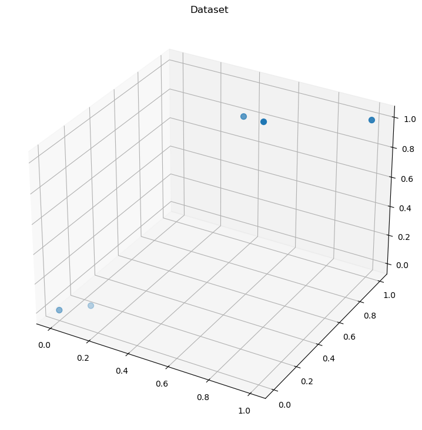
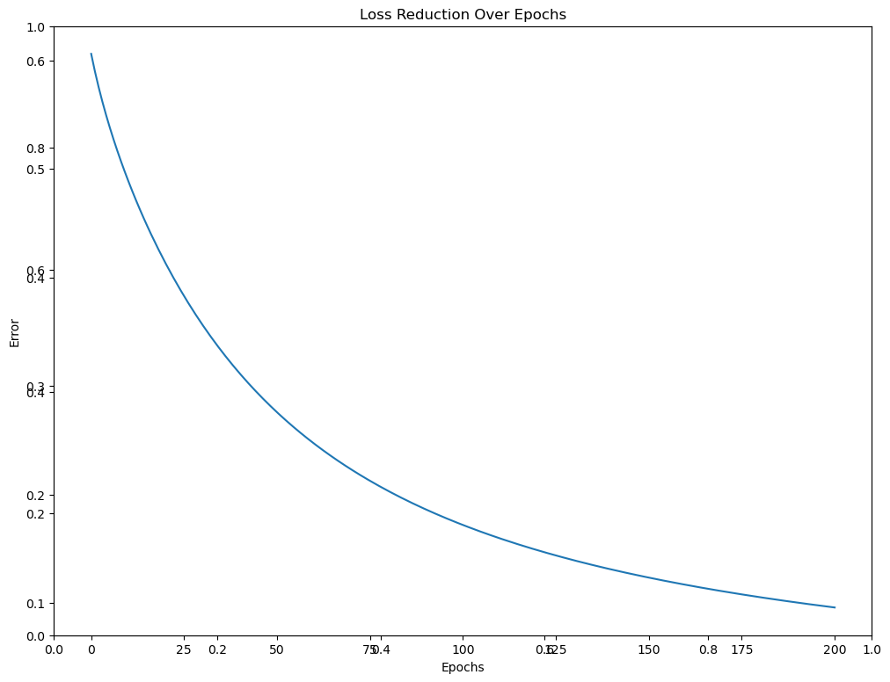
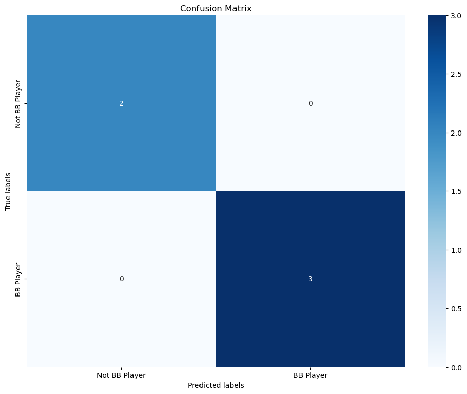

#libraries
import numpy as np
import pandas as pd
import matplotlib.pyplot as plt
import time
from mpl_toolkits import mplot3d
## Confusion matrix (fancy)
import seaborn as sns
from sklearn.metrics import confusion_matrix Logistic Regression
Topics:
- Using gradient descent
- Updating w and with GD and LR
- Using the Loss Function LCE: Cross Entropy
- Using the Sigmoid as the logistic activation
- VisSimple dataset
plt.rcParams["figure.figsize"] = (12, 9)
datafile="SimpleLogRegDataSetBB_Players.csv"
## Here is the tiny dataset:
## Once you get this code to work on this tiny, easy, and already
## normalized dataset, try it on something more complex ;)
## Weight Height BB_Player
# 1.0 1.00 1
# 0.5 0.75 1
# 0.0 0.00 0
# 0.1 0.10 0
# 0.6 0.75 1
## !! Update this to YOUR path
DF = pd.read_csv(datafile)
print(DF) Weight Height BB_Player
0 1.0 1.00 1
1 0.5 0.75 1
2 0.0 0.00 0
3 0.1 0.10 0
4 0.6 0.75 1## Set y to the label. Check the shape!
y = np.array(DF.iloc[:,2]).T
#y = np.array([y]).T
print("y is\n", y)
print("The shape of y is\n", y.shape) y is
[1 1 0 0 1]
The shape of y is
(5,)NOTE: Normalize the data (and not the label!)
Min-Max**
DF=(DF-DF.min())/(DF.max()-DF.min())Or z norm….
#DF=(DF-DF.mean())/DF.std() ## z stardard methodIf your dataset is already normal, skip the above.
Place the data (and not the labels) in DF
DF=DF.iloc[:, [0, 1]]
print(DF)
X = np.array(DF)
print("X is\n", X)
print("The shape of X is\n", X.shape) Weight Height
0 1.0 1.00
1 0.5 0.75
2 0.0 0.00
3 0.1 0.10
4 0.6 0.75
X is
[[1. 1. ]
[0.5 0.75]
[0. 0. ]
[0.1 0.1 ]
[0.6 0.75]]
The shape of X is
(5, 2)##InputColumns = 2
##NumberOfLabels = 2
n = len(DF) ## number of rows of entire X
## Take the label off of X and make it a numpy array
#Learning Rate
LR=1
## Look at the dataset..........
fig = plt.figure()
ax = plt.axes(projection='3d')
y = y
x1 = X[:,0]
x2 = X[:,1]
print(y)
print(x1)
# plotting
ax.scatter(x1, x2, y, s=50)
ax.set_title('Dataset')
plt.show()[1 1 0 0 1]
[1. 0.5 0. 0.1 0.6]
Set up initial weights and biases
w = np.array([[1,1]])
b = 0
print(w)
print(w.shape)[[1 1]]
(1, 2)Before we move forward, we know that at some point we will need to properly multiply \(\mathbf{X}\) and \(\mathbf{w}\).
Let’s try to do this now. Recall that our linear equation looks like
\(w_1x_1 + w_2x_2 + b\)
print("X is\n",X)
print("The shape of X is\n", X.shape)
print("w is\n",w)
print("w tranpose is\n", w.T)
print("The shape of w transpose is\n", w.T.shape)
z = (X @ w.T) + b
print("z = (X @ w.T) + b\n", z)
print("The shape of z is\n", z.shape)X is
[[1. 1. ]
[0.5 0.75]
[0. 0. ]
[0.1 0.1 ]
[0.6 0.75]]
The shape of X is
(5, 2)
w is
[[1 1]]
w tranpose is
[[1]
[1]]
The shape of w transpose is
(2, 1)
z = (X @ w.T) + b
[[2. ]
[1.25]
[0. ]
[0.2 ]
[1.35]]
The shape of z is
(5, 1)OK! Do this by hand as well and compare.
Sigmoid function
Next, we need to apply the sigmoid function to all the \(z\) value results. Let’s create a function for sig
def Sigmoid(s, deriv=False):
if (deriv == True):
return s * (1 - s)
return 1/(1 + np.exp(-s))TEST YOUR FUNCTION!
print(Sigmoid(2)) ## answer should be .880790.8807970779778823OK - it works and so now we can create S_z (\(S(z)\)) by applying the sigmoid to all the values in \(z\)
S_z = Sigmoid(z)
print("S(z) is\n", S_z)S(z) is
[[0.88079708]
[0.77729986]
[0.5 ]
[0.549834 ]
[0.79412963]]Note that S_z (\(S(z)\)) here is the same as \(\hat{y}\)
It is the output of the logistic regression
y_hat = S_zDo and check this by hand.
Loss function
- What is our Loss function?
- How do we calculate the error
Recall that our Loss function is the LCE - Loss Categorical Entropy function for binary (0 and 1) labels.
\[L_{CE} = -\frac{1}{n} \sum ylog(\hat{y}) + (1 - y)log(1 - \hat{y})\]
where \(\hat{y}\) is the predicted value and the \(log\) is \(log\) base \(2\). The “\(y\)” is the label, which here is 0 or 1. The “\(n\)” is the number of rows in the dataset.
Now, think about what we are doing. We want to minimize the \(L_{CE}\) by updating \(\mathbf{w}\) and \(b\) using gradient descent. Our LR (learning rate) was set above and can be tuned.
Shapes matter when using vectors and matrices. Here, we will need to transpose \(y\)
print("y is\n",y)
print("y_hat is\n", y_hat)y is
[1 1 0 0 1]
y_hat is
[[0.88079708]
[0.77729986]
[0.5 ]
[0.549834 ]
[0.79412963]]Here, \(y\) is not the right shape for our goal. We need the transpose. YOU must always check on these types of things.
#print(type(y))
#print(np.transpose([y])) ## you need the []
y = np.transpose([y])
print("Updated y is\n",y)
print("y_hat is\n",y_hat)Updated y is
[[1]
[1]
[0]
[0]
[1]]
y_hat is
[[0.88079708]
[0.77729986]
[0.5 ]
[0.549834 ]
[0.79412963]]##----------------------------------
## Keep each LCE value
AllError_LCE=[]
##----------------------------------
## The epochs are the number of iterations we want to go through
## to recalculate w and b with the goal of optimization (minimization of LCE)
epochs=200
for i in range(epochs):
print("Epoch \n", i)
z = (X @ w.T) + b
print("The z here is\n", z)
y_hat=Sigmoid(z)
print("The y_hat here is\n", y_hat)
## Get the LCE....
Z1=(y*np.log2(y_hat)) + ((1 - y)*np.log2(1 - y_hat))
print("Z1 is\n", Z1)
## Next, we need to sum the values in Z1 and then divide by n
LCE = -(np.sum(Z1))/n ## its "-" in front because we multiply by -1/n
print("The LCE for epoch ", i, "is\n", LCE)
##Keep each LCE value - each error
AllError_LCE.append(LCE)
## Now we need to get the derivatives so we can update w and b
## Recall that dL/dw = dL/dy^ * dy^/dz * dz/dw --> 1/n (y^ - y)xT
## and dL/db = dL/dy^ * dy^/dz * dz/db --> 1/n (y^ - y)
## Let's get y^ - y first and let's call this "error"
error = y_hat-y
print("The error y^ - y is\n", error)
## Next, let's multiply the y^-y by X so that we
## get the shape of w. Recall that w is 1 row by 2 columns
## Let's print this to make sure ...
print(w)
print(w.shape)
dL_dw = (1/n) * np.transpose(error) @ X
print("The dL_dw is\n", dL_dw, "\n")
## Now let's get b
## For b, we will use the average - so we will sum up
## all the error values and then multiply by 1/n
## Let's first get 1/n (y^ - y)
b1=(1/n)*(error)
print(b1)
## Now get the mean of this vector
dL_db=np.average(b1)
print("The dL_db is\n", dL_db)
## OK - let's look at new w and new b
print("The update for w is\n",dL_dw)
print("The update for b is\n", dL_db)
## Use the gradient to update w and b
w = w - (LR * dL_dw)
b = b - (LR * dL_db)
print("The new w value is\n", w)
##end of for loop-------------------------Epoch
0
The z here is
[[2. ]
[1.25]
[0. ]
[0.2 ]
[1.35]]
The y_hat here is
[[0.88079708]
[0.77729986]
[0.5 ]
[0.549834 ]
[0.79412963]]
Z1 is
[[-0.18311841]
[-0.36345684]
[-1. ]
[-1.15147099]
[-0.33255357]]
The LCE for epoch 0 is
0.6061199619961776
The error y^ - y is
[[-0.11920292]
[-0.22270014]
[ 0.5 ]
[ 0.549834 ]
[-0.20587037]]
[[1 1]]
(1, 2)
The dL_dw is
[[-0.05981836 -0.07712948]]
[[-0.02384058]
[-0.04454003]
[ 0.1 ]
[ 0.1099668 ]
[-0.04117407]]
The dL_db is
0.020082422586564168
The update for w is
[[-0.05981836 -0.07712948]]
The update for b is
0.020082422586564168
The new w value is
[[1.05981836 1.07712948]]
Epoch
1
The z here is
[[ 2.11686542]
[ 1.31767387]
[-0.02008242]
[ 0.19361236]
[ 1.42365571]]
The y_hat here is
[[0.89253163]
[0.78879444]
[0.49497956]
[0.54825245]
[0.80591088]]
Z1 is
[[-0.16402479]
[-0.34227871]
[-0.98558632]
[-1.14641133]
[-0.31130779]]
The LCE for epoch 1 is
0.5899217897919758
The error y^ - y is
[[-0.10746837]
[-0.21120556]
[ 0.49497956]
[ 0.54825245]
[-0.19408912]]
[[1.05981836 1.07712948]]
(1, 2)
The dL_dw is
[[-0.05493988 -0.07132283]]
[[-0.02149367]
[-0.04224111]
[ 0.09899591]
[ 0.10965049]
[-0.03881782]]
The dL_db is
0.021218758590194862
The update for w is
[[-0.05493988 -0.07132283]]
The update for b is
0.021218758590194862
The new w value is
[[1.11475824 1.14845231]]
Epoch
2
The z here is
[[ 2.22190936]
[ 1.37741717]
[-0.04130118]
[ 0.18501987]
[ 1.48889299]]
The y_hat here is
[[0.9021998 ]
[0.79857587]
[0.48967617]
[0.54612347]
[0.81591206]]
Z1 is
[[-0.14848113]
[-0.32449862]
[-0.97051509]
[-1.1396282 ]
[-0.29351443]]
The LCE for epoch 2 is
0.5753274945864563
The error y^ - y is
[[-0.0978002 ]
[-0.20142413]
[ 0.48967617]
[ 0.54612347]
[-0.18408794]]
[[1.11475824 1.14845231]]
(1, 2)
The dL_dw is
[[-0.05087054 -0.06646438]]
[[-0.01956004]
[-0.04028483]
[ 0.09793523]
[ 0.10922469]
[-0.03681759]]
The dL_db is
0.02209949449899595
The update for w is
[[-0.05087054 -0.06646438]]
The update for b is
0.02209949449899595
The new w value is
[[1.16562878 1.21491669]]
Epoch
3
The z here is
[[ 2.31714479]
[ 1.43060123]
[-0.06340068]
[ 0.17465387]
[ 1.54716411]]
The y_hat here is
[[0.91028704]
[0.80699498]
[0.48415514]
[0.54355281]
[0.82450376]]
Z1 is
[[-0.13560655]
[-0.3093684 ]
[-0.95499085]
[-1.13148015]
[-0.27840202]]
The LCE for epoch 3 is
0.5619695928450639
The error y^ - y is
[[-0.08971296]
[-0.19300502]
[ 0.48415514]
[ 0.54355281]
[-0.17549624]]
[[1.16562878 1.21491669]]
(1, 2)
The dL_dw is
[[-0.04743159 -0.06234672]]
[[-0.01794259]
[-0.038601 ]
[ 0.09683103]
[ 0.10871056]
[-0.03509925]]
The dL_db is
0.0227797494285219
The update for w is
[[-0.04743159 -0.06234672]]
The update for b is
0.0227797494285219
The new w value is
[[1.21306036 1.27726341]]
Epoch
4
The z here is
[[ 2.40414335]
[ 1.47829732]
[-0.08618043]
[ 0.16285195]
[ 1.59960335]]
The y_hat here is
[[0.91714271]
[0.81431526]
[0.47846822]
[0.54062325]
[0.83196294]]
Z1 is
[[-0.12478186]
[-0.29634065]
[-0.93917292]
[-1.12225025]
[-0.26540883]]
The LCE for epoch 4 is
0.5495909017637961
The error y^ - y is
[[-0.08285729]
[-0.18568474]
[ 0.47846822]
[ 0.54062325]
[-0.16803706]]
[[1.21306036 1.27726341]]
(1, 2)
The dL_dw is
[[-0.04449191 -0.05881726]]
[[-0.01657146]
[-0.03713695]
[ 0.09569364]
[ 0.10812465]
[-0.03360741]]
The dL_db is
0.023300495170493245
The update for w is
[[-0.04449191 -0.05881726]]
The update for b is
0.023300495170493245
The new w value is
[[1.25755228 1.33608068]]
Epoch
5
The z here is
[[ 2.48415203]
[ 1.52135572]
[-0.10948092]
[ 0.14988237]
[ 1.64711095]]
The y_hat here is
[[0.92302332]
[0.82073803]
[0.47265708]
[0.5374006 ]
[0.8385002 ]]
Z1 is
[[-0.11556099]
[-0.28500629]
[-0.92318666]
[-1.11216471]
[-0.25411696]]
The LCE for epoch 5 is
0.5380071224374031
The error y^ - y is
[[-0.07697668]
[-0.17926197]
[ 0.47265708]
[ 0.5374006 ]
[-0.1614998 ]]
[[1.25755228 1.33608068]]
(1, 2)
The dL_dw is
[[-0.0419535 -0.05576159]]
[[-0.01539534]
[-0.03585239]
[ 0.09453142]
[ 0.10748012]
[-0.03229996]]
The dL_db is
0.023692769567343154
The update for w is
[[-0.0419535 -0.05576159]]
The update for b is
0.023692769567343154
The new w value is
[[1.29950577 1.39184226]]
Epoch
6
The z here is
[[ 2.55817435]
[ 1.56046089]
[-0.13317369]
[ 0.13596111]
[ 1.69041147]]
The y_hat here is
[[0.92812076]
[0.82641948]
[0.4667557 ]
[0.53393801]
[0.84427826]]
Z1 is
[[-0.10761557]
[-0.27505384]
[-0.90713144]
[-1.10140625]
[-0.24420952]]
The LCE for epoch 6 is
0.527083324265059
The error y^ - y is
[[-0.07187924]
[-0.17358052]
[ 0.4667557 ]
[ 0.53393801]
[-0.15572174]]
[[1.29950577 1.39184226]]
(1, 2)
The dL_dw is
[[-0.03974175 -0.05309243]]
[[-0.01437585]
[-0.0347161 ]
[ 0.09335114]
[ 0.1067876 ]
[-0.03114435]]
The dL_db is
0.023980488488201078
The update for w is
[[-0.03974175 -0.05309243]]
The update for b is
0.023980488488201078
The new w value is
[[1.33924752 1.44493469]]
Epoch
7
The z here is
[[ 2.62702803]
[ 1.5961706 ]
[-0.15715418]
[ 0.12126404]
[ 1.73009535]]
The y_hat here is
[[0.93258093]
[0.83148249]
[0.46079212]
[0.53027892]
[0.84942462]]
Z1 is
[[-0.10069916]
[-0.26624221]
[-0.89108651]
[-1.09012374]
[-0.23544218]]
The LCE for epoch 7 is
0.5167187591820922
The error y^ - y is
[[-0.06741907]
[-0.16851751]
[ 0.46079212]
[ 0.53027892]
[-0.15057538]]
[[1.33924752 1.44493469]]
(1, 2)
The dL_dw is
[[-0.03779903 -0.05074217]]
[[-0.01348381]
[-0.0337035 ]
[ 0.09215842]
[ 0.10605578]
[-0.03011508]]
The dL_db is
0.024182362887960534
The update for w is
[[-0.03779903 -0.05074217]]
The update for b is
0.024182362887960534
The new w value is
[[1.37704655 1.49567686]]
Epoch
8
The z here is
[[ 2.69138687]
[ 1.62894438]
[-0.18133654]
[ 0.1059358 ]
[ 1.76664903]]
The y_hat here is
[[0.93651649]
[0.83602498]
[0.45478968]
[0.52645921]
[0.85404045]]
Z1 is
[[-0.0946237 ]
[-0.25838205]
[-0.87511524]
[-1.07843939]
[-0.22762369]]
The LCE for epoch 8 is
0.5068368144672082
The error y^ - y is
[[-0.06348351]
[-0.16397502]
[ 0.45478968]
[ 0.52645921]
[-0.14595955]]
[[1.37704655 1.49567686]]
(1, 2)
The dL_dw is
[[-0.03608017 -0.0486577 ]]
[[-0.0126967 ]
[-0.032795 ]
[ 0.09095794]
[ 0.10529184]
[-0.02919191]]
The dL_db is
0.02431323234120954
The update for w is
[[-0.03608017 -0.0486577 ]]
The update for b is
0.02431323234120954
The new w value is
[[1.41312672 1.54433456]]
Epoch
9
The z here is
[[ 2.75181151]
[ 1.65916451]
[-0.20564977]
[ 0.09009635]
[ 1.80047718]]
The y_hat here is
[[0.94001558]
[0.84012582]
[0.44876799]
[0.52250886]
[0.85820701]]
Z1 is
[[-0.08924343]
[-0.25132269]
[-0.85926842]
[-1.06645415]
[-0.22060241]]
The LCE for epoch 9 is
0.4973782198711204
The error y^ - y is
[[-0.05998442]
[-0.15987418]
[ 0.44876799]
[ 0.52250886]
[-0.14179299]]
[[1.41312672 1.54433456]]
(1, 2)
The dL_dw is
[[-0.03454928 -0.04679678]]
[[-0.01199688]
[-0.03197484]
[ 0.0897536 ]
[ 0.10450177]
[-0.0283586 ]]
The dL_db is
0.02438501024683299
The update for w is
[[-0.03454928 -0.04679678]]
The update for b is
0.02438501024683299
The new w value is
[[1.447676 1.59113135]]
Epoch
10
The z here is
[[ 2.80877257]
[ 1.68715173]
[-0.23003478]
[ 0.07384595]
[ 1.83191933]]
The y_hat here is
[[0.94314804]
[0.84384922]
[0.44274356]
[0.5184531 ]
[0.86199021]]
Z1 is
[[-0.08444386]
[-0.24494286]
[-0.84358672]
[-1.05425179]
[-0.2142566 ]]
The LCE for epoch 10 is
0.48829636518133146
The error y^ - y is
[[-0.05685196]
[-0.15615078]
[ 0.44274356]
[ 0.5184531 ]
[-0.13800979]]
[[1.447676 1.59113135]]
(1, 2)
The dL_dw is
[[-0.03317758 -0.04512542]]
[[-0.01137039]
[-0.03123016]
[ 0.08854871]
[ 0.10369062]
[-0.02760196]]
The dL_db is
0.024407365534414166
The update for w is
[[-0.03317758 -0.04512542]]
The update for b is
0.024407365534414166
The new w value is
[[1.48085358 1.63625676]]
Epoch
11
The z here is
[[ 2.8626682 ]
[ 1.71317722]
[-0.25444215]
[ 0.05726889]
[ 1.86126257]]
The y_hat here is
[[0.94596984]
[0.84724793]
[0.43673044]
[0.51431331]
[0.86544404]]
Z1 is
[[-0.08013391]
[-0.23914389]
[-0.82810258]
[-1.04190214]
[-0.20848755]]
The LCE for epoch 11 is
0.4795540159954072
The error y^ - y is
[[-0.05403016]
[-0.15275207]
[ 0.43673044]
[ 0.51431331]
[-0.13455596]]
[[1.48085358 1.63625676]]
(1, 2)
The dL_dw is
[[-0.03194169 -0.04361597]]
[[-0.01080603]
[-0.03055041]
[ 0.08734609]
[ 0.10286266]
[-0.02691119]]
The dL_db is
0.024388222285688026
The update for w is
[[-0.03194169 -0.04361597]]
The update for b is
0.024388222285688026
The new w value is
[[1.51279527 1.67987273]]
Epoch
12
The z here is
[[ 2.91383764]
[ 1.73747182]
[-0.27883037]
[ 0.04043643]
[ 1.88875134]]
The y_hat here is
[[0.94852626]
[0.85036565]
[0.43074055]
[0.51010773]
[0.86861309]]
Z1 is
[[-0.07624038]
[-0.23384477]
[-0.81284176]
[-1.02946357]
[-0.20321439]]
The LCE for epoch 12 is
0.47112097390742036
The error y^ - y is
[[-0.05147374]
[-0.14963435]
[ 0.43074055]
[ 0.51010773]
[-0.13138691]]
[[1.51279527 1.67987273]]
(1, 2)
The dL_dw is
[[-0.03082246 -0.04224578]]
[[-0.01029475]
[-0.02992687]
[ 0.08614811]
[ 0.10202155]
[-0.02627738]]
The dL_db is
0.0243341313731811
The update for w is
[[-0.03082246 -0.04224578]]
The update for b is
0.0243341313731811
The new w value is
[[1.54361773 1.72211852]]
Epoch
13
The z here is
[[ 2.96257174]
[ 1.76023325]
[-0.3031645 ]
[ 0.02340912]
[ 1.91459502]]
The y_hat here is
[[0.95085431]
[0.85323887]
[0.42478408]
[0.50585201]
[0.8715345 ]]
Z1 is
[[-0.07270378]
[-0.2289784 ]
[-0.79782448]
[-1.01698493]
[-0.19837033]]
The LCE for epoch 13 is
0.46297238584412403
The error y^ - y is
[[-0.04914569]
[-0.14676113]
[ 0.42478408]
[ 0.50585201]
[-0.1284655 ]]
[[1.54361773 1.72211852]]
(1, 2)
The dL_dw is
[[-0.02980407 -0.04099609]]
[[-0.00982914]
[-0.02935223]
[ 0.08495682]
[ 0.1011704 ]
[-0.0256931 ]]
The dL_db is
0.024250550711116838
The update for w is
[[-0.02980407 -0.04099609]]
The update for b is
0.024250550711116838
The new w value is
[[1.5734218 1.76311461]]
Epoch
14
The z here is
[[ 3.00912136]
[ 1.7816318 ]
[-0.32741505]
[ 0.00623859]
[ 1.93897398]]
The y_hat here is
[[0.9529845 ]
[0.85589824]
[0.41886971]
[0.50155964]
[0.87423938]]
Z1 is
[[-0.06947534]
[-0.22448881]
[-0.78306645]
[-1.00450721]
[-0.19389973]]
The LCE for epoch 14 is
0.4550875067287727
The error y^ - y is
[[-0.0470155 ]
[-0.14410176]
[ 0.41886971]
[ 0.50155964]
[-0.12576062]]
[[1.5734218 1.76311461]]
(1, 2)
The dL_dw is
[[-0.02887336 -0.03985126]]
[[-0.0094031 ]
[-0.02882035]
[ 0.08377394]
[ 0.10031193]
[-0.02515212]]
The dL_db is
0.02414205928591921
The update for w is
[[-0.02887336 -0.03985126]]
The update for b is
0.02414205928591921
The new w value is
[[1.60229516 1.80296587]]
Epoch
15
The z here is
[[ 3.05370392]
[ 1.80181487]
[-0.35155711]
[-0.01103101]
[ 1.96204439]]
The y_hat here is
[[0.95494217]
[0.85836971]
[0.41300488]
[0.49724228]
[0.87675403]]
Z1 is
[[-0.06651473]
[-0.22032892]
[-0.76857958]
[-0.99206475]
[-0.18975594]]
The LCE for epoch 15 is
0.44744878331460736
The error y^ - y is
[[-0.04505783]
[-0.14163029]
[ 0.41300488]
[ 0.49724228]
[-0.12324597]]
[[1.60229516 1.80296587]]
(1, 2)
The dL_dw is
[[-0.02801927 -0.03879816]]
[[-0.00901157]
[-0.02832606]
[ 0.08260098]
[ 0.09944846]
[-0.02464919]]
The dL_db is
0.024012522544826904
The update for w is
[[-0.02801927 -0.03879816]]
The update for b is
0.024012522544826904
The new w value is
[[1.63031442 1.84176403]]
Epoch
16
The z here is
[[ 3.09650882]
[ 1.8209106 ]
[-0.37556964]
[-0.02836179]
[ 1.98394204]]
The y_hat here is
[[0.95674851]
[0.86067536]
[0.40719589]
[0.49291003]
[0.87910076]]
Z1 is
[[-0.06378835]
[-0.21645893]
[-0.75437264]
[-0.97968635]
[-0.18589956]]
The LCE for epoch 16 is
0.4400411685610722
The error y^ - y is
[[-0.04325149]
[-0.13932464]
[ 0.40719589]
[ 0.49291003]
[-0.12089924]]
[[1.63031442 1.84176403]]
(1, 2)
The dL_dw is
[[-0.02723247 -0.03782568]]
[[-0.0086503 ]
[-0.02786493]
[ 0.08143918]
[ 0.09858201]
[-0.02417985]]
The dL_db is
0.02386522159934963
The update for w is
[[-0.02723247 -0.03782568]]
The update for b is
0.02386522159934963
The new w value is
[[1.6575469 1.87958971]]
Epoch
17
The z here is
[[ 3.13770175]
[ 1.83903087]
[-0.39943486]
[-0.0457212 ]
[ 2.00478556]]
The y_hat here is
[[0.95842139]
[0.86283405]
[0.40144813]
[0.48857169]
[0.88129862]]
Z1 is
[[-0.06126799]
[-0.21284498]
[-0.74045182]
[-0.96739608]
[-0.18229715]]
The LCE for epoch 17 is
0.43285160349013163
The error y^ - y is
[[-0.04157861]
[-0.13716595]
[ 0.40144813]
[ 0.48857169]
[-0.11870138]]
[[1.6575469 1.87958971]]
(1, 2)
The dL_dw is
[[-0.02650505 -0.03692439]]
[[-0.00831572]
[-0.02743319]
[ 0.08028963]
[ 0.09771434]
[-0.02374028]]
The dL_db is
0.023702955190617908
The update for w is
[[-0.02650505 -0.03692439]]
The update for b is
0.023702955190617908
The new w value is
[[1.68405194 1.9165141 ]]
Epoch
18
The z here is
[[ 3.17742823]
[ 1.85627373]
[-0.42313781]
[-0.06308121]
[ 2.02467893]]
The y_hat here is
[[0.95997597]
[0.86486203]
[0.39576614]
[0.48423493]
[0.88336395]]
Z1 is
[[-0.0589298 ]
[-0.20945809]
[-0.72682107]
[-0.95521401]
[-0.17892013]]
The LCE for epoch 18 is
0.4258686220477691
The error y^ - y is
[[-0.04002403]
[-0.13513797]
[ 0.39576614]
[ 0.48423493]
[-0.11663605]]
[[1.68405194 1.9165141 ]]
(1, 2)
The dL_dw is
[[-0.02583023 -0.03608621]]
[[-0.00800481]
[-0.02702759]
[ 0.07915323]
[ 0.09684699]
[-0.02332721]]
The dL_db is
0.023528120924196348
The update for w is
[[-0.02583023 -0.03608621]]
The update for b is
0.023528120924196348
The new w value is
[[1.70988217 1.95260031]]
Epoch
19
The z here is
[[ 3.21581655]
[ 1.87272539]
[-0.44666593]
[-0.08041768]
[ 2.0437136 ]]
The y_hat here is
[[0.96142516]
[0.86677331]
[0.39015376]
[0.47990641]
[0.88531087]]
Z1 is
[[-0.05675353]
[-0.20627336]
[-0.71348256]
[-0.94315683]
[-0.17574396]]
The LCE for epoch 19 is
0.4190820472154619
The error y^ - y is
[[-0.03857484]
[-0.13322669]
[ 0.39015376]
[ 0.47990641]
[-0.11468913]]
[[1.70988217 1.95260031]]
(1, 2)
The dL_dw is
[[-0.0252022 -0.03530421]]
[[-0.00771497]
[-0.02664534]
[ 0.07803075]
[ 0.09598128]
[-0.02293783]]
The dL_db is
0.0233427805635617
The update for w is
[[-0.0252022 -0.03530421]]
The update for b is
0.0233427805635617
The new w value is
[[1.73508438 1.98790452]]
Epoch
20
The z here is
[[ 3.25298018]
[ 1.88846187]
[-0.47000871]
[-0.09770982]
[ 2.0619703 ]]
The y_hat here is
[[0.96278005]
[0.86858005]
[0.38461418]
[0.47559196]
[0.88715157]]
Z1 is
[[-0.05472184]
[-0.20326927]
[-0.7004369 ]
[-0.93123829]
[-0.17274748]]
The LCE for epoch 20 is
0.4124827554394737
The error y^ - y is
[[-0.03721995]
[-0.13141995]
[ 0.38461418]
[ 0.47559196]
[-0.11284843]]
[[1.73508438 1.98790452]]
(1, 2)
The dL_dw is
[[-0.02461596 -0.03457241]]
[[-0.00744399]
[-0.02628399]
[ 0.07692284]
[ 0.09511839]
[-0.02256969]]
The dL_db is
0.023148712945823866
The update for w is
[[-0.02461596 -0.03457241]]
The update for b is
0.023148712945823866
The new w value is
[[1.75970033 2.02247693]]
Epoch
21
The z here is
[[ 3.28901983]
[ 1.90355043]
[-0.49315743]
[-0.1149397 ]
[ 2.07952047]]
The y_hat here is
[[0.9640502 ]
[0.87029284]
[0.37915004]
[0.47129667]
[0.88889668]]
Z1 is
[[-0.05281982]
[-0.20042717]
[-0.68768344]
[-0.91946968]
[-0.16991235]]
The LCE for epoch 21 is
0.40606249264326816
The error y^ - y is
[[-0.0359498 ]
[-0.12970716]
[ 0.37915004]
[ 0.47129667]
[-0.11110332]]
[[1.75970033 2.02247693]]
(1, 2)
The dL_dw is
[[-0.02406714 -0.0338856 ]]
[[-0.00718996]
[-0.02594143]
[ 0.07583001]
[ 0.09425933]
[-0.02222066]]
The dL_db is
0.02294745719880774
The update for w is
[[-0.02406714 -0.0338856 ]]
The update for b is
0.02294745719880774
The new w value is
[[1.78376747 2.05636252]]
Epoch
22
The z here is
[[ 3.32402512]
[ 1.91805075]
[-0.51610488]
[-0.13209188]
[ 2.09642749]]
The y_hat here is
[[0.96524388]
[0.87192091]
[0.37376349]
[0.46702496]
[0.89055546]]
Z1 is
[[-0.05103459]
[-0.19773082]
[-0.67522048]
[-0.90786013]
[-0.16722263]]
The LCE for epoch 22 is
0.3998137294924962
The error y^ - y is
[[-0.03475612]
[-0.12807909]
[ 0.37376349]
[ 0.46702496]
[-0.10944454]]
[[1.78376747 2.05636252]]
(1, 2)
The dL_dw is
[[-0.02355198 -0.03323927]]
[[-0.00695122]
[-0.02561582]
[ 0.0747527 ]
[ 0.09340499]
[-0.02188891]]
The dL_db is
0.02274034829330798
The update for w is
[[-0.02355198 -0.03323927]]
The update for b is
0.02274034829330798
The new w value is
[[1.80731945 2.08960179]]
Epoch
23
The z here is
[[ 3.35807601]
[ 1.93201584]
[-0.53884523]
[-0.14915311]
[ 2.11274778]]
The y_hat here is
[[0.9663683 ]
[0.87347237]
[0.36845625]
[0.4627807 ]
[0.89213604]]
Z1 is
[[-0.04935496]
[-0.19516602]
[-0.66304542]
[-0.89641695]
[-0.16466438]]
The LCE for epoch 23 is
0.39372954674578314
The error y^ - y is
[[-0.0336317 ]
[-0.12652763]
[ 0.36845625]
[ 0.4627807 ]
[-0.10786396]]
[[1.80731945 2.08960179]]
(1, 2)
The dL_dw is
[[-0.02306716 -0.03262946]]
[[-0.00672634]
[-0.02530553]
[ 0.07369125]
[ 0.09255614]
[-0.02157279]]
The dL_db is
0.022528546488627815
The update for w is
[[-0.02306716 -0.03262946]]
The update for b is
0.022528546488627815
The new w value is
[[1.83038662 2.12223126]]
Epoch
24
The z here is
[[ 3.3912441 ]
[ 1.94549297]
[-0.56137378]
[-0.16611199]
[ 2.12853163]]
The y_hat here is
[[0.96742977]
[0.87495436]
[0.36322965]
[0.45856723]
[0.89364553]]
Z1 is
[[-0.04777116]
[-0.19272032]
[-0.65115494]
[-0.88514589]
[-0.1622254 ]]
The LCE for epoch 24 is
0.3878035438201933
The error y^ - y is
[[-0.03257023]
[-0.12504564]
[ 0.36322965]
[ 0.45856723]
[-0.10635447]]
[[1.83038662 2.12223126]]
(1, 2)
The dL_dw is
[[-0.0226098 -0.03205272]]
[[-0.00651405]
[-0.02500913]
[ 0.07264593]
[ 0.09171345]
[-0.02127089]]
The dL_db is
0.02231306187542358
The update for w is
[[-0.0226098 -0.03205272]]
The update for b is
0.02231306187542358
The new w value is
[[1.85299642 2.15428398]]
Epoch
25
The z here is
[[ 3.42359355]
[ 1.95852435]
[-0.58368684]
[-0.1829588 ]
[ 2.14382399]]
The y_hat here is
[[0.96843381]
[0.87637316]
[0.35808469]
[0.45438746]
[0.89509024]]
Z1 is
[[-0.04627465]
[-0.19038279]
[-0.63954513]
[-0.8740513 ]
[-0.15989496]]
The LCE for epoch 25 is
0.3820297653816017
The error y^ - y is
[[-0.03156619]
[-0.12362684]
[ 0.35808469]
[ 0.45438746]
[-0.10490976]]
[[1.85299642 2.15428398]]
(1, 2)
The dL_dw is
[[-0.02217734 -0.03150598]]
[[-0.00631324]
[-0.02472537]
[ 0.07161694]
[ 0.09087749]
[-0.02098195]]
The dL_db is
0.02209477495388405
The update for w is
[[-0.02217734 -0.03150598]]
The update for b is
0.02209477495388405
The new w value is
[[1.87517376 2.18578995]]
Epoch
26
The z here is
[[ 3.4551821 ]
[ 1.97114773]
[-0.60578162]
[-0.19968524]
[ 2.15866511]]
The y_hat here is
[[0.96938531]
[0.87773434]
[0.35302207]
[0.45024391]
[0.89647573]]
Z1 is
[[-0.04485788]
[-0.18814375]
[-0.62821159]
[-0.86313642]
[-0.15766357]]
The LCE for epoch 26 is
0.37640264201239987
The error y^ - y is
[[-0.03061469]
[-0.12226566]
[ 0.35302207]
[ 0.45024391]
[-0.10352427]]
[[1.87517376 2.18578995]]
(1, 2)
The dL_dw is
[[-0.02176754 -0.03098655]]
[[-0.00612294]
[-0.02445313]
[ 0.07060441]
[ 0.09004878]
[-0.02070485]]
The dL_db is
0.021874453983726644
The update for w is
[[-0.02176754 -0.03098655]]
The update for b is
0.021874453983726644
The new w value is
[[1.8969413 2.2167765]]
Epoch
27
The z here is
[[ 3.48606174]
[ 1.98339696]
[-0.62765607]
[-0.21628429]
[ 2.17309109]]
The y_hat here is
[[0.97028857]
[0.87904281]
[0.34804221]
[0.44613873]
[0.89780692]]
Z1 is
[[-0.04351422]
[-0.18599466]
[-0.61714953]
[-0.85240343]
[-0.15552288]]
The LCE for epoch 27 is
0.37091694193412655
The error y^ - y is
[[-0.02971143]
[-0.12095719]
[ 0.34804221]
[ 0.44613873]
[-0.10219308]]
[[1.8969413 2.2167765]]
(1, 2)
The dL_dw is
[[-0.0213784 -0.03049205]]
[[-0.00594229]
[-0.02419144]
[ 0.06960844]
[ 0.08922775]
[-0.02043862]]
The dL_db is
0.021652769688523026
The update for w is
[[-0.0213784 -0.03049205]]
The update for b is
0.021652769688523026
The new w value is
[[1.9183197 2.24726855]]
Epoch
28
The z here is
[[ 3.51627942]
[ 1.99530243]
[-0.64930884]
[-0.23275001]
[ 2.1871344 ]]
The y_hat here is
[[0.97114744]
[0.88030298]
[0.34314531]
[0.44207376]
[0.89908821]]
Z1 is
[[-0.04223776]
[-0.18392794]
[-0.60635383]
[-0.84185369]
[-0.15346543]]
The LCE for epoch 28 is
0.365567731456907
The error y^ - y is
[[-0.02885256]
[-0.11969702]
[ 0.34314531]
[ 0.44207376]
[-0.10091179]]
[[1.9183197 2.24726855]]
(1, 2)
The dL_dw is
[[-0.02100815 -0.03002036]]
[[-0.00577051]
[-0.0239394 ]
[ 0.06862906]
[ 0.08841475]
[-0.02018236]]
The dL_db is
0.02143030777832639
The update for w is
[[-0.02100815 -0.03002036]]
The update for b is
0.02143030777832639
The new w value is
[[1.93932785 2.27728891]]
Epoch
29
The z here is
[[ 3.54587762]
[ 2.00689147]
[-0.67073915]
[-0.24907747]
[ 2.20082425]]
The y_hat here is
[[0.97196531]
[0.88151874]
[0.33833135]
[0.43805058]
[0.9003235 ]]
Z1 is
[[-0.04102326]
[-0.18193685]
[-0.59581918]
[-0.83148781]
[-0.15148461]]
The LCE for epoch 29 is
0.36035034235224067
The error y^ - y is
[[-0.02803469]
[-0.11848126]
[ 0.33833135]
[ 0.43805058]
[-0.0996765 ]]
[[1.93932785 2.27728891]]
(1, 2)
The dL_dw is
[[-0.02065523 -0.02956959]]
[[-0.00560694]
[-0.02369625]
[ 0.06766627]
[ 0.08761012]
[-0.0199353 ]]
The dL_db is
0.021207579662635218
The update for w is
[[-0.02065523 -0.02956959]]
The update for b is
0.021207579662635218
The new w value is
[[1.95998309 2.3068585 ]]
Epoch
30
The z here is
[[ 3.57489486]
[ 2.01818869]
[-0.69194673]
[-0.26526257]
[ 2.214187 ]]
The y_hat here is
[[0.97274526]
[0.88269359]
[0.33360015]
[0.4340705 ]
[0.90151629]]
Z1 is
[[-0.03986605]
[-0.18001538]
[-0.58554003]
[-0.82130574]
[-0.14957453]]
The LCE for epoch 30 is
0.35526034474478596
The error y^ - y is
[[-0.02725474]
[-0.11730641]
[ 0.33360015]
[ 0.4340705 ]
[-0.09848371]]
[[1.95998309 2.3068585 ]]
(1, 2)
The dL_dw is
[[-0.02031822 -0.02913806]]
[[-0.00545095]
[-0.02346128]
[ 0.06672003]
[ 0.0868141 ]
[-0.01969674]]
The dL_db is
0.020985031653919392
The update for w is
[[-0.02031822 -0.02913806]]
The update for b is
0.020985031653919392
The new w value is
[[1.98030131 2.33599656]]
Epoch
31
The z here is
[[ 3.60336611]
[ 2.02921631]
[-0.71293176]
[-0.28130197]
[ 2.22724645]]
The y_hat here is
[[0.97349001]
[0.88383064]
[0.32895135]
[0.43013461]
[0.90266971]]
Z1 is
[[-0.03876191]
[-0.17815815]
[-0.57551074]
[-0.81130692]
[-0.1477299 ]]
The LCE for epoch 31 is
0.3502935244242136
The error y^ - y is
[[-0.02650999]
[-0.11616936]
[ 0.32895135]
[ 0.43013461]
[-0.09733029]]
[[1.98030131 2.33599656]]
(1, 2)
The dL_dw is
[[-0.01999588 -0.02872425]]
[[-0.005302 ]
[-0.02323387]
[ 0.06579027]
[ 0.08602692]
[-0.01946606]]
The dL_db is
0.020763052905471778
The update for w is
[[-0.01999588 -0.02872425]]
The update for b is
0.020763052905471778
The new w value is
[[2.00029719 2.36472081]]
Epoch
32
The z here is
[[ 3.63132318]
[ 2.03999439]
[-0.73369481]
[-0.29719301]
[ 2.24002411]]
The y_hat here is
[[0.97420204]
[0.8849327 ]
[0.32438445]
[0.42624382]
[0.90378655]]
Z1 is
[[-0.03770709]
[-0.17636036]
[-0.56572556]
[-0.8014903 ]
[-0.145946 ]]
The LCE for epoch 32 is
0.34544586371328956
The error y^ - y is
[[-0.02579796]
[-0.1150673 ]
[ 0.32438445]
[ 0.42624382]
[-0.09621345]]
[[2.00029719 2.36472081]]
(1, 2)
The dL_dw is
[[-0.01968706 -0.02832683]]
[[-0.00515959]
[-0.02301346]
[ 0.06487689]
[ 0.08524876]
[-0.01924269]]
The dL_db is
0.020541982282664427
The update for w is
[[-0.01968706 -0.02832683]]
The update for b is
0.020541982282664427
The new w value is
[[2.01998425 2.39304764]]
Epoch
33
The z here is
[[ 3.65879509]
[ 2.05054106]
[-0.75423679]
[-0.31293361]
[ 2.25253948]]
The y_hat here is
[[0.97488355]
[0.88600228]
[0.31989883]
[0.42239884]
[0.90486936]]
Z1 is
[[-0.03669819]
[-0.17461769]
[-0.55617871]
[-0.79185446]
[-0.14421857]]
The LCE for epoch 33 is
0.34071352521022497
The error y^ - y is
[[-0.02511645]
[-0.11399772]
[ 0.31989883]
[ 0.42239884]
[-0.09513064]]
[[2.01998425 2.39304764]]
(1, 2)
The dL_dw is
[[-0.01939076 -0.02794457]]
[[-0.00502329]
[-0.02279954]
[ 0.06397977]
[ 0.08447977]
[-0.01902613]]
The dL_db is
0.020322114331110665
The update for w is
[[-0.01939076 -0.02794457]]
The update for b is
0.020322114331110665
The new w value is
[[2.03937501 2.42099221]]
Epoch
34
The z here is
[[ 3.68580831]
[ 2.06087275]
[-0.77455891]
[-0.32852219]
[ 2.26481025]]
The y_hat here is
[[0.97553657]
[0.88704165]
[0.31549375]
[0.41860024]
[0.9059204 ]]
Z1 is
[[-0.03573214]
[-0.17292625]
[-0.54686438]
[-0.78239762]
[-0.1425438 ]]
The LCE for epoch 34 is
0.336092837864771
The error y^ - y is
[[-0.02446343]
[-0.11295835]
[ 0.31549375]
[ 0.41860024]
[-0.0940796 ]]
[[2.03937501 2.42099221]]
(1, 2)
The dL_dw is
[[-0.01910607 -0.02757637]]
[[-0.00489269]
[-0.02259167]
[ 0.06309875]
[ 0.08372005]
[-0.01881592]]
The dL_db is
0.020103704476737073
The update for w is
[[-0.01910607 -0.02757637]]
The update for b is
0.020103704476737073
The new w value is
[[2.05848107 2.44856858]]
Epoch
35
The z here is
[[ 3.71238704]
[ 2.07100436]
[-0.79466261]
[-0.34395765]
[ 2.27685247]]
The y_hat here is
[[0.97616292]
[0.88805285]
[0.31116839]
[0.41484844]
[0.90694174]]
Z1 is
[[-0.03480615]
[-0.17128256]
[-0.53777675]
[-0.77311775]
[-0.14091822]]
The LCE for epoch 35 is
0.3315802849580037
The error y^ - y is
[[-0.02383708]
[-0.11194715]
[ 0.31116839]
[ 0.41484844]
[-0.09305826]]
[[2.05848107 2.44856858]]
(1, 2)
The dL_dw is
[[-0.01883215 -0.02722126]]
[[-0.00476742]
[-0.02238943]
[ 0.06223368]
[ 0.08296969]
[-0.01861165]]
The dL_db is
0.019886973569814913
The update for w is
[[-0.01883215 -0.02722126]]
The update for b is
0.019886973569814913
The new w value is
[[2.07731323 2.47578984]]
Epoch
36
The z here is
[[ 3.73855348]
[ 2.08094941]
[-0.81454959]
[-0.35923928]
[ 2.28868073]]
The y_hat here is
[[0.97676425]
[0.88903773]
[0.30692185]
[0.41114373]
[0.90793523]]
Z1 is
[[-0.03391769]
[-0.16968345]
[-0.52891007]
[-0.76401255]
[-0.13933871]]
The LCE for epoch 36 is
0.32717249364240947
The error y^ - y is
[[-0.02323575]
[-0.11096227]
[ 0.30692185]
[ 0.41114373]
[-0.09206477]]
[[2.07731323 2.47578984]]
(1, 2)
The dL_dw is
[[-0.01856827 -0.02687833]]
[[-0.00464715]
[-0.02219245]
[ 0.06138437]
[ 0.08222875]
[-0.01841295]]
The dL_db is
0.019672111866409443
The update for w is
[[-0.01856827 -0.02687833]]
The update for b is
0.019672111866409443
The new w value is
[[2.0958815 2.50266817]]
Epoch
37
The z here is
[[ 3.76432797]
[ 2.09072018]
[-0.8342217 ]
[-0.37436673]
[ 2.30030833]]
The y_hat here is
[[0.9773421 ]
[0.88999795]
[0.30275316]
[0.40748629]
[0.90890257]]
Z1 is
[[-0.03306446]
[-0.16812608]
[-0.52025859]
[-0.75507955]
[-0.13780244]]
The LCE for epoch 37 is
0.32286622576714397
The error y^ - y is
[[-0.0226579 ]
[-0.11000205]
[ 0.30275316]
[ 0.40748629]
[-0.09109743]]
[[2.0958815 2.50266817]]
(1, 2)
The dL_dw is
[[-0.01831375 -0.02654678]]
[[-0.00453158]
[-0.02200041]
[ 0.06055063]
[ 0.08149726]
[-0.01821949]]
The dL_db is
0.01945928252556795
The update for w is
[[-0.01831375 -0.02654678]]
The update for b is
0.01945928252556795
The new w value is
[[2.11419525 2.52921495]]
Epoch
38
The z here is
[[ 3.78972922]
[ 2.10032786]
[-0.85368098]
[-0.38933996]
[ 2.31174738]]
The y_hat here is
[[0.97789783]
[0.89093504]
[0.29866126]
[0.4038762 ]
[0.90984529]]
Z1 is
[[-0.03224436]
[-0.16660785]
[-0.51181667]
[-0.74631613]
[-0.13630684]]
The LCE for epoch 38 is
0.31865836976728784
The error y^ - y is
[[-0.02210217]
[-0.10906496]
[ 0.29866126]
[ 0.4038762 ]
[-0.09015471]]
[[2.11419525 2.52921495]]
(1, 2)
The dL_dw is
[[-0.01806797 -0.02622586]]
[[-0.00442043]
[-0.02181299]
[ 0.05973225]
[ 0.08077524]
[-0.01803094]]
The dL_db is
0.019248624688180567
The update for w is
[[-0.01806797 -0.02622586]]
The update for b is
0.019248624688180567
The new w value is
[[2.13226323 2.55544081]]
Epoch
39
The z here is
[[ 3.81477443]
[ 2.10978261]
[-0.8729296 ]
[-0.4041592 ]
[ 2.32300894]]
The y_hat here is
[[0.97843271]
[0.89185037]
[0.29464508]
[0.40031346]
[0.91076479]]
Z1 is
[[-0.03145545]
[-0.16512642]
[-0.50357872]
[-0.7377195 ]
[-0.13484958]]
The LCE for epoch 39 is
0.3145459334387367
The error y^ - y is
[[-0.02156729]
[-0.10814963]
[ 0.29464508]
[ 0.40031346]
[-0.08923521]]
[[2.13226323 2.55544081]]
(1, 2)
The dL_dw is
[[-0.01783038 -0.02591491]]
[[-0.00431346]
[-0.02162993]
[ 0.05892902]
[ 0.08006269]
[-0.01784704]]
The dL_db is
0.019040256193260118
The update for w is
[[-0.01783038 -0.02591491]]
The update for b is
0.019040256193260118
The new w value is
[[2.1500936 2.58135572]]
Epoch
40
The z here is
[[ 3.83947946]
[ 2.11909373]
[-0.89196986]
[-0.41882493]
[ 2.33410309]]
The y_hat here is
[[0.97894793]
[0.89274518]
[0.29070348]
[0.39679797]
[0.91166233]]
Z1 is
[[-0.03069597]
[-0.16367965]
[-0.49553923]
[-0.72928681]
[-0.13342852]]
The LCE for epoch 40 is
0.3105260374544247
The error y^ - y is
[[-0.02105207]
[-0.10725482]
[ 0.29070348]
[ 0.39679797]
[-0.08833767]]
[[2.1500936 2.58135572]]
(1, 2)
The dL_dw is
[[-0.01760046 -0.02561333]]
[[-0.00421041]
[-0.02145096]
[ 0.0581407 ]
[ 0.07935959]
[-0.01766753]]
The dL_db is
0.01883427597897027
The update for w is
[[-0.01760046 -0.02561333]]
The update for b is
0.01883427597897027
The new w value is
[[2.16769406 2.60696905]]
Epoch
41
The z here is
[[ 3.86385897]
[ 2.12826968]
[-0.91080414]
[-0.43333783]
[ 2.34503909]]
The y_hat here is
[[0.97944454]
[0.89362063]
[0.28683531]
[0.39332957]
[0.9125391 ]]
Z1 is
[[-0.02996429]
[-0.1622656 ]
[-0.48769283]
[-0.72101511]
[-0.13204172]]
The LCE for epoch 41 is
0.30659590950477716
The error y^ - y is
[[-0.02055546]
[-0.10637937]
[ 0.28683531]
[ 0.39332957]
[-0.0874609 ]]
[[2.16769406 2.60696905]]
(1, 2)
The dL_dw is
[[-0.01737775 -0.02532054]]
[[-0.00411109]
[-0.02127587]
[ 0.05736706]
[ 0.07866591]
[-0.01749218]]
The dL_db is
0.01863076620874369
The update for w is
[[-0.01737775 -0.02532054]]
The update for b is
0.01863076620874369
The new w value is
[[2.1850718 2.63228959]]
Epoch
42
The z here is
[[ 3.88792649]
[ 2.13731819]
[-0.9294349 ]
[-0.44769876]
[ 2.35582537]]
The y_hat here is
[[0.97992354]
[0.89447775]
[0.28303937]
[0.38990804]
[0.91339615]]
Z1 is
[[-0.02925891]
[-0.1608825 ]
[-0.4800342 ]
[-0.71290139]
[-0.13068739]]
The LCE for epoch 42 is
0.302752878967056
The error y^ - y is
[[-0.02007646]
[-0.10552225]
[ 0.28303937]
[ 0.38990804]
[-0.08660385]]
[[2.1850718 2.63228959]]
(1, 2)
The dL_dw is
[[-0.01716182 -0.02503605]]
[[-0.00401529]
[-0.02110445]
[ 0.05660787]
[ 0.07798161]
[-0.01732077]]
The dL_db is
0.018429794157006525
The update for w is
[[-0.01716182 -0.02503605]]
The update for b is
0.018429794157006525
The new w value is
[[2.20223362 2.65732564]]
Epoch
43
The z here is
[[ 3.91169456]
[ 2.14624634]
[-0.9478647 ]
[-0.46190877]
[ 2.3664697 ]]
The y_hat here is
[[0.98038584]
[0.89531749]
[0.27931445]
[0.38653311]
[0.91423446]]
Z1 is
[[-0.02857844]
[-0.15952872]
[-0.47255818]
[-0.70494261]
[-0.1293639 ]]
The LCE for epoch 43 is
0.29899437202574025
The error y^ - y is
[[-0.01961416]
[-0.10468251]
[ 0.27931445]
[ 0.38653311]
[-0.08576554]]
[[2.20223362 2.65732564]]
(1, 2)
The dL_dw is
[[-0.01695229 -0.02475938]]
[[-0.00392283]
[-0.0209365 ]
[ 0.05586289]
[ 0.07730662]
[-0.01715311]]
The dL_db is
0.018231413884147445
The update for w is
[[-0.01695229 -0.02475938]]
The update for b is
0.018231413884147445
The new w value is
[[2.21918591 2.68208502]]
Epoch
44
The z here is
[[ 3.93517481]
[ 2.1550606 ]
[-0.96609611]
[-0.47596902]
[ 2.3769792 ]]
The y_hat here is
[[0.9808323 ]
[0.89614073]
[0.27565931]
[0.38320443]
[0.91505492]]
Z1 is
[[-0.02792161]
[-0.15820279]
[-0.46525968]
[-0.6971357 ]
[-0.12806976]]
The LCE for epoch 44 is
0.29531790718014117
The error y^ - y is
[[-0.0191677 ]
[-0.10385927]
[ 0.27565931]
[ 0.38320443]
[-0.08494508]]
[[2.21918591 2.68208502]]
(1, 2)
The dL_dw is
[[-0.01674879 -0.0244901 ]]
[[-0.00383354]
[-0.02077185]
[ 0.05513186]
[ 0.07664089]
[-0.01698902]]
The dL_db is
0.018035667726267673
The update for w is
[[-0.01674879 -0.0244901 ]]
The update for b is
0.018035667726267673
The new w value is
[[2.2359347 2.70657512]]
Epoch
45
The z here is
[[ 3.95837804]
[ 2.16376691]
[-0.98413178]
[-0.4898808 ]
[ 2.38736038]]
The y_hat here is
[[0.98126369]
[0.89694825]
[0.27207272]
[0.37992165]
[0.91585838]]
Z1 is
[[-0.02728721]
[-0.15690334]
[-0.45813376]
[-0.68947757]
[-0.12680357]]
The LCE for epoch 45 is
0.29172109108679994
The error y^ - y is
[[-0.01873631]
[-0.10305175]
[ 0.27207272]
[ 0.37992165]
[-0.08414162]]
[[2.2359347 2.70657512]]
(1, 2)
The dL_dw is
[[-0.016551 -0.02422783]]
[[-0.00374726]
[-0.02061035]
[ 0.05441454]
[ 0.07598433]
[-0.01682832]]
The dL_db is
0.017842587621786817
The update for w is
[[-0.016551 -0.02422783]]
The update for b is
0.017842587621786817
The new w value is
[[2.2524857 2.73080295]]
Epoch
46
The z here is
[[ 3.98131428]
[ 2.1723707 ]
[-1.00197437]
[-0.5036455 ]
[ 2.39761927]]
The y_hat here is
[[0.98168076]
[0.89774081]
[0.26855341]
[0.37668435]
[0.91664558]]
Z1 is
[[-0.02667415]
[-0.15562912]
[-0.45117558]
[-0.68196515]
[-0.12556407]]
The LCE for epoch 46 is
0.28820161469338024
The error y^ - y is
[[-0.01831924]
[-0.10225919]
[ 0.26855341]
[ 0.37668435]
[-0.08335442]]
[[2.2524857 2.73080295]]
(1, 2)
The dL_dw is
[[-0.01635861 -0.0239722 ]]
[[-0.00366385]
[-0.02045184]
[ 0.05371068]
[ 0.07533687]
[-0.01667088]]
The dL_db is
0.017652196294044777
The update for w is
[[-0.01635861 -0.0239722 ]]
The update for b is
0.017652196294044777
The new w value is
[[2.26884431 2.75477516]]
Epoch
47
The z here is
[[ 4.0039929 ]
[ 2.18087696]
[-1.01962656]
[-0.51726462]
[ 2.40776139]]
The y_hat here is
[[0.98208418]
[0.89851906]
[0.26510015]
[0.37349208]
[0.91741724]]
Z1 is
[[-0.0260814 ]
[-0.15437898]
[-0.44438043]
[-0.67459535]
[-0.12435008]]
The LCE for epoch 47 is
0.2847572496282077
The error y^ - y is
[[-0.01791582]
[-0.10148094]
[ 0.26510015]
[ 0.37349208]
[-0.08258276]]
[[2.26884431 2.75477516]]
(1, 2)
The dL_dw is
[[-0.01617135 -0.02372288]]
[[-0.00358316]
[-0.02029619]
[ 0.05302003]
[ 0.07469842]
[-0.01651655]]
The dL_db is
0.01746450830654494
The update for w is
[[-0.01617135 -0.02372288]]
The update for b is
0.01746450830654494
The new w value is
[[2.28501565 2.77849803]]
Epoch
48
The z here is
[[ 4.02642262]
[ 2.18929028]
[-1.03709107]
[-0.5307397 ]
[ 2.41779185]]
The y_hat here is
[[0.98247459]
[0.89928364]
[0.26171166]
[0.37034438]
[0.918174 ]]
Z1 is
[[-0.025508 ]
[-0.15315187]
[-0.43774373]
[-0.66736511]
[-0.12316052]]
The LCE for epoch 48 is
0.2813858448156342
The error y^ - y is
[[-0.01752541]
[-0.10071636]
[ 0.26171166]
[ 0.37034438]
[-0.081826 ]]
[[2.28501565 2.77849803]]
(1, 2)
The dL_dw is
[[-0.01598895 -0.02347955]]
[[-0.00350508]
[-0.02014327]
[ 0.05234233]
[ 0.07406888]
[-0.0163652 ]]
The dL_db is
0.01727953100535395
The update for w is
[[-0.01598895 -0.02347955]]
The update for b is
0.01727953100535395
The new w value is
[[2.3010046 2.80197758]]
Epoch
49
The z here is
[[ 4.04861158]
[ 2.19761489]
[-1.0543706 ]
[-0.54407238]
[ 2.42771535]]
The y_hat here is
[[0.98285258]
[0.90003512]
[0.25838671]
[0.36724075]
[0.91891647]]
Z1 is
[[-0.02495305]
[-0.15194679]
[-0.43126099]
[-0.66027141]
[-0.12199437]]
The LCE for epoch 49 is
0.2780853232923216
The error y^ - y is
[[-0.01714742]
[-0.09996488]
[ 0.25838671]
[ 0.36724075]
[-0.08108353]]
[[2.3010046 2.80197758]]
(1, 2)
The dL_dw is
[[-0.01581118 -0.02324193]]
[[-0.00342948]
[-0.01999298]
[ 0.05167734]
[ 0.07344815]
[-0.01621671]]
The dL_db is
0.01709726536134876
The update for w is
[[-0.01581118 -0.02324193]]
The update for b is
0.01709726536134876
The new w value is
[[2.31681578 2.82521951]]
Epoch
50
The z here is
[[ 4.07056743]
[ 2.20585466]
[-1.07146787]
[-0.55726434]
[ 2.43753624]]
The y_hat here is
[[0.98321872]
[0.90077403]
[0.25512404]
[0.36418068]
[0.91964521]]
Z1 is
[[-0.02441572]
[-0.15076286]
[-0.42492789]
[-0.65331123]
[-0.12085071]]
The LCE for epoch 50 is
0.27485367920353804
The error y^ - y is
[[-0.01678128]
[-0.09922597]
[ 0.25512404]
[ 0.36418068]
[-0.08035479]]
[[2.31681578 2.82521951]]
(1, 2)
The dL_dw is
[[-0.01563781 -0.02300976]]
[[-0.00335626]
[-0.01984519]
[ 0.05102481]
[ 0.07283614]
[-0.01607096]]
The dL_db is
0.01691770672343439
The update for w is
[[-0.01563781 -0.02300976]]
The update for b is
0.01691770672343439
The new w value is
[[2.3324536 2.84822927]]
Epoch
51
The z here is
[[ 4.09229729]
[ 2.21401318]
[-1.08838557]
[-0.57031729]
[ 2.44725854]]
The y_hat here is
[[0.98357351]
[0.90150086]
[0.25192241]
[0.36116362]
[0.92036074]]
Z1 is
[[-0.02389521]
[-0.14959923]
[-0.41874018]
[-0.64648161]
[-0.11972865]]
The LCE for epoch 51 is
0.27168897496184036
The error y^ - y is
[[-0.01642649]
[-0.09849914]
[ 0.25192241]
[ 0.36116362]
[-0.07963926]]
[[2.3324536 2.84822927]]
(1, 2)
The dL_dw is
[[-0.01546865 -0.02278278]]
[[-0.0032853 ]
[-0.01969983]
[ 0.05038448]
[ 0.07223272]
[-0.01592785]]
The dL_db is
0.01674084549250448
The update for w is
[[-0.01546865 -0.02278278]]
The update for b is
0.01674084549250448
The new w value is
[[2.34792225 2.87101205]]
Epoch
52
The z here is
[[ 4.11380788]
[ 2.22209375]
[-1.10512642]
[-0.58323299]
[ 2.45688597]]
The y_hat here is
[[0.98391746]
[0.90221607]
[0.24878059]
[0.35818902]
[0.92106355]]
Z1 is
[[-0.0233908 ]
[-0.14845512]
[-0.41269376]
[-0.63977963]
[-0.11862739]]
The LCE for epoch 52 is
0.268589338553185
The error y^ - y is
[[-0.01608254]
[-0.09778393]
[ 0.24878059]
[ 0.35818902]
[-0.07893645]]
[[2.34792225 2.87101205]]
(1, 2)
The dL_dw is
[[-0.01530349 -0.02256078]]
[[-0.00321651]
[-0.01955679]
[ 0.04975612]
[ 0.0716378 ]
[-0.01578729]]
The dL_db is
0.016566667724748626
The update for w is
[[-0.01530349 -0.02256078]]
The update for b is
0.016566667724748626
The new w value is
[[2.36322574 2.89357284]]
Epoch
53
The z here is
[[ 4.13510549]
[ 2.23009941]
[-1.12169309]
[-0.59601323]
[ 2.46642199]]
The y_hat here is
[[0.98425102]
[0.90292007]
[0.24569737]
[0.35525633]
[0.9217541 ]]
Z1 is
[[-0.02290179]
[-0.14732981]
[-0.40678464]
[-0.6332024 ]
[-0.11754617]]
The LCE for epoch 53 is
0.2655529609777211
The error y^ - y is
[[-0.01574898]
[-0.09707993]
[ 0.24569737]
[ 0.35525633]
[-0.0782459 ]]
[[2.36322574 2.89357284]]
(1, 2)
The dL_dw is
[[-0.01514217 -0.02234354]]
[[-0.0031498 ]
[-0.01941599]
[ 0.04913947]
[ 0.07105127]
[-0.01564918]]
The dL_db is
0.016395155671897227
The update for w is
[[-0.01514217 -0.02234354]]
The update for b is
0.016395155671897227
The new w value is
[[2.37836791 2.91591638]]
Epoch
54
The z here is
[[ 4.15619605]
[ 2.238033 ]
[-1.13808824]
[-0.60865981]
[ 2.47586979]]
The y_hat here is
[[0.98457463]
[0.90361328]
[0.24267153]
[0.35236497]
[0.92243279]]
Z1 is
[[-0.02242753]
[-0.14622263]
[-0.40100894]
[-0.62674708]
[-0.11648429]]
The LCE for epoch 54 is
0.2625780938143202
The error y^ - y is
[[-0.01542537]
[-0.09638672]
[ 0.24267153]
[ 0.35236497]
[-0.07756721]]
[[2.37836791 2.91591638]]
(1, 2)
The dL_dw is
[[-0.01498451 -0.02213086]]
[[-0.00308507]
[-0.01927734]
[ 0.04853431]
[ 0.07047299]
[-0.01551344]]
The dL_db is
0.01622628826511444
The update for w is
[[-0.01498451 -0.02213086]]
The update for b is
0.01622628826511444
The new w value is
[[2.39335243 2.93804725]]
Epoch
55
The z here is
[[ 4.17708514]
[ 2.24589712]
[-1.15431453]
[-0.62117456]
[ 2.48523236]]
The y_hat here is
[[0.98488869]
[0.90429604]
[0.2397019 ]
[0.34951436]
[0.92310005]]
Z1 is
[[-0.02196741]
[-0.14513295]
[-0.39536291]
[-0.62041089]
[-0.11544108]]
The LCE for epoch 55 is
0.259663046899394
The error y^ - y is
[[-0.01511131]
[-0.09570396]
[ 0.2397019 ]
[ 0.34951436]
[-0.07689995]]
[[2.39335243 2.93804725]]
(1, 2)
The dL_dw is
[[-0.01483037 -0.02192256]]
[[-0.00302226]
[-0.01914079]
[ 0.04794038]
[ 0.06990287]
[-0.01537999]]
The dL_db is
0.01606004154848182
The update for w is
[[-0.01483037 -0.02192256]]
The update for b is
0.01606004154848182
The new w value is
[[2.40818279 2.95996981]]
Epoch
56
The z here is
[[ 4.19777803]
[ 2.25369418]
[-1.17037457]
[-0.63355931]
[ 2.49451246]]
The y_hat here is
[[0.98519359]
[0.90496871]
[0.23678729]
[0.34670391]
[0.92375623]]
Z1 is
[[-0.02152085]
[-0.14406018]
[-0.38984289]
[-0.6141911 ]
[-0.11441591]]
The LCE for epoch 56 is
0.25680618611178857
The error y^ - y is
[[-0.01480641]
[-0.09503129]
[ 0.23678729]
[ 0.34670391]
[-0.07624377]]
[[2.40818279 2.95996981]]
(1, 2)
The dL_dw is
[[-0.01467959 -0.02171846]]
[[-0.00296128]
[-0.01900626]
[ 0.04735746]
[ 0.06934078]
[-0.01524875]]
The dL_db is
0.015896389067344644
The update for w is
[[-0.01467959 -0.02171846]]
The update for b is
0.015896389067344644
The new w value is
[[2.42286238 2.98168827]]
Epoch
57
The z here is
[[ 4.21827969]
[ 2.26142643]
[-1.18627096]
[-0.6458159 ]
[ 2.50371267]]
The y_hat here is
[[0.9854897 ]
[0.90563161]
[0.23392653]
[0.34393303]
[0.92440168]]
Z1 is
[[-0.02108731]
[-0.14300378]
[-0.38444534]
[-0.60808501]
[-0.11340821]]
The LCE for epoch 57 is
0.2540059312565602
The error y^ - y is
[[-0.0145103 ]
[-0.09436839]
[ 0.23392653]
[ 0.34393303]
[-0.07559832]]
[[2.42286238 2.98168827]]
(1, 2)
The dL_dw is
[[-0.01453204 -0.02151841]]
[[-0.00290206]
[-0.01887368]
[ 0.04678531]
[ 0.06878661]
[-0.01511966]]
The dL_db is
0.01573530221620518
The update for w is
[[-0.01453204 -0.02151841]]
The update for b is
0.01573530221620518
The new w value is
[[2.43739441 3.00320668]]
Epoch
58
The z here is
[[ 4.23859483]
[ 2.26909595]
[-1.20200626]
[-0.65794616]
[ 2.51283539]]
The y_hat here is
[[0.98577735]
[0.90628503]
[0.23111851]
[0.34120113]
[0.92503674]]
Z1 is
[[-0.02066626]
[-0.14196324]
[-0.37916684]
[-0.60209001]
[-0.11241742]]
The LCE for epoch 58 is
0.2512607540413022
The error y^ - y is
[[-0.01422265]
[-0.09371497]
[ 0.23111851]
[ 0.34120113]
[-0.07496326]]
[[2.43739441 3.00320668]]
(1, 2)
The dL_dw is
[[-0.01438759 -0.02132224]]
[[-0.00284453]
[-0.01874299]
[ 0.0462237 ]
[ 0.06824023]
[-0.01499265]]
The dL_db is
0.015576750550331525
The update for w is
[[-0.01438759 -0.02132224]]
The update for b is
0.015576750550331525
The new w value is
[[2.45178201 3.02452892]]
Epoch
59
The z here is
[[ 4.25872791]
[ 2.27670468]
[-1.21758301]
[-0.66995192]
[ 2.52188288]]
The y_hat here is
[[0.98605688]
[0.90692927]
[0.22836207]
[0.33850761]
[0.92566172]]
Z1 is
[[-0.02025722]
[-0.14093806]
[-0.37400404]
[-0.59620353]
[-0.11144303]]
The LCE for epoch 59 is
0.24856917613939147
The error y^ - y is
[[-0.01394312]
[-0.09307073]
[ 0.22836207]
[ 0.33850761]
[-0.07433828]]
[[2.45178201 3.02452892]]
(1, 2)
The dL_dw is
[[-0.01424614 -0.02112982]]
[[-0.00278862]
[-0.01861415]
[ 0.04567241]
[ 0.06770152]
[-0.01486766]]
The dL_db is
0.01542070206479688
The update for w is
[[-0.01424614 -0.02112982]]
The update for b is
0.01542070206479688
The new w value is
[[2.46602815 3.04565874]]
Epoch
60
The z here is
[[ 4.27868317]
[ 2.28425441]
[-1.23300372]
[-0.68183503]
[ 2.53085723]]
The y_hat here is
[[0.9863286 ]
[0.90756457]
[0.22565614]
[0.33585187]
[0.92627691]]
Z1 is
[[-0.01985973]
[-0.1399278 ]
[-0.36895373]
[-0.59042303]
[-0.11048454]]
The LCE for epoch 60 is
0.24592976733513022
The error y^ - y is
[[-0.0136714 ]
[-0.09243543]
[ 0.22565614]
[ 0.33585187]
[-0.07372309]]
[[2.46602815 3.04565874]]
(1, 2)
The dL_dw is
[[-0.01410756 -0.02094102]]
[[-0.00273428]
[-0.01848709]
[ 0.04513123]
[ 0.06717037]
[-0.01474462]]
The dL_db is
0.015267123444264088
The update for w is
[[-0.01410756 -0.02094102]]
The update for b is
0.015267123444264088
The new w value is
[[2.4801357 3.06659976]]
Epoch
61
The z here is
[[ 4.29846462]
[ 2.29174683]
[-1.24827084]
[-0.69359729]
[ 2.5397604 ]]
The y_hat here is
[[0.98659279]
[0.9081912 ]
[0.22299961]
[0.33323332]
[0.92688259]]
Z1 is
[[-0.01947335]
[-0.13893203]
[-0.36401277]
[-0.58474607]
[-0.10954149]]
The LCE for epoch 61 is
0.24334114374625973
The error y^ - y is
[[-0.01340721]
[-0.0918088 ]
[ 0.22299961]
[ 0.33323332]
[-0.07311741]]
[[2.4801357 3.06659976]]
(1, 2)
The dL_dw is
[[-0.01397174 -0.02075571]]
[[-0.00268144]
[-0.01836176]
[ 0.04459992]
[ 0.06664666]
[-0.01462348]]
The dL_db is
0.01511598028647691
The update for w is
[[-0.01397174 -0.02075571]]
The update for b is
0.01511598028647691
The new w value is
[[2.49410745 3.08735547]]
Epoch
62
The z here is
[[ 4.3180761 ]
[ 2.2991835 ]
[-1.26338682]
[-0.70524053]
[ 2.54859425]]
The y_hat here is
[[0.98684974]
[0.90880939]
[0.22039142]
[0.33065136]
[0.92747902]]
Z1 is
[[-0.01909766]
[-0.13795035]
[-0.35917813]
[-0.57917024]
[-0.10861345]]
The LCE for epoch 62 is
0.2408019661197426
The error y^ - y is
[[-0.01315026]
[-0.09119061]
[ 0.22039142]
[ 0.33065136]
[-0.07252098]]
[[2.49410745 3.08735547]]
(1, 2)
The dL_dw is
[[-0.0138386 -0.02057376]]
[[-0.00263005]
[-0.01823812]
[ 0.04407828]
[ 0.06613027]
[-0.0145042 ]]
The dL_db is
0.014967237302107288
The update for w is
[[-0.0138386 -0.02057376]]
The update for b is
0.014967237302107288
The new w value is
[[2.50794605 3.10792923]]
Epoch
63
The z here is
[[ 4.33752123]
[ 2.30656589]
[-1.27835406]
[-0.71676653]
[ 2.5573605 ]]
The y_hat here is
[[0.98709971]
[0.90941937]
[0.21783053]
[0.32810541]
[0.92806645]]
Z1 is
[[-0.01873227]
[-0.13698237]
[-0.35444687]
[-0.57369319]
[-0.10769999]]
The LCE for epoch 63 is
0.23831093819708088
The error y^ - y is
[[-0.01290029]
[-0.09058063]
[ 0.21783053]
[ 0.32810541]
[-0.07193355]]
[[2.50794605 3.10792923]]
(1, 2)
The dL_dw is
[[-0.01370804 -0.02039508]]
[[-0.00258006]
[-0.01811613]
[ 0.04356611]
[ 0.06562108]
[-0.01438671]]
The dL_db is
0.0148208584933306
The update for w is
[[-0.01370804 -0.02039508]]
The update for b is
0.0148208584933306
The new w value is
[[2.52165409 3.12832431]]
Epoch
64
The z here is
[[ 4.35680348]
[ 2.31389536]
[-1.29317492]
[-0.72817708]
[ 2.56606077]]
The y_hat here is
[[0.98734296]
[0.91002133]
[0.21531591]
[0.32559488]
[0.92864511]]
Z1 is
[[-0.0183768 ]
[-0.13602774]
[-0.34981614]
[-0.56831261]
[-0.10680073]]
The LCE for epoch 64 is
0.2358668051457408
The error y^ - y is
[[-0.01265704]
[-0.08997867]
[ 0.21531591]
[ 0.32559488]
[-0.07135489]]
[[2.52165409 3.12832431]]
(1, 2)
The dL_dw is
[[-0.01357997 -0.02021955]]
[[-0.00253141]
[-0.01799573]
[ 0.04306318]
[ 0.06511898]
[-0.01427098]]
The dL_db is
0.014676807313255023
The update for w is
[[-0.01357997 -0.02021955]]
The update for b is
0.014676807313255023
The new w value is
[[2.53523406 3.14854386]]
Epoch
65
The z here is
[[ 4.37592619]
[ 2.3211732 ]
[-1.30785172]
[-0.73947393]
[ 2.5746966 ]]
The y_hat here is
[[0.98757971]
[0.91061548]
[0.21284655]
[0.32311919]
[0.92921523]]
Z1 is
[[-0.01803089]
[-0.13508611]
[-0.34528319]
[-0.56302628]
[-0.10591529]]
The LCE for epoch 65 is
0.23346835205352473
The error y^ - y is
[[-0.01242029]
[-0.08938452]
[ 0.21284655]
[ 0.32311919]
[-0.07078477]]
[[2.53523406 3.14854386]]
(1, 2)
The dL_dw is
[[-0.0134543 -0.02004707]]
[[-0.00248406]
[-0.0178769 ]
[ 0.04256931]
[ 0.06462384]
[-0.01415695]]
The dL_db is
0.014535046808112661
The update for w is
[[-0.0134543 -0.02004707]]
The update for b is
0.014535046808112661
The new w value is
[[2.54868835 3.16859092]]
Epoch
66
The z here is
[[ 4.39489251]
[ 2.3284006 ]
[-1.32238677]
[-0.75065884]
[ 2.58326943]]
The y_hat here is
[[0.98781022]
[0.91120201]
[0.21042147]
[0.32067776]
[0.92977704]]
Z1 is
[[-0.0176942 ]
[-0.13415717]
[-0.34084534]
[-0.55783201]
[-0.1050433 ]]
The LCE for epoch 66 is
0.23111440248295917
The error y^ - y is
[[-0.01218978]
[-0.08879799]
[ 0.21042147]
[ 0.32067776]
[-0.07022296]]
[[2.54868835 3.16859092]]
(1, 2)
The dL_dw is
[[-0.01333096 -0.01987754]]
[[-0.00243796]
[-0.0177596 ]
[ 0.04208429]
[ 0.06413555]
[-0.01404459]]
The dL_db is
0.01439553974392549
The update for w is
[[-0.01333096 -0.01987754]]
The update for b is
0.01439553974392549
The new w value is
[[2.56201931 3.18846847]]
Epoch
67
The z here is
[[ 4.41370547]
[ 2.33557869]
[-1.33678231]
[-0.76173353]
[ 2.59178063]]
The y_hat here is
[[0.98803468]
[0.9117811 ]
[0.2080397 ]
[0.31827002]
[0.93033072]]
Z1 is
[[-0.01736641]
[-0.13324059]
[-0.33649999]
[-0.55272766]
[-0.10418443]]
The LCE for epoch 67 is
0.22880381708297354
The error y^ - y is
[[-0.01196532]
[-0.0882189 ]
[ 0.2080397 ]
[ 0.31827002]
[-0.06966928]]
[[2.56201931 3.18846847]]
(1, 2)
The dL_dw is
[[-0.01320987 -0.01971089]]
[[-0.00239306]
[-0.01764378]
[ 0.04160794]
[ 0.063654 ]
[-0.01393386]]
The dL_db is
0.014258248719185443
The update for w is
[[-0.01320987 -0.01971089]]
The update for b is
0.014258248719185443
The new w value is
[[2.57522918 3.20817936]]
Epoch
68
The z here is
[[ 4.43236798]
[ 2.34270855]
[-1.35104056]
[-0.77269971]
[ 2.60023147]]
The y_hat here is
[[0.98825331]
[0.91235292]
[0.20570031]
[0.3158954 ]
[0.93087647]]
Z1 is
[[-0.01704721]
[-0.1323361 ]
[-0.33224465]
[-0.54771115]
[-0.10333836]]
The LCE for epoch 68 is
0.22653549225531605
The error y^ - y is
[[-0.01174669]
[-0.08764708]
[ 0.20570031]
[ 0.3158954 ]
[-0.06912353]]
[[2.57522918 3.20817936]]
(1, 2)
The dL_dw is
[[-0.01309096 -0.01954702]]
[[-0.00234934]
[-0.01752942]
[ 0.04114006]
[ 0.06317908]
[-0.01382471]]
The dL_db is
0.014123136264933394
The update for w is
[[-0.01309096 -0.01954702]]
The update for b is
0.014123136264933394
The new w value is
[[2.58832014 3.22772638]]
Epoch
69
The z here is
[[ 4.45088282]
[ 2.34979116]
[-1.3651637 ]
[-0.78355904]
[ 2.60862317]]
The y_hat here is
[[0.98846632]
[0.91291763]
[0.20340235]
[0.31355334]
[0.93141449]]
Z1 is
[[-0.01673629]
[-0.13144341]
[-0.32807687]
[-0.54278047]
[-0.10250476]]
The LCE for epoch 69 is
0.22430835887331257
The error y^ - y is
[[-0.01153368]
[-0.08708237]
[ 0.20340235]
[ 0.31355334]
[-0.06858551]]
[[2.58832014 3.22772638]]
(1, 2)
The dL_dw is
[[-0.01297417 -0.01938585]]
[[-0.00230674]
[-0.01741647]
[ 0.04068047]
[ 0.06271067]
[-0.0137171 ]]
The dL_db is
0.013990164933483104
The update for w is
[[-0.01297417 -0.01938585]]
The update for b is
0.013990164933483104
The new w value is
[[2.60129431 3.24711223]]
Epoch
70
The z here is
[[ 4.46925267]
[ 2.35682746]
[-1.37915386]
[-0.79431321]
[ 2.6169569 ]]
The y_hat here is
[[0.98867388]
[0.91347538]
[0.20114493]
[0.31124329]
[0.93194496]]
Z1 is
[[-0.01643338]
[-0.13056224]
[-0.3239943 ]
[-0.53793363]
[-0.10168335]]
The LCE for epoch 70 is
0.22212138105071394
The error y^ - y is
[[-0.01132612]
[-0.08652462]
[ 0.20114493]
[ 0.31124329]
[-0.06805504]]
[[2.60129431 3.24711223]]
(1, 2)
The dL_dw is
[[-0.01285943 -0.01922731]]
[[-0.00226522]
[-0.01730492]
[ 0.04022899]
[ 0.06224866]
[-0.01361101]]
The dL_db is
0.01385929737691255
The update for w is
[[-0.01285943 -0.01922731]]
The update for b is
0.01385929737691255
The new w value is
[[2.61415373 3.26633954]]
Epoch
71
The z here is
[[ 4.48748011]
[ 2.36381836]
[-1.39301316]
[-0.80496383]
[ 2.62523373]]
The y_hat here is
[[0.98887618]
[0.91402634]
[0.19892716]
[0.30896471]
[0.93246803]]
Z1 is
[[-0.01613821]
[-0.12969236]
[-0.31999466]
[-0.53316871]
[-0.10087383]]
The LCE for epoch 71 is
0.21997355495850007
The error y^ - y is
[[-0.01112382]
[-0.08597366]
[ 0.19892716]
[ 0.30896471]
[-0.06753197]]
[[2.61415373 3.26633954]]
(1, 2)
The dL_dw is
[[-0.01274667 -0.01907132]]
[[-0.00222476]
[-0.01719473]
[ 0.03978543]
[ 0.06179294]
[-0.01350639]]
The dL_db is
0.013730496416334049
The update for w is
[[-0.01274667 -0.01907132]]
The update for b is
0.013730496416334049
The new w value is
[[2.6269004 3.28541085]]
Epoch
72
The z here is
[[ 4.5055676 ]
[ 2.37076469]
[-1.40674365]
[-0.81551253]
[ 2.63345473]]
The y_hat here is
[[0.98907339]
[0.91457063]
[0.19674818]
[0.30671705]
[0.93298388]]
Z1 is
[[-0.01585052]
[-0.12883351]
[-0.31607574]
[-0.52848382]
[-0.10007594]]
The LCE for epoch 72 is
0.21786390768762404
The error y^ - y is
[[-0.01092661]
[-0.08542937]
[ 0.19674818]
[ 0.30671705]
[-0.06701612]]
[[2.6269004 3.28541085]]
(1, 2)
The dL_dw is
[[-0.01263585 -0.0189178 ]]
[[-0.00218532]
[-0.01708587]
[ 0.03934964]
[ 0.06134341]
[-0.01340322]]
The dL_db is
0.013603725102855175
The update for w is
[[-0.01263585 -0.0189178 ]]
The update for b is
0.013603725102855175
The new w value is
[[2.63953626 3.30432866]]
Epoch
73
The z here is
[[ 4.52351754]
[ 2.37766724]
[-1.42034738]
[-0.82596089]
[ 2.64162087]]
The y_hat here is
[[0.98926569]
[0.91510839]
[0.19460713]
[0.3044998 ]
[0.93349267]]
Z1 is
[[-0.01557006]
[-0.12798546]
[-0.3122354 ]
[-0.52387716]
[-0.09928941]]
The LCE for epoch 73 is
0.2157914961557832
The error y^ - y is
[[-0.01073431]
[-0.08489161]
[ 0.19460713]
[ 0.3044998 ]
[-0.06650733]]
[[2.63953626 3.30432866]]
(1, 2)
The dL_dw is
[[-0.01252691 -0.01876671]]
[[-0.00214686]
[-0.01697832]
[ 0.03892143]
[ 0.06089996]
[-0.01330147]]
The dL_db is
0.013478946771052944
The update for w is
[[-0.01252691 -0.01876671]]
The update for b is
0.013478946771052944
The new w value is
[[2.65206317 3.32309537]]
Epoch
74
The z here is
[[ 4.54133221]
[ 2.38452678]
[-1.43382633]
[-0.83631047]
[ 2.6497331 ]]
The y_hat here is
[[0.98945322]
[0.91563976]
[0.1925032 ]
[0.30231241]
[0.93399454]]
Z1 is
[[-0.01529659]
[-0.12714799]
[-0.30847155]
[-0.51934692]
[-0.09851398]]
The LCE for epoch 74 is
0.21375540605639248
The error y^ - y is
[[-0.01054678]
[-0.08436024]
[ 0.1925032 ]
[ 0.30231241]
[-0.06600546]]
[[2.65206317 3.32309537]]
(1, 2)
The dL_dw is
[[-0.01241979 -0.01861796]]
[[-0.00210936]
[-0.01687205]
[ 0.03850064]
[ 0.06046248]
[-0.01320109]]
The dL_db is
0.01335612508570431
The update for w is
[[-0.01241979 -0.01861796]]
The update for b is
0.01335612508570431
The new w value is
[[2.66448295 3.34171333]]
Epoch
75
The z here is
[[ 4.55901383]
[ 2.39134402]
[-1.44718245]
[-0.84656282]
[ 2.65779232]]
The y_hat here is
[[0.98963615]
[0.91616486]
[0.19043557]
[0.30015438]
[0.93448964]]
Z1 is
[[-0.01502989]
[-0.12632087]
[-0.30478219]
[-0.51489139]
[-0.09774942]]
The LCE for epoch 75 is
0.2117547508480325
The error y^ - y is
[[-0.01036385]
[-0.08383514]
[ 0.19043557]
[ 0.30015438]
[-0.06551036]]
[[2.66448295 3.34171333]]
(1, 2)
The dL_dw is
[[-0.01231444 -0.01847151]]
[[-0.00207277]
[-0.01676703]
[ 0.03808711]
[ 0.06003088]
[-0.01310207]]
The dL_db is
0.01323522408244281
The update for w is
[[-0.01231444 -0.01847151]]
The update for b is
0.01323522408244281
The new w value is
[[2.67679739 3.36018484]]
Epoch
76
The z here is
[[ 4.57656455]
[ 2.39811965]
[-1.46041768]
[-0.85671945]
[ 2.66579939]]
The y_hat here is
[[0.98981462]
[0.9166838 ]
[0.18840345]
[0.2980252 ]
[0.93497813]]
Z1 is
[[-0.01476974]
[-0.12550391]
[-0.30116536]
[-0.51050886]
[-0.09699548]]
The LCE for epoch 76 is
0.20978867078271324
The error y^ - y is
[[-0.01018538]
[-0.0833162 ]
[ 0.18840345]
[ 0.2980252 ]
[-0.06502187]]
[[2.67679739 3.36018484]]
(1, 2)
The dL_dw is
[[-0.01221082 -0.01832728]]
[[-0.00203708]
[-0.01666324]
[ 0.03768069]
[ 0.05960504]
[-0.01300437]]
The dL_db is
0.013116208202947451
The update for w is
[[-0.01221082 -0.01832728]]
The update for b is
0.013116208202947451
The new w value is
[[2.68900821 3.37851212]]
Epoch
77
The z here is
[[ 4.59398644]
[ 2.40485431]
[-1.47353388]
[-0.86678185]
[ 2.67375513]]
The y_hat here is
[[0.98998877]
[0.91719672]
[0.18640608]
[0.29592437]
[0.93546012]]
Z1 is
[[-0.01451593]
[-0.1246969 ]
[-0.29761919]
[-0.50619769]
[-0.09625195]]
The LCE for epoch 77 is
0.20785633197137793
The error y^ - y is
[[-0.01001123]
[-0.08280328]
[ 0.18640608]
[ 0.29592437]
[-0.06453988]]
[[2.68900821 3.37851212]]
(1, 2)
The dL_dw is
[[-0.01210887 -0.01818523]]
[[-0.00200225]
[-0.01656066]
[ 0.03728122]
[ 0.05918487]
[-0.01290798]]
The dL_db is
0.012999042325210953
The update for w is
[[-0.01210887 -0.01818523]]
The update for b is
0.012999042325210953
The new w value is
[[2.70111708 3.39669735]]
Epoch
78
The z here is
[[ 4.6112815 ]
[ 2.41154863]
[-1.48653293]
[-0.87675148]
[ 2.68166033]]
The y_hat here is
[[0.99015874]
[0.91770372]
[0.18444269]
[0.2938514 ]
[0.93593575]]
Z1 is
[[-0.01426826]
[-0.12389965]
[-0.29414183]
[-0.50195629]
[-0.0955186 ]]
The LCE for epoch 78 is
0.2059569254851382
The error y^ - y is
[[-0.00984126]
[-0.08229628]
[ 0.18444269]
[ 0.2938514 ]
[-0.06406425]]
[[2.70111708 3.39669735]]
(1, 2)
The dL_dw is
[[-0.01200856 -0.0180453 ]]
[[-0.00196825]
[-0.01645926]
[ 0.03688854]
[ 0.05877028]
[-0.01281285]]
The dL_db is
0.012883691789381818
The update for w is
[[-0.01200856 -0.0180453 ]]
The update for b is
0.012883691789381818
The new w value is
[[2.71312564 3.41474265]]
Epoch
79
The z here is
[[ 4.62845168]
[ 2.41820319]
[-1.49941662]
[-0.88662979]
[ 2.68951576]]
The y_hat here is
[[0.99032465]
[0.9182049 ]
[0.18251255]
[0.29180581]
[0.93640515]]
Z1 is
[[-0.01402654]
[-0.12311197]
[-0.29073151]
[-0.49778309]
[-0.09479522]]
The LCE for epoch 79 is
0.2040896664907969
The error y^ - y is
[[-0.00967535]
[-0.0817951 ]
[ 0.18251255]
[ 0.29180581]
[-0.06359485]]
[[2.71312564 3.41474265]]
(1, 2)
The dL_dw is
[[-0.01190985 -0.01790745]]
[[-0.00193507]
[-0.01635902]
[ 0.03650251]
[ 0.05836116]
[-0.01271897]]
The dL_db is
0.012770122419627572
The update for w is
[[-0.01190985 -0.01790745]]
The update for b is
0.012770122419627572
The new w value is
[[2.72503549 3.4326501 ]]
Epoch
80
The z here is
[[ 4.64549885]
[ 2.42481858]
[-1.51218674]
[-0.89641818]
[ 2.69732213]]
The y_hat here is
[[0.99048664]
[0.91870037]
[0.18061494]
[0.28978712]
[0.93686844]]
Z1 is
[[-0.01379058]
[-0.12233368]
[-0.28738651]
[-0.49367657]
[-0.09408162]]
The LCE for epoch 80 is
0.20225379341927746
The error y^ - y is
[[-0.00951336]
[-0.08129963]
[ 0.18061494]
[ 0.28978712]
[-0.06313156]]
[[2.72503549 3.4326501 ]]
(1, 2)
The dL_dw is
[[-0.01181268 -0.01777161]]
[[-0.00190267]
[-0.01625993]
[ 0.03612299]
[ 0.05795742]
[-0.01262631]]
The dL_db is
0.012658300542423622
The update for w is
[[-0.01181268 -0.01777161]]
The update for b is
0.012658300542423622
The new w value is
[[2.73684817 3.45042171]]
Epoch
81
The z here is
[[ 4.66242484]
[ 2.43139532]
[-1.52484504]
[-0.90611805]
[ 2.70508014]]
The y_hat here is
[[0.99064481]
[0.91919024]
[0.17874917]
[0.28779486]
[0.93732575]]
Z1 is
[[-0.01356021]
[-0.12156462]
[-0.28410517]
[-0.48963525]
[-0.09337758]]
The LCE for epoch 81 is
0.20044856716563803
The error y^ - y is
[[-0.00935519]
[-0.08080976]
[ 0.17874917]
[ 0.28779486]
[-0.06267425]]
[[2.73684817 3.45042171]]
(1, 2)
The dL_dw is
[[-0.01171703 -0.01763774]]
[[-0.00187104]
[-0.01616195]
[ 0.03574983]
[ 0.05755897]
[-0.01253485]]
The dL_db is
0.012548193001633345
The update for w is
[[-0.01171703 -0.01763774]]
The update for b is
0.012548193001633345
The new w value is
[[2.74856519 3.46805945]]
Epoch
82
The z here is
[[ 4.67923141]
[ 2.43793395]
[-1.53739323]
[-0.91573077]
[ 2.71279047]]
The y_hat here is
[[0.99079929]
[0.91967459]
[0.17691454]
[0.28582858]
[0.93777717]]
Z1 is
[[-0.01333526]
[-0.12080461]
[-0.28088587]
[-0.48565769]
[-0.09268293]]
The LCE for epoch 82 is
0.19867327031940352
The error y^ - y is
[[-0.00920071]
[-0.08032541]
[ 0.17691454]
[ 0.28582858]
[-0.06222283]]
[[2.74856519 3.46805945]]
(1, 2)
The dL_dw is
[[-0.01162285 -0.0175058 ]]
[[-0.00184014]
[-0.01606508]
[ 0.03538291]
[ 0.05716572]
[-0.01244457]]
The dL_db is
0.012439767170710506
The update for w is
[[-0.01162285 -0.0175058 ]]
The update for b is
0.012439767170710506
The new w value is
[[2.76018804 3.48556526]]
Epoch
83
The z here is
[[ 4.6959203 ]
[ 2.44443496]
[-1.549833 ]
[-0.92525767]
[ 2.72045377]]
The y_hat here is
[[0.99095019]
[0.92015354]
[0.17511039]
[0.28388782]
[0.93822284]]
Z1 is
[[-0.01311556]
[-0.12005349]
[-0.27772703]
[-0.48174249]
[-0.09199747]]
The LCE for epoch 83 is
0.1969272064240005
The error y^ - y is
[[-0.00904981]
[-0.07984646]
[ 0.17511039]
[ 0.28388782]
[-0.06177716]]
[[2.76018804 3.48556526]]
(1, 2)
The dL_dw is
[[-0.01153011 -0.01737575]]
[[-0.00180996]
[-0.01596929]
[ 0.03502208]
[ 0.05677756]
[-0.01235543]]
The dL_db is
0.012332990962323143
The update for w is
[[-0.01153011 -0.01737575]]
The update for b is
0.012332990962323143
The new w value is
[[2.77171816 3.50294101]]
Epoch
84
The z here is
[[ 4.71249317]
[ 2.45089884]
[-1.56216599]
[-0.93470008]
[ 2.72807066]]
The y_hat here is
[[0.99109761]
[0.92062716]
[0.17333606]
[0.28197214]
[0.93866285]]
Z1 is
[[-0.01290095]
[-0.1193111 ]
[-0.27462714]
[-0.47788828]
[-0.09132103]]
The LCE for epoch 84 is
0.19520969926413148
The error y^ - y is
[[-0.00890239]
[-0.07937284]
[ 0.17333606]
[ 0.28197214]
[-0.06133715]]
[[2.77171816 3.50294101]]
(1, 2)
The dL_dw is
[[-0.01143878 -0.01724753]]
[[-0.00178048]
[-0.01587457]
[ 0.03466721]
[ 0.05639443]
[-0.01226743]]
The dL_db is
0.012227832835670032
The update for w is
[[-0.01143878 -0.01724753]]
The update for b is
0.012227832835670032
The new w value is
[[2.78315693 3.52018854]]
Epoch
85
The z here is
[[ 4.72895165]
[ 2.45732605]
[-1.57439382]
[-0.94405928]
[ 2.73564174]]
The y_hat here is
[[0.99124166]
[0.92109554]
[0.17159092]
[0.28008112]
[0.93909731]]
Z1 is
[[-0.01269128]
[-0.11857728]
[-0.27158473]
[-0.47409374]
[-0.09065344]]
The LCE for epoch 85 is
0.1935200921799738
The error y^ - y is
[[-0.00875834]
[-0.07890446]
[ 0.17159092]
[ 0.28008112]
[-0.06090269]]
[[2.78315693 3.52018854]]
(1, 2)
The dL_dw is
[[-0.01134881 -0.01712112]]
[[-0.00175167]
[-0.01578089]
[ 0.03431818]
[ 0.05601622]
[-0.01218054]]
The dL_db is
0.012124261801734556
The update for w is
[[-0.01134881 -0.01712112]]
The update for b is
0.012124261801734556
The new w value is
[[2.79450575 3.53730966]]
Epoch
86
The z here is
[[ 4.74529732]
[ 2.46371703]
[-1.58651809]
[-0.95333655]
[ 2.74316761]]
The y_hat here is
[[0.99138243]
[0.92155878]
[0.16987434]
[0.27821431]
[0.93952632]]
Z1 is
[[-0.0124864 ]
[-0.1178519 ]
[-0.26859836]
[-0.47035756]
[-0.08999452]]
The LCE for epoch 86 is
0.1918577474071301
The error y^ - y is
[[-0.00861757]
[-0.07844122]
[ 0.16987434]
[ 0.27821431]
[-0.06047368]]
[[2.79450575 3.53730966]]
(1, 2)
The dL_dw is
[[-0.01126019 -0.01699646]]
[[-0.00172351]
[-0.01568824]
[ 0.03397487]
[ 0.05564286]
[-0.01209474]]
The dL_db is
0.01202224742669807
The update for w is
[[-0.01126019 -0.01699646]]
The update for b is
0.01202224742669807
The new w value is
[[2.80576594 3.55430612]]
Epoch
87
The z here is
[[ 4.76153173]
[ 2.47007223]
[-1.59854033]
[-0.96253313]
[ 2.75064882]]
The y_hat here is
[[0.99152003]
[0.92201696]
[0.16818572]
[0.27637131]
[0.93994998]]
Z1 is
[[-0.01228618]
[-0.11713481]
[-0.26566665]
[-0.46667848]
[-0.08934411]]
The LCE for epoch 87 is
0.19022204544130691
The error y^ - y is
[[-0.00847997]
[-0.07798304]
[ 0.16818572]
[ 0.27637131]
[-0.06005002]]
[[2.80576594 3.55430612]]
(1, 2)
The dL_dw is
[[-0.01117288 -0.01687353]]
[[-0.00169599]
[-0.01559661]
[ 0.03363714]
[ 0.05527426]
[-0.01201 ]]
The dL_db is
0.011921759833713028
The update for w is
[[-0.01117288 -0.01687353]]
The update for b is
0.011921759833713028
The new w value is
[[2.81693881 3.57117965]]
Epoch
88
The z here is
[[ 4.77765637]
[ 2.47639205]
[-1.61046209]
[-0.97165025]
[ 2.75808593]]
The y_hat here is
[[0.99165453]
[0.92247015]
[0.16652447]
[0.2745517 ]
[0.94036839]]
Z1 is
[[-0.01209048]
[-0.11642586]
[-0.26278825]
[-0.46305528]
[-0.08870205]]
The LCE for epoch 88 is
0.18861238442673495
The error y^ - y is
[[-0.00834547]
[-0.07752985]
[ 0.16652447]
[ 0.2745517 ]
[-0.05963161]]
[[2.81693881 3.57117965]]
(1, 2)
The dL_dw is
[[-0.01108684 -0.01675228]]
[[-0.00166909]
[-0.01550597]
[ 0.03330489]
[ 0.05491034]
[-0.01192632]]
The dL_db is
0.011822769703217712
The update for w is
[[-0.01108684 -0.01675228]]
The update for b is
0.011822769703217712
The new w value is
[[2.82802565 3.58793193]]
Epoch
89
The z here is
[[ 4.79367271]
[ 2.48267691]
[-1.62228486]
[-0.98068911]
[ 2.76547947]]
The y_hat here is
[[0.99178604]
[0.92291845]
[0.16489 ]
[0.27275507]
[0.94078164]]
Z1 is
[[-0.01189917]
[-0.11572492]
[-0.25996186]
[-0.45948676]
[-0.08806819]]
The LCE for epoch 89 is
0.1870281795673872
The error y^ - y is
[[-0.00821396]
[-0.07708155]
[ 0.16489 ]
[ 0.27275507]
[-0.05921836]]
[[2.82802565 3.58793193]]
(1, 2)
The dL_dw is
[[-0.01100205 -0.01663268]]
[[-0.00164279]
[-0.01541631]
[ 0.032978 ]
[ 0.05455101]
[-0.01184367]]
The dL_db is
0.01172524827195657
The update for w is
[[-0.01100205 -0.01663268]]
The update for b is
0.01172524827195657
The new w value is
[[2.8390277 3.6045646]]
Epoch
90
The z here is
[[ 4.80958219]
[ 2.48892719]
[-1.63401011]
[-0.98965088]
[ 2.77282996]]
The y_hat here is
[[0.99191464]
[0.92336192]
[0.16328176]
[0.27098104]
[0.94118982]]
Z1 is
[[-0.01171212]
[-0.11503186]
[-0.2571862 ]
[-0.45597176]
[-0.08744237]]
The LCE for epoch 90 is
0.18546886256008935
The error y^ - y is
[[-0.00808536]
[-0.07663808]
[ 0.16328176]
[ 0.27098104]
[-0.05881018]]
[[2.8390277 3.6045646]]
(1, 2)
The dL_dw is
[[-0.01091848 -0.01651469]]
[[-0.00161707]
[-0.01532762]
[ 0.03265635]
[ 0.05419621]
[-0.01176204]]
The dL_db is
0.011629167330854806
The update for w is
[[-0.01091848 -0.01651469]]
The update for b is
0.011629167330854806
The new w value is
[[2.84994618 3.62107929]]
Epoch
91
The z here is
[[ 4.82538619]
[ 2.49514328]
[-1.64563928]
[-0.99853673]
[ 2.7801379 ]]
The y_hat here is
[[0.99204041]
[0.92380064]
[0.16169918]
[0.26922921]
[0.94159303]]
Z1 is
[[-0.01152921]
[-0.11434654]
[-0.25446006]
[-0.45250914]
[-0.08682446]]
The LCE for epoch 91 is
0.18393388104865088
The error y^ - y is
[[-0.00795959]
[-0.07619936]
[ 0.16169918]
[ 0.26922921]
[-0.05840697]]
[[2.84994618 3.62107929]]
(1, 2)
The dL_dw is
[[-0.01083611 -0.01639828]]
[[-0.00159192]
[-0.01523987]
[ 0.03233984]
[ 0.05384584]
[-0.01168139]]
The dL_db is
0.011534499221881423
The update for w is
[[-0.01083611 -0.01639828]]
The update for b is
0.011534499221881423
The new w value is
[[2.86078228 3.63747758]]
Epoch
92
The z here is
[[ 4.84108608]
[ 2.50132555]
[-1.65717378]
[-1.00734779]
[ 2.78740377]]
The y_hat here is
[[0.99216343]
[0.92423469]
[0.16014175]
[0.26749921]
[0.94199134]]
Z1 is
[[-0.01135032]
[-0.11366885]
[-0.25178224]
[-0.44909778]
[-0.0862143 ]]
The LCE for epoch 92 is
0.1824226980981884
The error y^ - y is
[[-0.00783657]
[-0.07576531]
[ 0.16014175]
[ 0.26749921]
[-0.05800866]]
[[2.86078228 3.63747758]]
(1, 2)
The dL_dw is
[[-0.0107549 -0.01628343]]
[[-0.00156731]
[-0.01515306]
[ 0.03202835]
[ 0.05349984]
[-0.01160173]]
The dL_db is
0.011441216834022102
The update for w is
[[-0.0107549 -0.01628343]]
The update for b is
0.011441216834022102
The new w value is
[[2.87153719 3.653761 ]]
Epoch
93
The z here is
[[ 4.85668319]
[ 2.50747435]
[-1.66861499]
[-1.01608518]
[ 2.79462807]]
The y_hat here is
[[0.99228377]
[0.92466414]
[0.15860892]
[0.26579066]
[0.94238484]]
Z1 is
[[-0.01117534]
[-0.11299865]
[-0.24915158]
[-0.44573663]
[-0.08561176]]
The LCE for epoch 93 is
0.18093479168883486
The error y^ - y is
[[-0.00771623]
[-0.07533586]
[ 0.15860892]
[ 0.26579066]
[-0.05761516]]
[[2.87153719 3.653761 ]]
(1, 2)
The dL_dw is
[[-0.01067484 -0.01617009]]
[[-0.00154325]
[-0.01506717]
[ 0.03172178]
[ 0.05315813]
[-0.01152303]]
The dL_db is
0.011349293598471609
The update for w is
[[-0.01067484 -0.01617009]]
The update for b is
0.011349293598471609
The new w value is
[[2.88221202 3.66993109]]
Epoch
94
The z here is
[[ 4.87217882]
[ 2.51359004]
[-1.67996429]
[-1.02474998]
[ 2.80181124]]
The y_hat here is
[[0.99240151]
[0.92508906]
[0.1571002 ]
[0.2641032 ]
[0.94277362]]
Z1 is
[[-0.01100416]
[-0.11233584]
[-0.24656695]
[-0.44242463]
[-0.0850167 ]]
The LCE for epoch 94 is
0.17946965422807246
The error y^ - y is
[[-0.00759849]
[-0.07491094]
[ 0.1571002 ]
[ 0.2641032 ]
[-0.05722638]]
[[2.88221202 3.66993109]]
(1, 2)
The dL_dw is
[[-0.01059589 -0.01605823]]
[[-0.0015197 ]
[-0.01498219]
[ 0.03142004]
[ 0.05282064]
[-0.01144528]]
The dL_db is
0.01125870348314498
The update for w is
[[-0.01059589 -0.01605823]]
The update for b is
0.01125870348314498
The new w value is
[[2.89280792 3.68598932]]
Epoch
95
The z here is
[[ 4.88757424]
[ 2.51967295]
[-1.69122299]
[-1.03334327]
[ 2.80895375]]
The y_hat here is
[[0.99251673]
[0.92550951]
[0.15561507]
[0.26243646]
[0.94315775]]
Z1 is
[[-0.01083667]
[-0.11168028]
[-0.24402727]
[-0.43916075]
[-0.084429 ]]
The LCE for epoch 95 is
0.17802679208095046
The error y^ - y is
[[-0.00748327]
[-0.07449049]
[ 0.15561507]
[ 0.26243646]
[-0.05684225]]
[[2.89280792 3.68598932]]
(1, 2)
The dL_dw is
[[-0.01051804 -0.01594783]]
[[-0.00149665]
[-0.0148981 ]
[ 0.03112301]
[ 0.05248729]
[-0.01136845]]
The dL_db is
0.011169420986596668
The update for w is
[[-0.01051804 -0.01594783]]
The update for b is
0.011169420986596668
The new w value is
[[2.90332596 3.70193715]]
Epoch
96
The z here is
[[ 4.9028707 ]
[ 2.52572343]
[-1.70239241]
[-1.0418661 ]
[ 2.81605603]]
The y_hat here is
[[0.99262949]
[0.92592557]
[0.15415306]
[0.26079009]
[0.94353732]]
Z1 is
[[-0.01067278]
[-0.11103187]
[-0.24153147]
[-0.43594399]
[-0.08384851]]
The LCE for epoch 96 is
0.17660572511748232
The error y^ - y is
[[-0.00737051]
[-0.07407443]
[ 0.15415306]
[ 0.26079009]
[-0.05646268]]
[[2.90332596 3.70193715]]
(1, 2)
The dL_dw is
[[-0.01044126 -0.01583887]]
[[-0.0014741 ]
[-0.01481489]
[ 0.03083061]
[ 0.05215802]
[-0.01129254]]
The dL_db is
0.011081421131428668
The update for w is
[[-0.01044126 -0.01583887]]
The update for b is
0.011081421131428668
The new w value is
[[2.91376722 3.71777602]]
Epoch
97
The z here is
[[ 4.91806941]
[ 2.53174179]
[-1.71347383]
[-1.05031951]
[ 2.82311851]]
The y_hat here is
[[0.99273986]
[0.9263373 ]
[0.15271369]
[0.25916375]
[0.94391239]]
Z1 is
[[-0.01051238]
[-0.1103905 ]
[-0.23907853]
[-0.4327734 ]
[-0.08327513]]
The LCE for epoch 97 is
0.1752059862765471
The error y^ - y is
[[-0.00726014]
[-0.0736627 ]
[ 0.15271369]
[ 0.25916375]
[-0.05608761]]
[[2.91376722 3.71777602]]
(1, 2)
The dL_dw is
[[-0.01036554 -0.0157313 ]]
[[-0.00145203]
[-0.01473254]
[ 0.03054274]
[ 0.05183275]
[-0.01121752]]
The dL_db is
0.010994679457260136
The update for w is
[[-0.01036554 -0.0157313 ]]
The update for b is
0.010994679457260136
The new w value is
[[2.92413276 3.73350732]]
Epoch
98
The z here is
[[ 4.93317156]
[ 2.53772835]
[-1.72446851]
[-1.05870451]
[ 2.83014163]]
The y_hat here is
[[0.9928479 ]
[0.92674476]
[0.15129649]
[0.2575571 ]
[0.94428305]]
Z1 is
[[-0.01035537]
[-0.10975605]
[-0.23666744]
[-0.42964803]
[-0.08270871]]
The LCE for epoch 98 is
0.1738271211456408
The error y^ - y is
[[-0.0071521 ]
[-0.07325524]
[ 0.15129649]
[ 0.2575571 ]
[-0.05571695]]
[[2.92413276 3.73350732]]
(1, 2)
The dL_dw is
[[-0.01029084 -0.01562511]]
[[-0.00143042]
[-0.01465105]
[ 0.0302593 ]
[ 0.05151142]
[-0.01114339]]
The dL_db is
0.010909172013324529
The update for w is
[[-0.01029084 -0.01562511]]
The update for b is
0.010909172013324529
The new w value is
[[2.9344236 3.74913242]]
Epoch
99
The z here is
[[ 4.94817833]
[ 2.54368343]
[-1.73537769]
[-1.06702208]
[ 2.83712579]]
The y_hat here is
[[0.99295368]
[0.92714801]
[0.14990101]
[0.25596981]
[0.94464937]]
Z1 is
[[-0.01020168]
[-0.10912842]
[-0.23429724]
[-0.42656694]
[-0.08214916]]
The LCE for epoch 99 is
0.1724686875558597
The error y^ - y is
[[-0.00704632]
[-0.07285199]
[ 0.14990101]
[ 0.25596981]
[-0.05535063]]
[[2.9344236 3.74913242]]
(1, 2)
The dL_dw is
[[-0.01021714 -0.01552026]]
[[-0.00140926]
[-0.0145704 ]
[ 0.0299802 ]
[ 0.05119396]
[-0.01107013]]
The dL_db is
0.010824875350752976
The update for w is
[[-0.01021714 -0.01552026]]
The update for b is
0.010824875350752976
The new w value is
[[2.94464074 3.76465268]]
Epoch
100
The z here is
[[ 4.96309086]
[ 2.54960732]
[-1.74620256]
[-1.07527322]
[ 2.8440714 ]]
The y_hat here is
[[0.99305725]
[0.92754713]
[0.14852681]
[0.25440156]
[0.94501142]]
Z1 is
[[-0.0100512 ]
[-0.10850751]
[-0.23196698]
[-0.42352925]
[-0.08159634]]
The LCE for epoch 100 is
0.1711302551915141
The error y^ - y is
[[-0.00694275]
[-0.07245287]
[ 0.14852681]
[ 0.25440156]
[-0.05498858]]
[[2.94464074 3.76465268]]
(1, 2)
The dL_dw is
[[-0.01014444 -0.01541674]]
[[-0.00138855]
[-0.01449057]
[ 0.02970536]
[ 0.05088031]
[-0.01099772]]
The dL_db is
0.010741766514597302
The update for w is
[[-0.01014444 -0.01541674]]
The update for b is
0.010741766514597302
The new w value is
[[2.95478517 3.78006942]]
Epoch
101
The z here is
[[ 4.97791027]
[ 2.55550032]
[-1.75694433]
[-1.08345887]
[ 2.85097884]]
The y_hat here is
[[0.99315868]
[0.92794216]
[0.14717345]
[0.25285202]
[0.94536926]]
Z1 is
[[-0.00990385]
[-0.10789321]
[-0.22967575]
[-0.42053408]
[-0.08105014]]
The LCE for epoch 101 is
0.16981140521380136
The error y^ - y is
[[-0.00684132]
[-0.07205784]
[ 0.14717345]
[ 0.25285202]
[-0.05463074]]
[[2.95478517 3.78006942]]
(1, 2)
The dL_dw is
[[-0.0100727 -0.01531451]]
[[-0.00136826]
[-0.01441157]
[ 0.02943469]
[ 0.0505704 ]
[-0.01092615]]
The dL_db is
0.010659823035640477
The update for w is
[[-0.0100727 -0.01531451]]
The update for b is
0.010659823035640477
The new w value is
[[2.96485787 3.79538393]]
Epoch
102
The z here is
[[ 4.99263765]
[ 2.56136273]
[-1.76760415]
[-1.09157997]
[ 2.85784852]]
The y_hat here is
[[0.99325803]
[0.92833317]
[0.14584053]
[0.25132088]
[0.94572297]]
Z1 is
[[-0.00975955]
[-0.10728542]
[-0.22742265]
[-0.41758057]
[-0.08051046]]
The LCE for epoch 102 is
0.16851172989798732
The error y^ - y is
[[-0.00674197]
[-0.07166683]
[ 0.14584053]
[ 0.25132088]
[-0.05427703]]
[[2.96485787 3.79538393]]
(1, 2)
The dL_dw is
[[-0.0100019 -0.01521356]]
[[-0.00134839]
[-0.01433337]
[ 0.02916811]
[ 0.05026418]
[-0.01085541]]
The dL_db is
0.01057902292203737
The update for w is
[[-0.0100019 -0.01521356]]
The update for b is
0.01057902292203737
The new w value is
[[2.97485977 3.81059749]]
Epoch
103
The z here is
[[ 5.00727409]
[ 2.56719483]
[-1.77818317]
[-1.09963745]
[ 2.86468081]]
The y_hat here is
[[0.99335533]
[0.92872022]
[0.14452762]
[0.24980783]
[0.94607261]]
Z1 is
[[-0.00961822]
[-0.10668405]
[-0.22520682]
[-0.41466789]
[-0.07997718]]
The LCE for epoch 103 is
0.16723083228356908
The error y^ - y is
[[-0.00664467]
[-0.07127978]
[ 0.14452762]
[ 0.24980783]
[-0.05392739]]
[[2.97485977 3.81059749]]
(1, 2)
The dL_dw is
[[-0.00993204 -0.01511385]]
[[-0.00132893]
[-0.01425596]
[ 0.02890552]
[ 0.04996157]
[-0.01078548]]
The dL_db is
0.01049934465082444
The update for w is
[[-0.00993204 -0.01511385]]
The update for b is
0.01049934465082444
The new w value is
[[2.98479181 3.82571134]]
Epoch
104
The z here is
[[ 5.02182063]
[ 2.57299689]
[-1.78868252]
[-1.1076322 ]
[ 2.87147607]]
The y_hat here is
[[0.99345066]
[0.92910336]
[0.14323433]
[0.24831258]
[0.94641825]]
Z1 is
[[-0.00947977]
[-0.106089 ]
[-0.22302742]
[-0.41179524]
[-0.0794502 ]]
The LCE for epoch 104 is
0.16596832583691276
The error y^ - y is
[[-0.00654934]
[-0.07089664]
[ 0.14323433]
[ 0.24831258]
[-0.05358175]]
[[2.98479181 3.82571134]]
(1, 2)
The dL_dw is
[[-0.00986309 -0.01501537]]
[[-0.00130987]
[-0.01417933]
[ 0.02864687]
[ 0.04966252]
[-0.01071635]]
The dL_db is
0.01042076715933266
The update for w is
[[-0.00986309 -0.01501537]]
The update for b is
0.01042076715933266
The new w value is
[[2.9946549 3.84072671]]
Epoch
105
The z here is
[[ 5.03627833]
[ 2.5787692 ]
[-1.79910329]
[-1.11556512]
[ 2.87823469]]
The y_hat here is
[[0.99354406]
[0.92948264]
[0.14196026]
[0.24683483]
[0.94675995]]
Z1 is
[[-0.00934414]
[-0.10550018]
[-0.22088362]
[-0.40896182]
[-0.07892941]]
The LCE for epoch 105 is
0.16472383412588187
The error y^ - y is
[[-0.00645594]
[-0.07051736]
[ 0.14196026]
[ 0.24683483]
[-0.05324005]]
[[2.9946549 3.84072671]]
(1, 2)
The dL_dw is
[[-0.00979503 -0.0149181 ]]
[[-0.00129119]
[-0.01410347]
[ 0.02839205]
[ 0.04936697]
[-0.01064801]]
The dL_db is
0.010343269836534847
The update for w is
[[-0.00979503 -0.0149181 ]]
The update for b is
0.010343269836534847
The new w value is
[[3.00444994 3.85564482]]
Epoch
106
The z here is
[[ 5.0506482 ]
[ 2.58451202]
[-1.80944656]
[-1.12343708]
[ 2.88495702]]
The y_hat here is
[[0.99363558]
[0.92985812]
[0.14070503]
[0.2453743 ]
[0.94709778]]
Z1 is
[[-0.00921125]
[-0.10491749]
[-0.21877464]
[-0.40616686]
[-0.07841472]]
The LCE for epoch 106 is
0.16349699050599004
The error y^ - y is
[[-0.00636442]
[-0.07014188]
[ 0.14070503]
[ 0.2453743 ]
[-0.05290222]]
[[3.00444994 3.85564482]]
(1, 2)
The dL_dw is
[[-0.00972785 -0.01482201]]
[[-0.00127288]
[-0.01402838]
[ 0.02814101]
[ 0.04907486]
[-0.01058044]]
The dL_db is
0.010266832514354632
The update for w is
[[-0.00972785 -0.01482201]]
The update for b is
0.010266832514354632
The new w value is
[[3.01417779 3.87046683]]
Epoch
107
The z here is
[[ 5.06493123]
[ 2.59022563]
[-1.81971339]
[-1.13124893]
[ 2.89164341]]
The y_hat here is
[[0.99372528]
[0.93022986]
[0.13946827]
[0.24393069]
[0.94743179]]
Z1 is
[[-0.00908103]
[-0.10434084]
[-0.2166997 ]
[-0.4034096 ]
[-0.07790601]]
The LCE for epoch 107 is
0.16228743781763277
The error y^ - y is
[[-0.00627472]
[-0.06977014]
[ 0.13946827]
[ 0.24393069]
[-0.05256821]]
[[3.01417779 3.87046683]]
(1, 2)
The dL_dw is
[[-0.00966153 -0.01472708]]
[[-0.00125494]
[-0.01395403]
[ 0.02789365]
[ 0.04878614]
[-0.01051364]]
The dL_db is
0.01019143545896178
The update for w is
[[-0.00966153 -0.01472708]]
The update for b is
0.01019143545896178
The new w value is
[[3.02383932 3.88519391]]
Epoch
108
The z here is
[[ 5.0791284 ]
[ 2.59591027]
[-1.82990482]
[-1.1390015 ]
[ 2.8982942 ]]
The y_hat here is
[[0.99381318]
[0.93059791]
[0.13824961]
[0.24250373]
[0.94776205]]
Z1 is
[[-0.00895342]
[-0.10377015]
[-0.21465805]
[-0.40068932]
[-0.0774032 ]]
The LCE for epoch 108 is
0.16109482809396852
The error y^ - y is
[[-0.00618682]
[-0.06940209]
[ 0.13824961]
[ 0.24250373]
[-0.05223795]]
[[3.02383932 3.88519391]]
(1, 2)
The dL_dw is
[[-0.00959605 -0.0146333 ]]
[[-0.00123736]
[-0.01388042]
[ 0.02764992]
[ 0.04850075]
[-0.01044759]]
The dL_db is
0.01011705936207573
The update for w is
[[-0.00959605 -0.0146333 ]]
The update for b is
0.01011705936207573
The new w value is
[[3.03343537 3.89982721]]
Epoch
109
The z here is
[[ 5.09324069]
[ 2.60156621]
[-1.84002188]
[-1.14669562]
[ 2.90490974]]
The y_hat here is
[[0.99389935]
[0.93096231]
[0.1370487 ]
[0.24109316]
[0.94808861]]
Z1 is
[[-0.00882833]
[-0.10320533]
[-0.21264896]
[-0.39800529]
[-0.07690619]]
The LCE for epoch 109 is
0.15991882227903984
The error y^ - y is
[[-0.00610065]
[-0.06903769]
[ 0.1370487 ]
[ 0.24109316]
[-0.05191139]]
[[3.03343537 3.89982721]]
(1, 2)
The dL_dw is
[[-0.0095314 -0.01454063]]
[[-0.00122013]
[-0.01380754]
[ 0.02740974]
[ 0.04821863]
[-0.01038228]]
The dL_db is
0.010043685332296711
The update for w is
[[-0.0095314 -0.01454063]]
The update for b is
0.010043685332296711
The new w value is
[[3.04296677 3.91436783]]
Epoch
110
The z here is
[[ 5.10726904]
[ 2.60719369]
[-1.85006557]
[-1.15433211]
[ 2.91149037]]
The y_hat here is
[[0.99398382]
[0.93132312]
[0.1358652 ]
[0.2396987 ]
[0.94841153]]
Z1 is
[[-0.00870572]
[-0.1026463 ]
[-0.21067171]
[-0.39535683]
[-0.07641489]]
The LCE for epoch 110 is
0.1587590899557404
The error y^ - y is
[[-0.00601618]
[-0.06867688]
[ 0.1358652 ]
[ 0.2396987 ]
[-0.05158847]]
[[3.04296677 3.91436783]]
(1, 2)
The dL_dw is
[[-0.00946757 -0.01444906]]
[[-0.00120324]
[-0.01373538]
[ 0.02717304]
[ 0.04793974]
[-0.01031769]]
The dL_db is
0.009971294886481366
The update for w is
[[-0.00946757 -0.01444906]]
The update for b is
0.009971294886481366
The new w value is
[[3.05243434 3.9288169 ]]
Epoch
111
The z here is
[[ 5.12121437]
[ 2.61279298]
[-1.86003686]
[-1.16191174]
[ 2.91803641]]
The y_hat here is
[[0.99406664]
[0.93168039]
[0.13469876]
[0.23832009]
[0.94873087]]
Z1 is
[[-0.00858552]
[-0.10209297]
[-0.20872562]
[-0.39274324]
[-0.0759292 ]]
The LCE for epoch 111 is
0.15761530908324903
The error y^ - y is
[[-0.00593336]
[-0.06831961]
[ 0.13469876]
[ 0.23832009]
[-0.05126913]]
[[3.05243434 3.9288169 ]]
(1, 2)
The dL_dw is
[[-0.00940453 -0.01435858]]
[[-0.00118667]
[-0.01366392]
[ 0.02693975]
[ 0.04766402]
[-0.01025383]]
The dL_db is
0.009899869941178498
The update for w is
[[-0.00940453 -0.01435858]]
The update for b is
0.009899869941178498
The new w value is
[[3.06183886 3.94317548]]
Epoch
112
The z here is
[[ 5.13507761]
[ 2.61836431]
[-1.86993673]
[-1.1694353 ]
[ 2.92454819]]
The y_hat here is
[[0.99414785]
[0.93203416]
[0.13354904]
[0.23695707]
[0.94904669]]
Z1 is
[[-0.00846766]
[-0.10154526]
[-0.20681 ]
[-0.39016387]
[-0.07544904]]
The LCE for epoch 112 is
0.15648716574357033
The error y^ - y is
[[-0.00585215]
[-0.06796584]
[ 0.13354904]
[ 0.23695707]
[-0.05095331]]
[[3.06183886 3.94317548]]
(1, 2)
The dL_dw is
[[-0.00934227 -0.01426916]]
[[-0.00117043]
[-0.01359317]
[ 0.02670981]
[ 0.04739141]
[-0.01019066]]
The dL_db is
0.009829392804137565
The update for w is
[[-0.00934227 -0.01426916]]
The update for b is
0.009829392804137565
The new w value is
[[3.07118113 3.95744464]]
Epoch
113
The z here is
[[ 5.14885964]
[ 2.62390792]
[-1.87976613]
[-1.17690355]
[ 2.93102603]]
The y_hat here is
[[0.99422749]
[0.93238449]
[0.13241574]
[0.2356094 ]
[0.94935903]]
Z1 is
[[-0.0083521 ]
[-0.10100309]
[-0.20492421]
[-0.38761806]
[-0.07497431]]
The LCE for epoch 113 is
0.15537435389683157
The error y^ - y is
[[-0.00577251]
[-0.06761551]
[ 0.13241574]
[ 0.2356094 ]
[-0.05064097]]
[[3.07118113 3.95744464]]
(1, 2)
The dL_dw is
[[-0.00928078 -0.01418079]]
[[-0.0011545 ]
[-0.0135231 ]
[ 0.02648315]
[ 0.04712188]
[-0.01012819]]
The dL_db is
0.009759846165902152
The update for w is
[[-0.00928078 -0.01418079]]
The update for b is
0.009759846165902152
The new w value is
[[3.08046191 3.97162542]]
Epoch
114
The z here is
[[ 5.16256136]
[ 2.62942405]
[-1.88952597]
[-1.18431724]
[ 2.93747024]]
The y_hat here is
[[0.9943056 ]
[0.93273142]
[0.13129853]
[0.23427683]
[0.94966795]]
Z1 is
[[-0.00823876]
[-0.10046638]
[-0.20306761]
[-0.38510519]
[-0.07450494]]
The LCE for epoch 114 is
0.1542765751450042
The error y^ - y is
[[-0.0056944 ]
[-0.06726858]
[ 0.13129853]
[ 0.23427683]
[-0.05033205]]
[[3.08046191 3.97162542]]
(1, 2)
The dL_dw is
[[-0.00922005 -0.01409344]]
[[-0.00113888]
[-0.01345372]
[ 0.02625971]
[ 0.04685537]
[-0.01006641]]
The dL_db is
0.009691213091498226
The update for w is
[[-0.00922005 -0.01409344]]
The update for b is
0.009691213091498226
The new w value is
[[3.08968196 3.98571886]]
Epoch
115
The z here is
[[ 5.17618364]
[ 2.63491294]
[-1.89921718]
[-1.1916771 ]
[ 2.94388114]]
The y_hat here is
[[0.99438221]
[0.933075 ]
[0.1301971 ]
[0.23295912]
[0.9499735 ]]
Z1 is
[[-0.00812761]
[-0.09993505]
[-0.20123957]
[-0.38262463]
[-0.07404083]]
The LCE for epoch 115 is
0.15319353850373002
The error y^ - y is
[[-0.00561779]
[-0.066925 ]
[ 0.1301971 ]
[ 0.23295912]
[-0.0500265 ]]
[[3.08968196 3.98571886]]
(1, 2)
The dL_dw is
[[-0.00916006 -0.0140071 ]]
[[-0.00112356]
[-0.013385 ]
[ 0.02603942]
[ 0.04659182]
[-0.0100053 ]]
The dL_db is
0.009623477012225904
The update for w is
[[-0.00916006 -0.0140071 ]]
The update for b is
0.009623477012225904
The new w value is
[[3.09884202 3.99972596]]
Epoch
116
The z here is
[[ 5.18972732]
[ 2.64037482]
[-1.90884066]
[-1.19898386]
[ 2.95025902]]
The y_hat here is
[[0.99445737]
[0.93341526]
[0.12911115]
[0.23165603]
[0.95027573]]
Z1 is
[[-0.00801857]
[-0.09940904]
[-0.1994395 ]
[-0.38017578]
[-0.07358191]]
The LCE for epoch 116 is
0.1521249601819431
The error y^ - y is
[[-0.00554263]
[-0.06658474]
[ 0.12911115]
[ 0.23165603]
[-0.04972427]]
[[3.09884202 3.99972596]]
(1, 2)
The dL_dw is
[[-0.00910079 -0.01392176]]
[[-0.00110853]
[-0.01331695]
[ 0.02582223]
[ 0.04633121]
[-0.00994485]]
The dL_db is
0.009556621717562636
The update for w is
[[-0.00910079 -0.01392176]]
The update for b is
0.009556621717562636
The new w value is
[[3.10794281 4.01364772]]
Epoch
117
The z here is
[[ 5.20319325]
[ 2.64580991]
[-1.91839728]
[-1.20623823]
[ 2.95660419]]
The y_hat here is
[[0.9945311 ]
[0.93375227]
[0.1280404 ]
[0.23036733]
[0.95057469]]
Z1 is
[[-0.00791161]
[-0.09888826]
[-0.1976668 ]
[-0.37775805]
[-0.0731281 ]]
The LCE for epoch 117 is
0.15107056336899555
The error y^ - y is
[[-0.0054689 ]
[-0.06624773]
[ 0.1280404 ]
[ 0.23036733]
[-0.04942531]]
[[3.10794281 4.01364772]]
(1, 2)
The dL_dw is
[[-0.00904224 -0.01383739]]
[[-0.00109378]
[-0.01324955]
[ 0.02560808]
[ 0.04607347]
[-0.00988506]]
The dL_db is
0.009490631347183696
The update for w is
[[-0.00904224 -0.01383739]]
The update for b is
0.009490631347183696
The new w value is
[[3.11698505 4.02748511]]
Epoch
118
The z here is
[[ 5.21658225]
[ 2.65121844]
[-1.92788791]
[-1.2134409 ]
[ 2.96291695]]
The y_hat here is
[[0.99460344]
[0.93408605]
[0.12698454]
[0.22909279]
[0.95087044]]
Z1 is
[[-0.00780668]
[-0.09837264]
[-0.19592089]
[-0.37537087]
[-0.07267931]]
The LCE for epoch 118 is
0.15003007802900187
The error y^ - y is
[[-0.00539656]
[-0.06591395]
[ 0.12698454]
[ 0.22909279]
[-0.04912956]]
[[3.11698505 4.02748511]]
(1, 2)
The dL_dw is
[[-0.0089844 -0.01375398]]
[[-0.00107931]
[-0.01318279]
[ 0.02539691]
[ 0.04581856]
[-0.00982591]]
The dL_db is
0.009425490383105983
The update for w is
[[-0.0089844 -0.01375398]]
The update for b is
0.009425490383105983
The new w value is
[[3.12596945 4.04123909]]
Epoch
119
The z here is
[[ 5.22989514]
[ 2.65660064]
[-1.93731341]
[-1.22059255]
[ 2.96919759]]
The y_hat here is
[[0.99467443]
[0.93441665]
[0.1259433 ]
[0.22783219]
[0.95116302]]
Z1 is
[[-0.00770371]
[-0.09786211]
[-0.19420123]
[-0.37301368]
[-0.07223547]]
The LCE for epoch 119 is
0.1490032407021322
The error y^ - y is
[[-0.00532557]
[-0.06558335]
[ 0.1259433 ]
[ 0.22783219]
[-0.04883698]]
[[3.12596945 4.04123909]]
(1, 2)
The dL_dw is
[[-0.00892724 -0.01367152]]
[[-0.00106511]
[-0.01311667]
[ 0.02518866]
[ 0.04556644]
[-0.0097674 ]]
The dL_db is
0.009361183641959297
The update for w is
[[-0.00892724 -0.01367152]]
The update for b is
0.009361183641959297
The new w value is
[[3.13489669 4.05491061]]
Epoch
120
The z here is
[[ 5.24313272]
[ 2.66195672]
[-1.94667459]
[-1.22769386]
[ 2.97544639]]
The y_hat here is
[[0.99474409]
[0.93474412]
[0.12491641]
[0.22658531]
[0.95145247]]
Z1 is
[[-0.00760267]
[-0.0973566 ]
[-0.19250727]
[-0.37068593]
[-0.07179651]]
The LCE for epoch 120 is
0.14798979431259446
The error y^ - y is
[[-0.00525591]
[-0.06525588]
[ 0.12491641]
[ 0.22658531]
[-0.04854753]]
[[3.13489669 4.05491061]]
(1, 2)
The dL_dw is
[[-0.00887077 -0.01358999]]
[[-0.00105118]
[-0.01305118]
[ 0.02498328]
[ 0.04531706]
[-0.00970951]]
The dL_db is
0.009297696267388944
The update for w is
[[-0.00887077 -0.01358999]]
The update for b is
0.009297696267388944
The new w value is
[[3.14376746 4.0685006 ]]
Epoch
121
The z here is
[[ 5.25629578]
[ 2.6672869 ]
[-1.95597228]
[-1.23474548]
[ 2.98166364]]
The y_hat here is
[[0.99481247]
[0.9350685 ]
[0.1239036 ]
[0.22535194]
[0.95173884]]
Z1 is
[[-0.00750351]
[-0.09685604]
[-0.19083847]
[-0.36838708]
[-0.07136234]]
The LCE for epoch 121 is
0.14698948798305392
The error y^ - y is
[[-0.00518753]
[-0.0649315 ]
[ 0.1239036 ]
[ 0.22535194]
[-0.04826116]]
[[3.14376746 4.0685006 ]]
(1, 2)
The dL_dw is
[[-0.00881496 -0.01350937]]
[[-0.00103751]
[-0.0129863 ]
[ 0.02478072]
[ 0.04507039]
[-0.00965223]]
The dL_db is
0.009235013722592672
The update for w is
[[-0.00881496 -0.01350937]]
The update for b is
0.009235013722592672
The new w value is
[[3.15258242 4.08200997]]
Epoch
122
The z here is
[[ 5.26938509]
[ 2.67259139]
[-1.9652073 ]
[-1.24174806]
[ 2.98784963]]
The y_hat here is
[[0.99487958]
[0.93538982]
[0.1229046 ]
[0.22413186]
[0.95202219]]
Z1 is
[[-0.00740618]
[-0.09636037]
[-0.18919433]
[-0.3661166 ]
[-0.0709329 ]]
The LCE for epoch 122 is
0.14600207685525177
The error y^ - y is
[[-0.00512042]
[-0.06461018]
[ 0.1229046 ]
[ 0.22413186]
[-0.04797781]]
[[3.15258242 4.08200997]]
(1, 2)
The dL_dw is
[[-0.0087598 -0.01342965]]
[[-0.00102408]
[-0.01292204]
[ 0.02458092]
[ 0.04482637]
[-0.00959556]]
The dL_db is
0.00917312178299434
The update for w is
[[-0.0087598 -0.01342965]]
The update for b is
0.00917312178299434
The new w value is
[[3.16134222 4.09543961]]
Epoch
123
The z here is
[[ 5.28240141]
[ 2.6778704 ]
[-1.97438042]
[-1.24870224]
[ 2.99400462]]
The y_hat here is
[[0.99494546]
[0.93570813]
[0.12191916]
[0.22292487]
[0.95230254]]
Z1 is
[[-0.00731065]
[-0.09586951]
[-0.18757434]
[-0.363874 ]
[-0.07050811]]
The LCE for epoch 123 is
0.14502732191659282
The error y^ - y is
[[-0.00505454]
[-0.06429187]
[ 0.12191916]
[ 0.22292487]
[-0.04769746]]
[[3.16134222 4.09543961]]
(1, 2)
The dL_dw is
[[-0.00870529 -0.01335081]]
[[-0.00101091]
[-0.01285837]
[ 0.02438383]
[ 0.04458497]
[-0.00953949]]
The dL_db is
0.009112006529055864
The update for w is
[[-0.00870529 -0.01335081]]
The update for b is
0.009112006529055864
The new w value is
[[3.17004751 4.10879042]]
Epoch
124
The z here is
[[ 5.29534551]
[ 2.68312415]
[-1.98349243]
[-1.25560863]
[ 3.0001289 ]]
The y_hat here is
[[0.99501014]
[0.93602346]
[0.12094704]
[0.22173077]
[0.95257995]]
Z1 is
[[-0.00721686]
[-0.0953834 ]
[-0.185978 ]
[-0.36165877]
[-0.07008791]]
The LCE for epoch 124 is
0.14406498983247976
The error y^ - y is
[[-0.00498986]
[-0.06397654]
[ 0.12094704]
[ 0.22173077]
[-0.04742005]]
[[3.17004751 4.10879042]]
(1, 2)
The dL_dw is
[[-0.00865142 -0.01327284]]
[[-0.00099797]
[-0.01279531]
[ 0.02418941]
[ 0.04434615]
[-0.00948401]]
The dL_db is
0.009051654339229009
The update for w is
[[-0.00865142 -0.01327284]]
The update for b is
0.009051654339229009
The new w value is
[[3.17869893 4.12206327]]
Epoch
125
The z here is
[[ 5.30821812]
[ 2.68835283]
[-1.99254408]
[-1.26246786]
[ 3.00622273]]
The y_hat here is
[[0.99507365]
[0.93633586]
[0.11998797]
[0.22054936]
[0.95285446]]
Z1 is
[[-0.00712479]
[-0.09490198]
[-0.18440485]
[-0.35947042]
[-0.06967223]]
The LCE for epoch 125 is
0.14311485278418384
The error y^ - y is
[[-0.00492635]
[-0.06366414]
[ 0.11998797]
[ 0.22054936]
[-0.04714554]]
[[3.17869893 4.12206327]]
(1, 2)
The dL_dw is
[[-0.00859816 -0.01319573]]
[[-0.00098527]
[-0.01273283]
[ 0.02399759]
[ 0.04410987]
[-0.00942911]]
The dL_db is
0.008992051883047494
The update for w is
[[-0.00859816 -0.01319573]]
The update for b is
0.008992051883047494
The new w value is
[[3.18729709 4.135259 ]]
Epoch
126
The z here is
[[ 5.32101996]
[ 2.69355666]
[-2.00153613]
[-1.26928052]
[ 3.01228637]]
The y_hat here is
[[0.99513601]
[0.93664537]
[0.11904173]
[0.21938044]
[0.95312611]]
Z1 is
[[-0.00703438]
[-0.09442518]
[-0.18285442]
[-0.35730848]
[-0.06926099]]
The LCE for epoch 126 is
0.14217668831204708
The error y^ - y is
[[-0.00486399]
[-0.06335463]
[ 0.11904173]
[ 0.21938044]
[-0.04687389]]
[[3.18729709 4.135259 ]]
(1, 2)
The dL_dw is
[[-0.00854552 -0.01311947]]
[[-0.0009728 ]
[-0.01267093]
[ 0.02380835]
[ 0.04387609]
[-0.00937478]]
The dL_db is
0.008933186114359873
The update for w is
[[-0.00854552 -0.01311947]]
The update for b is
0.008933186114359873
The new w value is
[[3.19584261 4.14837847]]
Epoch
127
The z here is
[[ 5.33375176]
[ 2.69873584]
[-2.01046932]
[-1.27604721]
[ 3.0183201 ]]
The y_hat here is
[[0.99519725]
[0.93695201]
[0.11810809]
[0.21822383]
[0.95339494]]
Z1 is
[[-0.0069456 ]
[-0.09395294]
[-0.18132625]
[-0.35517248]
[-0.06885413]]
The LCE for epoch 127 is
0.14125027916382046
The error y^ - y is
[[-0.00480275]
[-0.06304799]
[ 0.11810809]
[ 0.21822383]
[-0.04660506]]
[[3.19584261 4.14837847]]
(1, 2)
The dL_dw is
[[-0.00849348 -0.01304403]]
[[-0.00096055]
[-0.0126096 ]
[ 0.02362162]
[ 0.04364477]
[-0.00932101]]
The dL_db is
0.008875044264703175
The update for w is
[[-0.00849348 -0.01304403]]
The update for b is
0.008875044264703175
The new w value is
[[3.20433609 4.1614225 ]]
Epoch
128
The z here is
[[ 5.34641423]
[ 2.70389056]
[-2.01934436]
[-1.2827685 ]
[ 3.02432417]]
The y_hat here is
[[0.99525739]
[0.93725583]
[0.1171868 ]
[0.21707933]
[0.95366099]]
Z1 is
[[-0.00685841]
[-0.0934852 ]
[-0.1798199 ]
[-0.35306196]
[-0.06845159]]
The LCE for epoch 128 is
0.14033541314795198
The error y^ - y is
[[-0.00474261]
[-0.06274417]
[ 0.1171868 ]
[ 0.21707933]
[-0.04633901]]
[[3.20433609 4.1614225 ]]
(1, 2)
The dL_dw is
[[-0.00844203 -0.01296941]]
[[-0.00094852]
[-0.01254883]
[ 0.02343736]
[ 0.04341587]
[-0.0092678 ]]
The dL_db is
0.00881761383681686
The update for w is
[[-0.00844203 -0.01296941]]
The update for b is
0.00881761383681686
The new w value is
[[3.21277813 4.17439191]]
Epoch
129
The z here is
[[ 5.35900806]
[ 2.70902102]
[-2.02816198]
[-1.28944497]
[ 3.03029883]]
The y_hat here is
[[0.99531647]
[0.93755686]
[0.11627766]
[0.21594677]
[0.95392431]]
Z1 is
[[-0.00677278]
[-0.09302191]
[-0.17833494]
[-0.35097649]
[-0.0680533 ]]
The LCE for epoch 129 is
0.13943188299164147
The error y^ - y is
[[-0.00468353]
[-0.06244314]
[ 0.11627766]
[ 0.21594677]
[-0.04607569]]
[[3.21277813 4.17439191]]
(1, 2)
The dL_dw is
[[-0.00839117 -0.0128956 ]]
[[-0.00093671]
[-0.01248863]
[ 0.02325553]
[ 0.04318935]
[-0.00921514]]
The dL_db is
0.008760882598296568
The update for w is
[[-0.00839117 -0.0128956 ]]
The update for b is
0.008760882598296568
The new w value is
[[3.22116929 4.18728751]]
Epoch
130
The z here is
[[ 5.37153394]
[ 2.71412742]
[-2.03692286]
[-1.29607718]
[ 3.03624435]]
The y_hat here is
[[0.9953745 ]
[0.93785514]
[0.11538044]
[0.21482596]
[0.95418493]]
Z1 is
[[-0.00668867]
[-0.09256299]
[-0.17687095]
[-0.34891562]
[-0.0676592 ]]
The LCE for epoch 130 is
0.1385394862034922
The error y^ - y is
[[-0.0046255 ]
[-0.06214486]
[ 0.11538044]
[ 0.21482596]
[-0.04581507]]
[[3.22116929 4.18728751]]
(1, 2)
The dL_dw is
[[-0.00834088 -0.01282257]]
[[-0.0009251 ]
[-0.01242897]
[ 0.02307609]
[ 0.04296519]
[-0.00916301]]
The dL_db is
0.00870483857538652
The update for w is
[[-0.00834088 -0.01282257]]
The update for b is
0.00870483857538652
The new w value is
[[3.22951017 4.20011008]]
Epoch
131
The z here is
[[ 5.38399255]
[ 2.71920995]
[-2.0456277 ]
[-1.30266567]
[ 3.04216096]]
The y_hat here is
[[0.99543151]
[0.93815071]
[0.11449492]
[0.21371673]
[0.95444288]]
Z1 is
[[-0.00660605]
[-0.09210839]
[-0.17542752]
[-0.34687894]
[-0.06726923]]
The LCE for epoch 131 is
0.1376580249405904
The error y^ - y is
[[-0.00456849]
[-0.06184929]
[ 0.11449492]
[ 0.21371673]
[-0.04555712]]
[[3.22951017 4.20011008]]
(1, 2)
The dL_dw is
[[-0.00829115 -0.01275033]]
[[-0.0009137 ]
[-0.01236986]
[ 0.02289898]
[ 0.04274335]
[-0.00911142]]
The dL_db is
0.008649470046909647
The update for w is
[[-0.00829115 -0.01275033]]
The update for b is
0.008649470046909647
The new w value is
[[3.23780132 4.21286041]]
Epoch
132
The z here is
[[ 5.39638456]
[ 2.7242688 ]
[-2.05427717]
[-1.309211 ]
[ 3.04804893]]
The y_hat here is
[[0.99548751]
[0.93844359]
[0.11362091]
[0.2126189 ]
[0.95469822]]
Z1 is
[[-0.00652487]
[-0.09165806]
[-0.17400425]
[-0.34486602]
[-0.06688333]]
The LCE for epoch 132 is
0.13678730587985383
The error y^ - y is
[[-0.00451249]
[-0.06155641]
[ 0.11362091]
[ 0.2126189 ]
[-0.04530178]]
[[3.23780132 4.21286041]]
(1, 2)
The dL_dw is
[[-0.00824197 -0.01267885]]
[[-0.0009025 ]
[-0.01231128]
[ 0.02272418]
[ 0.04252378]
[-0.00906036]]
The dL_db is
0.00859476553833399
The update for w is
[[-0.00824197 -0.01267885]]
The update for b is
0.00859476553833399
The new w value is
[[3.24604329 4.22553925]]
Epoch
133
The z here is
[[ 5.40871061]
[ 2.72930415]
[-2.06287193]
[-1.31571368]
[ 3.05390848]]
The y_hat here is
[[0.99554255]
[0.93873383]
[0.11275819]
[0.21153231]
[0.95495097]]
Z1 is
[[-0.00644512]
[-0.09121194]
[-0.17260074]
[-0.34287646]
[-0.06650144]]
The LCE for epoch 133 is
0.135927140093497
The error y^ - y is
[[-0.00445745]
[-0.06126617]
[ 0.11275819]
[ 0.21153231]
[-0.04504903]]
[[3.24604329 4.22553925]]
(1, 2)
The dL_dw is
[[-0.00819335 -0.01260812]]
[[-0.00089149]
[-0.01225323]
[ 0.02255164]
[ 0.04230646]
[-0.00900981]]
The dL_db is
0.00854071381597372
The update for w is
[[-0.00819335 -0.01260812]]
The update for b is
0.00854071381597372
The new w value is
[[3.25423664 4.23814738]]
Epoch
134
The z here is
[[ 5.42097137]
[ 2.7343162 ]
[-2.07141265]
[-1.32217425]
[ 3.05973987]]
The y_hat here is
[[0.99559663]
[0.93902145]
[0.11190657]
[0.21045678]
[0.95520117]]
Z1 is
[[-0.00636675]
[-0.09076998]
[-0.17121663]
[-0.34090986]
[-0.0661235 ]]
The LCE for epoch 134 is
0.13507734292846343
The error y^ - y is
[[-0.00440337]
[-0.06097855]
[ 0.11190657]
[ 0.21045678]
[-0.04479883]]
[[3.25423664 4.23814738]]
(1, 2)
The dL_dw is
[[-0.00814525 -0.01253815]]
[[-0.00088067]
[-0.01219571]
[ 0.02238131]
[ 0.04209136]
[-0.00895977]]
The dL_db is
0.008487303881323438
The update for w is
[[-0.00814525 -0.01253815]]
The update for b is
0.008487303881323438
The new w value is
[[3.26238189 4.25068553]]
Epoch
135
The z here is
[[ 5.43316746]
[ 2.73930514]
[-2.07989995]
[-1.32859321]
[ 3.06554333]]
The y_hat here is
[[0.99564977]
[0.93930649]
[0.11106584]
[0.20939216]
[0.95544885]]
Z1 is
[[-0.00628974]
[-0.09033211]
[-0.16985153]
[-0.33896583]
[-0.06574945]]
The LCE for epoch 135 is
0.13423773388968457
The error y^ - y is
[[-0.00435023]
[-0.06069351]
[ 0.11106584]
[ 0.20939216]
[-0.04455115]]
[[3.26238189 4.25068553]]
(1, 2)
The dL_dw is
[[-0.00809769 -0.0124689 ]]
[[-0.00087005]
[-0.0121387 ]
[ 0.02221317]
[ 0.04187843]
[-0.00891023]]
The dL_db is
0.00843452496552359
The update for w is
[[-0.00809769 -0.0124689 ]]
The update for b is
0.00843452496552359
The new w value is
[[3.27047958 4.26315443]]
Epoch
136
The z here is
[[ 5.44529953]
[ 2.74427113]
[-2.08833448]
[-1.33497108]
[ 3.07131909]]
The y_hat here is
[[0.99570201]
[0.93958899]
[0.11023583]
[0.20833828]
[0.95569406]]
Z1 is
[[-0.00621406]
[-0.08989829]
[-0.16850509]
[-0.337044 ]
[-0.06537924]]
The LCE for epoch 136 is
0.13340813652702974
The error y^ - y is
[[-0.00429799]
[-0.06041101]
[ 0.11023583]
[ 0.20833828]
[-0.04430594]]
[[3.27047958 4.26315443]]
(1, 2)
The dL_dw is
[[-0.00805065 -0.01240038]]
[[-0.0008596 ]
[-0.0120822 ]
[ 0.02204717]
[ 0.04166766]
[-0.00886119]]
The dL_db is
0.008382366523955196
The update for w is
[[-0.00805065 -0.01240038]]
The update for b is
0.008382366523955196
The new w value is
[[3.27853023 4.2755548 ]]
Epoch
137
The z here is
[[ 5.45736819]
[ 2.74921437]
[-2.09671684]
[-1.34130834]
[ 3.07706739]]
The y_hat here is
[[0.99575335]
[0.93986897]
[0.10941634]
[0.20729498]
[0.95593682]]
Z1 is
[[-0.00613967]
[-0.08946846]
[-0.16717695]
[-0.33514399]
[-0.06501282]]
The LCE for epoch 137 is
0.13258837832581444
The error y^ - y is
[[-0.00424665]
[-0.06013103]
[ 0.10941634]
[ 0.20729498]
[-0.04406318]]
[[3.27853023 4.2755548 ]]
(1, 2)
The dL_dw is
[[-0.00800412 -0.01233256]]
[[-0.00084933]
[-0.01202621]
[ 0.02188327]
[ 0.041459 ]
[-0.00881264]]
The dL_db is
0.008330818230961977
The update for w is
[[-0.00800412 -0.01233256]]
The update for b is
0.008330818230961977
The new w value is
[[3.28653434 4.28788736]]
Epoch
138
The z here is
[[ 5.46937405]
[ 2.75413503]
[-2.10504766]
[-1.34760549]
[ 3.08278847]]
The y_hat here is
[[0.99580381]
[0.94014646]
[0.10860718]
[0.20626212]
[0.95617718]]
Z1 is
[[-0.00606656]
[-0.08904258]
[-0.16586676]
[-0.33326544]
[-0.06465012]]
The LCE for epoch 138 is
0.1317782906007426
The error y^ - y is
[[-0.00419619]
[-0.05985354]
[ 0.10860718]
[ 0.20626212]
[-0.04382282]]
[[3.28653434 4.28788736]]
(1, 2)
The dL_dw is
[[-0.00795809 -0.01226545]]
[[-0.00083924]
[-0.01197071]
[ 0.02172144]
[ 0.04125242]
[-0.00876456]]
The dL_db is
0.00827986997469768
The update for w is
[[-0.00795809 -0.01226545]]
The update for b is
0.00827986997469768
The new w value is
[[3.29449243 4.30015281]]
Epoch
139
The z here is
[[ 5.48131771]
[ 2.75903329]
[-2.11332753]
[-1.35386301]
[ 3.08848254]]
The y_hat here is
[[0.99585343]
[0.94042149]
[0.10780819]
[0.20523953]
[0.95641515]]
Z1 is
[[-0.00599468]
[-0.08862058]
[-0.16457419]
[-0.33140799]
[-0.06429111]]
The LCE for epoch 139 is
0.13097770839316178
The error y^ - y is
[[-0.00414657]
[-0.05957851]
[ 0.10780819]
[ 0.20523953]
[-0.04358485]]
[[3.29449243 4.30015281]]
(1, 2)
The dL_dw is
[[-0.00791256 -0.01219903]]
[[-0.00082931]
[-0.0119157 ]
[ 0.02156164]
[ 0.04104791]
[-0.00871697]]
The dL_db is
0.008229511852096368
The update for w is
[[-0.00791256 -0.01219903]]
The update for b is
0.008229511852096368
The new w value is
[[3.30240499 4.31235184]]
Epoch
140
The z here is
[[ 5.49319979]
[ 2.76390933]
[-2.12155704]
[-1.36008136]
[ 3.09414983]]
The y_hat here is
[[0.9959022 ]
[0.94069411]
[0.10701918]
[0.20422708]
[0.95665079]]
Z1 is
[[-0.00592402]
[-0.08820243]
[-0.1632989 ]
[-0.32957129]
[-0.06393571]]
The LCE for epoch 140 is
0.1301864703715138
The error y^ - y is
[[-0.0040978 ]
[-0.05930589]
[ 0.10701918]
[ 0.20422708]
[-0.04334921]]
[[3.30240499 4.31235184]]
(1, 2)
The dL_dw is
[[-0.00786751 -0.01213328]]
[[-0.00081956]
[-0.01186118]
[ 0.02140384]
[ 0.04084542]
[-0.00866984]]
The dL_db is
0.008179734163963654
The update for w is
[[-0.00786751 -0.01213328]]
The update for b is
0.008179734163963654
The new w value is
[[3.3102725 4.32448512]]
Epoch
141
The z here is
[[ 5.50502085]
[ 2.76876332]
[-2.12973678]
[-1.36626102]
[ 3.09979057]]
The y_hat here is
[[0.99595016]
[0.94096433]
[0.10623998]
[0.20322461]
[0.95688411]]
Z1 is
[[-0.00585454]
[-0.08778807]
[-0.16204059]
[-0.327755 ]
[-0.06358389]]
The LCE for epoch 141 is
0.12940441873487082
The error y^ - y is
[[-0.00404984]
[-0.05903567]
[ 0.10623998]
[ 0.20322461]
[-0.04311589]]
[[3.3102725 4.32448512]]
(1, 2)
The dL_dw is
[[-0.00782295 -0.01206821]]
[[-0.00080997]
[-0.01180713]
[ 0.021248 ]
[ 0.04064492]
[-0.00862318]]
The dL_db is
0.008130527410186437
The update for w is
[[-0.00782295 -0.01206821]]
The update for b is
0.008130527410186437
The new w value is
[[3.31809545 4.33655334]]
Epoch
142
The z here is
[[ 5.51678148]
[ 2.77359542]
[-2.1378673 ]
[-1.37240243]
[ 3.10540497]]
The y_hat here is
[[0.99599732]
[0.94123218]
[0.10547043]
[0.20223198]
[0.95711514]]
Z1 is
[[-0.00578623]
[-0.08737745]
[-0.16079893]
[-0.3259588 ]
[-0.0632356 ]]
The LCE for epoch 142 is
0.128631399119448
The error y^ - y is
[[-0.00400268]
[-0.05876782]
[ 0.10547043]
[ 0.20223198]
[-0.04288486]]
[[3.31809545 4.33655334]]
(1, 2)
The dL_dw is
[[-0.00777886 -0.0120038 ]]
[[-0.00080054]
[-0.01175356]
[ 0.02109409]
[ 0.0404464 ]
[-0.00857697]]
The dL_db is
0.008081882285058883
The update for w is
[[-0.00777886 -0.0120038 ]]
The update for b is
0.008081882285058883
The new w value is
[[3.32587431 4.34855713]]
Epoch
143
The z here is
[[ 5.52848226]
[ 2.77840582]
[-2.14594919]
[-1.37850604]
[ 3.11099325]]
The y_hat here is
[[0.9960437 ]
[0.9414977 ]
[0.10471036]
[0.20124904]
[0.95734394]]
Z1 is
[[-0.00571905]
[-0.08697053]
[-0.15957361]
[-0.32418234]
[-0.06289077]]
The LCE for epoch 143 is
0.1278672605079889
The error y^ - y is
[[-0.0039563 ]
[-0.0585023 ]
[ 0.10471036]
[ 0.20124904]
[-0.04265606]]
[[3.32587431 4.34855713]]
(1, 2)
The dL_dw is
[[-0.00773524 -0.01194003]]
[[-0.00079126]
[-0.01170046]
[ 0.02094207]
[ 0.04024981]
[-0.00853121]]
The dL_db is
0.008033789672722542
The update for w is
[[-0.00773524 -0.01194003]]
The update for b is
0.008033789672722542
The new w value is
[[3.33360955 4.36049717]]
Epoch
144
The z here is
[[ 5.54012374]
[ 2.78319467]
[-2.15398298]
[-1.38457231]
[ 3.11655563]]
The y_hat here is
[[0.99608931]
[0.94176091]
[0.10395962]
[0.20027567]
[0.95757051]]
Z1 is
[[-0.00565299]
[-0.08656725]
[-0.15836434]
[-0.32242532]
[-0.06254938]]
The LCE for epoch 144 is
0.1271118551419269
The error y^ - y is
[[-0.00391069]
[-0.05823909]
[ 0.10395962]
[ 0.20027567]
[-0.04242949]]
[[3.33360955 4.36049717]]
(1, 2)
The dL_dw is
[[-0.00769207 -0.01187691]]
[[-0.00078214]
[-0.01164782]
[ 0.02079192]
[ 0.04005513]
[-0.0084859 ]]
The dL_db is
0.007986240642717858
The update for w is
[[-0.00769207 -0.01187691]]
The update for b is
0.007986240642717858
The new w value is
[[3.34130162 4.37237408]]
Epoch
145
The z here is
[[ 5.55170648]
[ 2.78796215]
[-2.16196922]
[-1.39060165]
[ 3.12209231]]
The y_hat here is
[[0.99613417]
[0.94202184]
[0.10321803]
[0.19931172]
[0.95779489]]
Z1 is
[[-0.00558802]
[-0.08616758]
[-0.15717082]
[-0.32068741]
[-0.06221136]]
The LCE for epoch 145 is
0.12636503843622285
The error y^ - y is
[[-0.00386583]
[-0.05797816]
[ 0.10321803]
[ 0.19931172]
[-0.04220511]]
[[3.34130162 4.37237408]]
(1, 2)
The dL_dw is
[[-0.00764936 -0.01181442]]
[[-0.00077317]
[-0.01159563]
[ 0.02064361]
[ 0.03986234]
[-0.00844102]]
The dL_db is
0.007939226445645127
The update for w is
[[-0.00764936 -0.01181442]]
The update for b is
0.007939226445645127
The new w value is
[[3.34895098 4.3841885 ]]
Epoch
146
The z here is
[[ 5.56323103]
[ 2.79270842]
[-2.16990844]
[-1.3965945 ]
[ 3.12760352]]
The y_hat here is
[[0.9961783 ]
[0.94228053]
[0.10248545]
[0.19835707]
[0.95801711]]
Z1 is
[[-0.00552411]
[-0.08577147]
[-0.15599278]
[-0.31896832]
[-0.06187667]]
The LCE for epoch 146 is
0.12562666889679044
The error y^ - y is
[[-0.0038217 ]
[-0.05771947]
[ 0.10248545]
[ 0.19835707]
[-0.04198289]]
[[3.34895098 4.3841885 ]]
(1, 2)
The dL_dw is
[[-0.00760709 -0.01175255]]
[[-0.00076434]
[-0.01154389]
[ 0.02049709]
[ 0.03967141]
[-0.00839658]]
The dL_db is
0.007892738508932426
The update for w is
[[-0.00760709 -0.01175255]]
The update for b is
0.007892738508932426
The new w value is
[[3.35655807 4.39594105]]
Epoch
147
The z here is
[[ 5.57469794]
[ 2.79743364]
[-2.17780118]
[-1.40255127]
[ 3.13308945]]
The y_hat here is
[[0.99622171]
[0.94253699]
[0.10176174]
[0.19741158]
[0.9582372 ]]
Z1 is
[[-0.00546125]
[-0.08537886]
[-0.15482992]
[-0.31726775]
[-0.06154527]]
The LCE for epoch 147 is
0.12489660804041942
The error y^ - y is
[[-0.00377829]
[-0.05746301]
[ 0.10176174]
[ 0.19741158]
[-0.0417628 ]]
[[3.35655807 4.39594105]]
(1, 2)
The dL_dw is
[[-0.00756526 -0.0116913 ]]
[[-0.00075566]
[-0.0114926 ]
[ 0.02035235]
[ 0.03948232]
[-0.00835256]]
The dL_db is
0.007846768432708064
The update for w is
[[-0.00756526 -0.0116913 ]]
The update for b is
0.007846768432708064
The new w value is
[[3.36412334 4.40763235]]
Epoch
148
The z here is
[[ 5.58610773]
[ 2.80213798]
[-2.18564795]
[-1.40847238]
[ 3.13855031]]
The y_hat here is
[[0.99626441]
[0.94279125]
[0.10104673]
[0.19647511]
[0.95845519]]
Z1 is
[[-0.0053994 ]
[-0.08498973]
[-0.15368198]
[-0.31558539]
[-0.0612171 ]]
The LCE for epoch 148 is
0.12417472031711037
The error y^ - y is
[[-0.00373559]
[-0.05720875]
[ 0.10104673]
[ 0.19647511]
[-0.04154481]]
[[3.36412334 4.40763235]]
(1, 2)
The dL_dw is
[[-0.00752387 -0.01163065]]
[[-0.00074712]
[-0.01144175]
[ 0.02020935]
[ 0.03929502]
[-0.00830896]]
The dL_db is
0.0078013079857754295
The update for w is
[[-0.00752387 -0.01163065]]
The update for b is
0.0078013079857754295
The new w value is
[[3.3716472 4.419263 ]]
Epoch
149
The z here is
[[ 5.59746094]
[ 2.80682159]
[-2.19344926]
[-1.41435824]
[ 3.14398631]]
The y_hat here is
[[0.99630643]
[0.94304334]
[0.10034029]
[0.19554756]
[0.95867111]]
Z1 is
[[-0.00533856]
[-0.08460402]
[-0.15254868]
[-0.31392096]
[-0.06089214]]
The LCE for epoch 149 is
0.12346087303474096
The error y^ - y is
[[-0.00369357]
[-0.05695666]
[ 0.10034029]
[ 0.19554756]
[-0.04132889]]
[[3.3716472 4.419263 ]]
(1, 2)
The dL_dw is
[[-0.0074829 -0.0115706]]
[[-0.00073871]
[-0.01139133]
[ 0.02006806]
[ 0.03910951]
[-0.00826578]]
The dL_db is
0.007756349101687775
The update for w is
[[-0.0074829 -0.0115706]]
The update for b is
0.007756349101687775
The new w value is
[[3.3791301 4.43083359]]
Epoch
150
The z here is
[[ 5.60875808]
[ 2.81148464]
[-2.20120561]
[-1.42020924]
[ 3.14939765]]
The y_hat here is
[[0.99634777]
[0.94329329]
[0.09964228]
[0.19462878]
[0.95888498]]
Z1 is
[[-0.0052787 ]
[-0.0842217 ]
[-0.15142978]
[-0.31227418]
[-0.06057032]]
The LCE for epoch 150 is
0.12275493628598277
The error y^ - y is
[[-0.00365223]
[-0.05670671]
[ 0.09964228]
[ 0.19462878]
[-0.04111502]]
[[3.3791301 4.43083359]]
(1, 2)
The dL_dw is
[[-0.00744234 -0.01151113]]
[[-0.00073045]
[-0.01134134]
[ 0.01992846]
[ 0.03892576]
[-0.008223 ]]
The dL_db is
0.007711883874920835
The update for w is
[[-0.00744234 -0.01151113]]
The update for b is
0.007711883874920835
The new w value is
[[3.38657244 4.44234472]]
Epoch
151
The z here is
[[ 5.61999968]
[ 2.81612727]
[-2.20891749]
[-1.42602578]
[ 3.15478452]]
The y_hat here is
[[0.99638845]
[0.94354112]
[0.09895255]
[0.19371867]
[0.95909683]]
Z1 is
[[-0.0052198 ]
[-0.08384271]
[-0.15032501]
[-0.31064478]
[-0.06025162]]
The LCE for epoch 151 is
0.12205678287739521
The error y^ - y is
[[-0.00361155]
[-0.05645888]
[ 0.09895255]
[ 0.19371867]
[-0.04090317]]
[[3.38657244 4.44234472]]
(1, 2)
The dL_dw is
[[-0.00740221 -0.01145224]]
[[-0.00072231]
[-0.01129178]
[ 0.01979051]
[ 0.03874373]
[-0.00818063]]
The dL_db is
0.007667904557140651
The update for w is
[[-0.00740221 -0.01145224]]
The update for b is
0.007667904557140651
The new w value is
[[3.39397465 4.45379697]]
Epoch
152
The z here is
[[ 5.63118622]
[ 2.82074965]
[-2.2165854 ]
[-1.43180823]
[ 3.16014712]]
The y_hat here is
[[0.99642848]
[0.94378685]
[0.09827097]
[0.1928171 ]
[0.95930669]]
Z1 is
[[-0.00516184]
[-0.08346702]
[-0.14923413]
[-0.30903248]
[-0.05993598]]
The LCE for epoch 152 is
0.12136628826061954
The error y^ - y is
[[-0.00357152]
[-0.05621315]
[ 0.09827097]
[ 0.1928171 ]
[-0.04069331]]
[[3.39397465 4.45379697]]
(1, 2)
The dL_dw is
[[-0.00736247 -0.01139393]]
[[-0.0007143 ]
[-0.01124263]
[ 0.01965419]
[ 0.03856342]
[-0.00813866]]
The dL_db is
0.007624403553564874
The update for w is
[[-0.00736247 -0.01139393]]
The update for b is
0.007624403553564874
The new w value is
[[3.40133712 4.4651909 ]]
Epoch
153
The z here is
[[ 5.64231822]
[ 2.82535194]
[-2.2242098 ]
[-1.437557 ]
[ 3.16548565]]
The y_hat here is
[[0.99646788]
[0.94403052]
[0.09759741]
[0.19192395]
[0.95951458]]
Z1 is
[[-0.00510479]
[-0.08309459]
[-0.14815689]
[-0.30743701]
[-0.05962336]]
The LCE for epoch 153 is
0.12068333046560753
The error y^ - y is
[[-0.00353212]
[-0.05596948]
[ 0.09759741]
[ 0.19192395]
[-0.04048542]]
[[3.40133712 4.4651909 ]]
(1, 2)
The dL_dw is
[[-0.00732314 -0.01133618]]
[[-0.00070642]
[-0.0111939 ]
[ 0.01951948]
[ 0.03838479]
[-0.00809708]]
The dL_db is
0.007581373419414818
The update for w is
[[-0.00732314 -0.01133618]]
The update for b is
0.007581373419414818
The new w value is
[[3.40866027 4.47652708]]
Epoch
154
The z here is
[[ 5.65339617]
[ 2.82993427]
[-2.23179117]
[-1.44327244]
[ 3.1708003 ]]
The y_hat here is
[[0.99650666]
[0.94427214]
[0.09693174]
[0.1910391 ]
[0.95972053]]
Z1 is
[[-0.00504865]
[-0.08272538]
[-0.14709305]
[-0.30585813]
[-0.05931374]]
The LCE for epoch 154 is
0.12000779003581152
The error y^ - y is
[[-0.00349334]
[-0.05572786]
[ 0.09693174]
[ 0.1910391 ]
[-0.04027947]]
[[3.40866027 4.47652708]]
(1, 2)
The dL_dw is
[[-0.00728421 -0.01127899]]
[[-0.00069867]
[-0.01114557]
[ 0.01938635]
[ 0.03820782]
[-0.00805589]]
The dL_db is
0.007538806856456473
The update for w is
[[-0.00728421 -0.01127899]]
The update for b is
0.007538806856456473
The new w value is
[[3.41594447 4.48780607]]
Epoch
155
The z here is
[[ 5.66442056]
[ 2.83449681]
[-2.23932998]
[-1.44895493]
[ 3.17609125]]
The y_hat here is
[[0.99654482]
[0.94451175]
[0.09627382]
[0.19016246]
[0.95992457]]
Z1 is
[[-0.0049934 ]
[-0.08235935]
[-0.14604238]
[-0.30429557]
[-0.05900705]]
The LCE for epoch 155 is
0.11933954996527496
The error y^ - y is
[[-0.00345518]
[-0.05548825]
[ 0.09627382]
[ 0.19016246]
[-0.04007543]]
[[3.41594447 4.48780607]]
(1, 2)
The dL_dw is
[[-0.00724566 -0.01122234]]
[[-0.00069104]
[-0.01109765]
[ 0.01925476]
[ 0.03803249]
[-0.00801509]]
The dL_db is
0.007496696709628069
The update for w is
[[-0.00724566 -0.01122234]]
The update for b is
0.007496696709628069
The new w value is
[[3.42319014 4.4990284 ]]
Epoch
156
The z here is
[[ 5.67539187]
[ 2.8390397 ]
[-2.24682668]
[-1.45460482]
[ 3.18135871]]
The y_hat here is
[[0.9965824 ]
[0.94474936]
[0.09562354]
[0.18929389]
[0.96012671]]
Z1 is
[[-0.00493901]
[-0.08199646]
[-0.14500466]
[-0.30274908]
[-0.05870327]]
The LCE for epoch 156 is
0.1186784956375579
The error y^ - y is
[[-0.0034176 ]
[-0.05525064]
[ 0.09562354]
[ 0.18929389]
[-0.03987329]]
[[3.42319014 4.4990284 ]]
(1, 2)
The dL_dw is
[[-0.0072075 -0.01116623]]
[[-0.00068352]
[-0.01105013]
[ 0.01912471]
[ 0.03785878]
[-0.00797466]]
The dL_db is
0.007455035963752274
The update for w is
[[-0.0072075 -0.01116623]]
The update for b is
0.007455035963752274
The new w value is
[[3.43039764 4.51019464]]
Epoch
157
The z here is
[[ 5.68631056]
[ 2.84356308]
[-2.25428171]
[-1.46022249]
[ 3.18660285]]
The y_hat here is
[[0.99661938]
[0.944985 ]
[0.09498077]
[0.1884333 ]
[0.96032699]]
Z1 is
[[-0.00488546]
[-0.08163667]
[-0.14397965]
[-0.30121842]
[-0.05840236]]
The LCE for epoch 157 is
0.11802451476643776
The error y^ - y is
[[-0.00338062]
[-0.055015 ]
[ 0.09498077]
[ 0.1884333 ]
[-0.03967301]]
[[3.43039764 4.51019464]]
(1, 2)
The dL_dw is
[[-0.00716972 -0.01111066]]
[[-0.00067612]
[-0.011003 ]
[ 0.01899615]
[ 0.03768666]
[-0.0079346 ]]
The dL_db is
0.0074138177403307234
The update for w is
[[-0.00716972 -0.01111066]]
The update for b is
0.0074138177403307234
The new w value is
[[3.43756736 4.5213053 ]]
Epoch
158
The z here is
[[ 5.69717712]
[ 2.84806712]
[-2.26169553]
[-1.46580827]
[ 3.19182386]]
The y_hat here is
[[0.9966558 ]
[0.94521868]
[0.0943454 ]
[0.18758057]
[0.96052543]]
Z1 is
[[-0.00483275]
[-0.08127995]
[-0.14296715]
[-0.29970336]
[-0.05810428]]
The LCE for epoch 158 is
0.11737749733832678
The error y^ - y is
[[-0.0033442 ]
[-0.05478132]
[ 0.0943454 ]
[ 0.18758057]
[-0.03947457]]
[[3.43756736 4.5213053 ]]
(1, 2)
The dL_dw is
[[-0.00713231 -0.01105561]]
[[-0.00066884]
[-0.01095626]
[ 0.01886908]
[ 0.03751611]
[-0.00789491]]
The dL_db is
0.0073730352944190915
The update for w is
[[-0.00713231 -0.01105561]]
The update for b is
0.0073730352944190915
The new w value is
[[3.44469967 4.53236091]]
Epoch
159
The z here is
[[ 5.70799201]
[ 2.85255195]
[-2.26906857]
[-1.47136251]
[ 3.19702191]]
The y_hat here is
[[0.99669165]
[0.94545045]
[0.09371729]
[0.18673561]
[0.96072205]]
Z1 is
[[-0.00478085]
[-0.08092625]
[-0.14196694]
[-0.29820365]
[-0.05780899]]
The LCE for epoch 159 is
0.11673733555634991
The error y^ - y is
[[-0.00330835]
[-0.05454955]
[ 0.09371729]
[ 0.18673561]
[-0.03927795]]
[[3.44469967 4.53236091]]
(1, 2)
The dL_dw is
[[-0.00709527 -0.01100108]]
[[-0.00066167]
[-0.01090991]
[ 0.01874346]
[ 0.03734712]
[-0.00785559]]
The dL_db is
0.007332682011580445
The update for w is
[[-0.00709527 -0.01100108]]
The update for b is
0.007332682011580445
The new w value is
[[3.45179493 4.54336199]]
Epoch
160
The z here is
[[ 5.71875568]
[ 2.85701771]
[-2.27640125]
[-1.47688556]
[ 3.20219721]]
The y_hat here is
[[0.99672695]
[0.94568031]
[0.09309635]
[0.1858983 ]
[0.96091688]]
Z1 is
[[-0.00472975]
[-0.08057554]
[-0.14097881]
[-0.29671906]
[-0.05751646]]
The LCE for epoch 160 is
0.11610392378602878
The error y^ - y is
[[-0.00327305]
[-0.05431969]
[ 0.09309635]
[ 0.1858983 ]
[-0.03908312]]
[[3.45179493 4.54336199]]
(1, 2)
The dL_dw is
[[-0.00705859 -0.01094707]]
[[-0.00065461]
[-0.01086394]
[ 0.01861927]
[ 0.03717966]
[-0.00781662]]
The dL_db is
0.007292751404915089
The update for w is
[[-0.00705859 -0.01094707]]
The update for b is
0.007292751404915089
The new w value is
[[3.45885352 4.55430906]]
Epoch
161
The z here is
[[ 5.72946858]
[ 2.86146455]
[-2.283694 ]
[-1.48237774]
[ 3.20734991]]
The y_hat here is
[[0.99676172]
[0.94590828]
[0.09248245]
[0.18506854]
[0.96110993]]
Z1 is
[[-0.00467944]
[-0.08022779]
[-0.14000255]
[-0.29524938]
[-0.05722664]]
The LCE for epoch 161 is
0.11547715850251897
The error y^ - y is
[[-0.00323828]
[-0.05409172]
[ 0.09248245]
[ 0.18506854]
[-0.03889007]]
[[3.45885352 4.55430906]]
(1, 2)
The dL_dw is
[[-0.00702227 -0.01089355]]
[[-0.00064766]
[-0.01081834]
[ 0.01849649]
[ 0.03701371]
[-0.00777801]]
The dL_db is
0.007253237112164942
The update for w is
[[-0.00702227 -0.01089355]]
The update for b is
0.007253237112164942
The new w value is
[[3.46587579 4.56520261]]
Epoch
162
The z here is
[[ 5.74013116]
[ 2.86589261]
[-2.29094724]
[-1.4878394 ]
[ 3.21248019]]
The y_hat here is
[[0.99679595]
[0.9461344 ]
[0.09187549]
[0.18424624]
[0.96130124]]
Z1 is
[[-0.00462988]
[-0.07988296]
[-0.13903798]
[-0.29379437]
[-0.0569395 ]]
The LCE for epoch 162 is
0.11485693823935188
The error y^ - y is
[[-0.00320405]
[-0.0538656 ]
[ 0.09187549]
[ 0.18424624]
[-0.03869876]]
[[3.46587579 4.56520261]]
(1, 2)
The dL_dw is
[[-0.0069863 -0.01084054]]
[[-0.00064081]
[-0.01077312]
[ 0.0183751 ]
[ 0.03684925]
[-0.00773975]]
The dL_db is
0.0072141328928904055
The update for w is
[[-0.0069863 -0.01084054]]
The update for b is
0.0072141328928904055
The new w value is
[[3.47286208 4.57604315]]
Epoch
163
The z here is
[[ 5.75074386]
[ 2.87030203]
[-2.29816137]
[-1.49327085]
[ 3.21758824]]
The y_hat here is
[[0.99682967]
[0.94635868]
[0.09127535]
[0.1834313 ]
[0.96149082]]
Z1 is
[[-0.00458109]
[-0.07954101]
[-0.13808488]
[-0.29235382]
[-0.05665502]]
The LCE for epoch 163 is
0.1142431635386304
The error y^ - y is
[[-0.00317033]
[-0.05364132]
[ 0.09127535]
[ 0.1834313 ]
[-0.03850918]]
[[3.47286208 4.57604315]]
(1, 2)
The dL_dw is
[[-0.00695067 -0.01078802]]
[[-0.00063407]
[-0.01072826]
[ 0.01825507]
[ 0.03668626]
[-0.00770184]]
The dL_db is
0.007175432625718086
The update for w is
[[-0.00695067 -0.01078802]]
The update for b is
0.007175432625718086
The new w value is
[[3.47981276 4.58683116]]
Epoch
164
The z here is
[[ 5.76130712]
[ 2.87469295]
[-2.3053368 ]
[-1.49867241]
[ 3.22267422]]
The y_hat here is
[[0.99686288]
[0.94658115]
[0.09068193]
[0.18262361]
[0.96167869]]
Z1 is
[[-0.00453303]
[-0.07920191]
[-0.13714308]
[-0.29092753]
[-0.05637315]]
The LCE for epoch 164 is
0.11363573690263265
The error y^ - y is
[[-0.00313712]
[-0.05341885]
[ 0.09068193]
[ 0.18262361]
[-0.03832131]]
[[3.47981276 4.58683116]]
(1, 2)
The dL_dw is
[[-0.0069154 -0.01073598]]
[[-0.00062742]
[-0.01068377]
[ 0.01813639]
[ 0.03652472]
[-0.00766426]]
The dL_db is
0.007137130305657456
The update for w is
[[-0.0069154 -0.01073598]]
The update for b is
0.007137130305657456
The new w value is
[[3.48672815 4.59756714]]
Epoch
165
The z here is
[[ 5.77182136]
[ 2.8790655 ]
[-2.31247393]
[-1.5040444 ]
[ 3.22773831]]
The y_hat here is
[[0.99689559]
[0.94680181]
[0.09009513]
[0.18182309]
[0.96186488]]
Z1 is
[[-0.00448569]
[-0.07886562]
[-0.13621238]
[-0.28951527]
[-0.05609385]]
The LCE for epoch 165 is
0.11303456274677921
The error y^ - y is
[[-0.00310441]
[-0.05319819]
[ 0.09009513]
[ 0.18182309]
[-0.03813512]]
[[3.48672815 4.59756714]]
(1, 2)
The dL_dw is
[[-0.00688045 -0.01068442]]
[[-0.00062088]
[-0.01063964]
[ 0.01801903]
[ 0.03636462]
[-0.00762702]]
The dL_db is
0.007099220041484626
The update for w is
[[-0.00688045 -0.01068442]]
The update for b is
0.007099220041484626
The new w value is
[[3.49360861 4.60825156]]
Epoch
166
The z here is
[[ 5.78228701]
[ 2.88341982]
[-2.31957315]
[-1.50938714]
[ 3.23278068]]
The y_hat here is
[[0.99692781]
[0.94702071]
[0.08951484]
[0.18102964]
[0.96204941]]
Z1 is
[[-0.00443906]
[-0.07853212]
[-0.1352926 ]
[-0.28811685]
[-0.05581711]]
The LCE for epoch 166 is
0.1124395473539191
The error y^ - y is
[[-0.00307219]
[-0.05297929]
[ 0.08951484]
[ 0.18102964]
[-0.03795059]]
[[3.49360861 4.60825156]]
(1, 2)
The dL_dw is
[[-0.00684585 -0.01063333]]
[[-0.00061444]
[-0.01059586]
[ 0.01790297]
[ 0.03620593]
[-0.00759012]]
The dL_db is
0.007061696053191557
The update for w is
[[-0.00684585 -0.01063333]]
The update for b is
0.007061696053191557
The new w value is
[[3.50045445 4.61888489]]
Epoch
167
The z here is
[[ 5.79270449]
[ 2.88775604]
[-2.32663485]
[-1.51470091]
[ 3.23780149]]
The y_hat here is
[[0.99695955]
[0.94723784]
[0.08894097]
[0.18024316]
[0.96223229]]
Z1 is
[[-0.00439312]
[-0.07820137]
[-0.13438356]
[-0.28673206]
[-0.05554288]]
The LCE for epoch 167 is
0.1118505988298926
The error y^ - y is
[[-0.00304045]
[-0.05276216]
[ 0.08894097]
[ 0.18024316]
[-0.03776771]]
[[3.50045445 4.61888489]]
(1, 2)
The dL_dw is
[[-0.00681157 -0.01058271]]
[[-0.00060809]
[-0.01055243]
[ 0.01778819]
[ 0.03604863]
[-0.00755354]]
The dL_db is
0.007024552669499124
The update for w is
[[-0.00681157 -0.01058271]]
The update for b is
0.007024552669499124
The new w value is
[[3.50726602 4.62946759]]
Epoch
168
The z here is
[[ 5.80307421]
[ 2.8920743 ]
[-2.3336594 ]
[-1.51998604]
[ 3.2428009 ]]
The y_hat here is
[[0.99699082]
[0.94745325]
[0.0883734 ]
[0.17946358]
[0.96241356]]
Z1 is
[[-0.00434787]
[-0.07787334]
[-0.13348508]
[-0.28536072]
[-0.05527113]]
The LCE for epoch 168 is
0.11126762706033151
The error y^ - y is
[[-0.00300918]
[-0.05254675]
[ 0.0883734 ]
[ 0.17946358]
[-0.03758644]]
[[3.50726602 4.62946759]]
(1, 2)
The dL_dw is
[[-0.00677761 -0.01053254]]
[[-0.00060184]
[-0.01050935]
[ 0.01767468]
[ 0.03589272]
[-0.00751729]]
The dL_db is
0.0069877843254320966
The update for w is
[[-0.00677761 -0.01053254]]
The update for b is
0.0069877843254320966
The new w value is
[[3.51404363 4.64000014]]
Epoch
169
The z here is
[[ 5.81339658]
[ 2.89637473]
[-2.34064719]
[-1.52524281]
[ 3.24777909]]
The y_hat here is
[[0.99702163]
[0.94766694]
[0.08781206]
[0.17869079]
[0.96259323]]
Z1 is
[[-0.00430329]
[-0.07754799]
[-0.132597 ]
[-0.28400261]
[-0.05500182]]
The LCE for epoch 169 is
0.11069054366865669
The error y^ - y is
[[-0.00297837]
[-0.05233306]
[ 0.08781206]
[ 0.17869079]
[-0.03740677]]
[[3.51404363 4.64000014]]
(1, 2)
The dL_dw is
[[-0.00674398 -0.01048283]]
[[-0.00059567]
[-0.01046661]
[ 0.01756241]
[ 0.03573816]
[-0.00748135]]
The dL_db is
0.0069513855599546885
The update for w is
[[-0.00674398 -0.01048283]]
The update for b is
0.0069513855599546885
The new w value is
[[3.52078761 4.65048297]]
Epoch
170
The z here is
[[ 5.82367201]
[ 2.90065746]
[-2.34759857]
[-1.53047151]
[ 3.25273622]]
The y_hat here is
[[0.99705199]
[0.94787893]
[0.08725684]
[0.17792471]
[0.96277131]]
Z1 is
[[-0.00425936]
[-0.0772253 ]
[-0.13171914]
[-0.28265756]
[-0.05473494]]
The LCE for epoch 170 is
0.11011926197523503
The error y^ - y is
[[-0.00294801]
[-0.05212107]
[ 0.08725684]
[ 0.17792471]
[-0.03722869]]
[[3.52078761 4.65048297]]
(1, 2)
The dL_dw is
[[-0.00671066 -0.01043357]]
[[-0.0005896 ]
[-0.01042421]
[ 0.01745137]
[ 0.03558494]
[-0.00744574]]
The dL_db is
0.006915351013665016
The update for w is
[[-0.00671066 -0.01043357]]
The update for b is
0.006915351013665016
The new w value is
[[3.52749827 4.66091654]]
Epoch
171
The z here is
[[ 5.83390089]
[ 2.90492262]
[-2.35451392]
[-1.53567244]
[ 3.25767244]]
The y_hat here is
[[0.9970819 ]
[0.94808924]
[0.08670765]
[0.17716526]
[0.96294783]]
Z1 is
[[-0.00421608]
[-0.07690523]
[-0.13085135]
[-0.28132538]
[-0.05447045]]
The LCE for epoch 171 is
0.10955369695766042
The error y^ - y is
[[-0.0029181 ]
[-0.05191076]
[ 0.08670765]
[ 0.17716526]
[-0.03705217]]
[[3.52749827 4.66091654]]
(1, 2)
The dL_dw is
[[-0.00667765 -0.01038475]]
[[-0.00058362]
[-0.01038215]
[ 0.01734153]
[ 0.03543305]
[-0.00741043]]
The dL_db is
0.006879675426546832
The update for w is
[[-0.00667765 -0.01038475]]
The update for b is
0.006879675426546832
The new w value is
[[3.53417592 4.67130129]]
Epoch
172
The z here is
[[ 5.84408361]
[ 2.90917033]
[-2.3613936 ]
[-1.54084588]
[ 3.26258792]]
The y_hat here is
[[0.99711138]
[0.9482979 ]
[0.0861644 ]
[0.17641234]
[0.96312282]]
Z1 is
[[-0.00417343]
[-0.07658775]
[-0.12999345]
[-0.28000589]
[-0.05420831]]
The LCE for epoch 172 is
0.10899376521212296
The error y^ - y is
[[-0.00288862]
[-0.0517021 ]
[ 0.0861644 ]
[ 0.17641234]
[-0.03687718]]
[[3.53417592 4.67130129]]
(1, 2)
The dL_dw is
[[-0.00664495 -0.01033637]]
[[-0.00057772]
[-0.01034042]
[ 0.01723288]
[ 0.03528247]
[-0.00737544]]
The dL_db is
0.006844353635777151
The update for w is
[[-0.00664495 -0.01033637]]
The update for b is
0.006844353635777151
The new w value is
[[3.54082087 4.68163766]]
Epoch
173
The z here is
[[ 5.85422058]
[ 2.91340073]
[-2.36823795]
[-1.5459921 ]
[ 3.26748282]]
The y_hat here is
[[0.99714043]
[0.94850492]
[0.085627 ]
[0.17566589]
[0.96329628]]
Z1 is
[[-0.0041314 ]
[-0.07627284]
[-0.12914529]
[-0.2786989 ]
[-0.05394851]]
The LCE for epoch 173 is
0.10843938491583209
The error y^ - y is
[[-0.00285957]
[-0.05149508]
[ 0.085627 ]
[ 0.17566589]
[-0.03670372]]
[[3.54082087 4.68163766]]
(1, 2)
The dL_dw is
[[-0.00661255 -0.01028842]]
[[-0.00057191]
[-0.01029902]
[ 0.0171254 ]
[ 0.03513318]
[-0.00734074]]
The dL_db is
0.006809380573588264
The update for w is
[[-0.00661255 -0.01028842]]
The update for b is
0.006809380573588264
The new w value is
[[3.54743342 4.69192608]]
Epoch
174
The z here is
[[ 5.86431217]
[ 2.91761394]
[-2.37504733]
[-1.55111138]
[ 3.27235728]]
The y_hat here is
[[0.99716906]
[0.94871032]
[0.08509536]
[0.17492581]
[0.96346823]]
Z1 is
[[-0.00408997]
[-0.07596045]
[-0.12830671]
[-0.27740424]
[-0.053691 ]]
The LCE for epoch 174 is
0.1078904757904617
The error y^ - y is
[[-0.00283094]
[-0.05128968]
[ 0.08509536]
[ 0.17492581]
[-0.03653177]]
[[3.54743342 4.69192608]]
(1, 2)
The dL_dw is
[[-0.00658045 -0.01024089]]
[[-0.00056619]
[-0.01025794]
[ 0.01701907]
[ 0.03498516]
[-0.00730635]]
The dL_db is
0.006774751265182696
The update for w is
[[-0.00658045 -0.01024089]]
The update for b is
0.006774751265182696
The new w value is
[[3.55401387 4.70216697]]
Epoch
175
The z here is
[[ 5.87435875]
[ 2.92181008]
[-2.38182208]
[-1.556204 ]
[ 3.27721146]]
The y_hat here is
[[0.99719728]
[0.94891412]
[0.0845694 ]
[0.17419202]
[0.9636387 ]]
Z1 is
[[-0.00404915]
[-0.07565058]
[-0.12747757]
[-0.27612174]
[-0.05343576]]
The LCE for epoch 175 is
0.10734695906658487
The error y^ - y is
[[-0.00280272]
[-0.05108588]
[ 0.0845694 ]
[ 0.17419202]
[-0.0363613 ]]
[[3.55401387 4.70216697]]
(1, 2)
The dL_dw is
[[-0.00654865 -0.01019378]]
[[-0.00056054]
[-0.01021718]
[ 0.01691388]
[ 0.0348384 ]
[-0.00727226]]
The dL_db is
0.00674046082669978
The update for w is
[[-0.00654865 -0.01019378]]
The update for b is
0.00674046082669978
The new w value is
[[3.56056252 4.71236075]]
Epoch
176
The z here is
[[ 5.88436072]
[ 2.92598928]
[-2.38856254]
[-1.56127022]
[ 3.28204553]]
The y_hat here is
[[0.9972251 ]
[0.94911633]
[0.08404903]
[0.17346445]
[0.9638077 ]]
Z1 is
[[-0.0040089 ]
[-0.07534317]
[-0.12665772]
[-0.27485123]
[-0.05318276]]
The LCE for epoch 176 is
0.10680875744906919
The error y^ - y is
[[-0.0027749 ]
[-0.05088367]
[ 0.08404903]
[ 0.17346445]
[-0.0361923 ]]
[[3.56056252 4.71236075]]
(1, 2)
The dL_dw is
[[-0.00651713 -0.01014709]]
[[-0.00055498]
[-0.01017673]
[ 0.01680981]
[ 0.03469289]
[-0.00723846]]
The dL_db is
0.006706504463232263
The update for w is
[[-0.00651713 -0.01014709]]
The update for b is
0.006706504463232263
The new w value is
[[3.56707965 4.72250784]]
Epoch
177
The z here is
[[ 5.89431844]
[ 2.93015165]
[-2.39526905]
[-1.5663103 ]
[ 3.28685962]]
The y_hat here is
[[0.99725252]
[0.94931697]
[0.08353417]
[0.17274302]
[0.96397526]]
Z1 is
[[-0.00396924]
[-0.07503822]
[-0.125847 ]
[-0.27359254]
[-0.05293198]]
The LCE for epoch 177 is
0.10627579508340054
The error y^ - y is
[[-0.00274748]
[-0.05068303]
[ 0.08353417]
[ 0.17274302]
[-0.03602474]]
[[3.56707965 4.72250784]]
(1, 2)
The dL_dw is
[[-0.00648591 -0.0101008 ]]
[[-0.0005495 ]
[-0.01013661]
[ 0.01670683]
[ 0.0345486 ]
[-0.00720495]]
The dL_db is
0.00667287746689203
The update for w is
[[-0.00648591 -0.0101008 ]]
The update for b is
0.00667287746689203
The new w value is
[[3.57356556 4.73260864]]
Epoch
178
The z here is
[[ 5.90423227]
[ 2.93429733]
[-2.40194193]
[-1.57132451]
[ 3.29165389]]
The y_hat here is
[[0.99727955]
[0.94951607]
[0.08302473]
[0.17202765]
[0.96414138]]
Z1 is
[[-0.00393013]
[-0.07473568]
[-0.12504528]
[-0.27234551]
[-0.05268338]]
The LCE for epoch 178 is
0.10574799752290973
The error y^ - y is
[[-0.00272045]
[-0.05048393]
[ 0.08302473]
[ 0.17202765]
[-0.03585862]]
[[3.57356556 4.73260864]]
(1, 2)
The dL_dw is
[[-0.00645497 -0.01005492]]
[[-0.00054409]
[-0.01009679]
[ 0.01660495]
[ 0.03440553]
[-0.00717172]]
The dL_db is
0.006639575214923252
The update for w is
[[-0.00645497 -0.01005492]]
The update for b is
0.006639575214923252
The new w value is
[[3.58002052 4.74266356]]
Epoch
179
The z here is
[[ 5.91410258]
[ 2.93842643]
[-2.4085815 ]
[-1.57631309]
[ 3.29642848]]
The y_hat here is
[[0.99730619]
[0.94971363]
[0.08252065]
[0.17131827]
[0.96430608]]
Z1 is
[[-0.00389159]
[-0.07443554]
[-0.12425241]
[-0.27110998]
[-0.05243695]]
The LCE for epoch 179 is
0.10522529169687223
The error y^ - y is
[[-0.00269381]
[-0.05028637]
[ 0.08252065]
[ 0.17131827]
[-0.03569392]]
[[3.58002052 4.74266356]]
(1, 2)
The dL_dw is
[[-0.0064243 -0.01000944]]
[[-0.00053876]
[-0.01005727]
[ 0.01650413]
[ 0.03426365]
[-0.00713878]]
The dL_db is
0.00660659316786197
The update for w is
[[-0.0064243 -0.01000944]]
The update for b is
0.00660659316786197
The new w value is
[[3.58644483 4.752673 ]]
Epoch
180
The z here is
[[ 5.92392973]
[ 2.94253907]
[-2.41518809]
[-1.58127631]
[ 3.30118355]]
The y_hat here is
[[0.99733247]
[0.94990968]
[0.08202184]
[0.1706148 ]
[0.96446939]]
Z1 is
[[-0.00385358]
[-0.07413775]
[-0.12346826]
[-0.26988579]
[-0.05219264]]
The LCE for epoch 180 is
0.10470760587945657
The error y^ - y is
[[-0.00266753]
[-0.05009032]
[ 0.08202184]
[ 0.1706148 ]
[-0.03553061]]
[[3.58644483 4.752673 ]]
(1, 2)
The dL_dw is
[[-0.00639392 -0.00996435]]
[[-0.00053351]
[-0.01001806]
[ 0.01640437]
[ 0.03412296]
[-0.00710612]]
The dL_db is
0.0065739268677406535
The update for w is
[[-0.00639392 -0.00996435]]
The update for b is
0.0065739268677406535
The new w value is
[[3.59283874 4.76263735]]
Epoch
181
The z here is
[[ 5.93371407]
[ 2.94663536]
[-2.42176202]
[-1.58621441]
[ 3.30591924]]
The y_hat here is
[[0.99735837]
[0.95010423]
[0.08152822]
[0.16991717]
[0.96463132]]
Z1 is
[[-0.00381611]
[-0.07384231]
[-0.12269269]
[-0.26867279]
[-0.05195045]]
The LCE for epoch 181 is
0.10419486965949318
The error y^ - y is
[[-0.00264163]
[-0.04989577]
[ 0.08152822]
[ 0.16991717]
[-0.03536868]]
[[3.59283874 4.76263735]]
(1, 2)
The dL_dw is
[[-0.0063638 -0.00991965]]
[[-0.00052833]
[-0.00997915]
[ 0.01630564]
[ 0.03398343]
[-0.00707374]]
The dL_db is
0.006541571936336918
The update for w is
[[-0.0063638 -0.00991965]]
The update for b is
0.006541571936336918
The new w value is
[[3.59920254 4.772557 ]]
Epoch
182
The z here is
[[ 5.94345595]
[ 2.95071543]
[-2.42830359]
[-1.59112764]
[ 3.31063568]]
The y_hat here is
[[0.99738391]
[0.95029729]
[0.08103971]
[0.16922531]
[0.96479188]]
Z1 is
[[-0.00377916]
[-0.07354918]
[-0.12192558]
[-0.26747082]
[-0.05171033]]
The LCE for epoch 182 is
0.10368701391104111
The error y^ - y is
[[-0.00261609]
[-0.04970271]
[ 0.08103971]
[ 0.16922531]
[-0.03520812]]
[[3.59920254 4.772557 ]]
(1, 2)
The dL_dw is
[[-0.00633396 -0.00987534]]
[[-0.00052322]
[-0.00994054]
[ 0.01620794]
[ 0.03384506]
[-0.00704162]]
The dL_db is
0.006509524073464795
The update for w is
[[-0.00633396 -0.00987534]]
The update for b is
0.006509524073464795
The new w value is
[[3.6055365 4.78243234]]
Epoch
183
The z here is
[[ 5.95315572]
[ 2.95477939]
[-2.43481312]
[-1.59601623]
[ 3.31533304]]
The y_hat here is
[[0.9974091 ]
[0.95048889]
[0.08055625]
[0.16853914]
[0.96495109]]
Z1 is
[[-0.00374273]
[-0.07325833]
[-0.12116679]
[-0.26627974]
[-0.05147227]]
The LCE for epoch 183 is
0.1031839707647284
The error y^ - y is
[[-0.0025909 ]
[-0.04951111]
[ 0.08055625]
[ 0.16853914]
[-0.03504891]]
[[3.6055365 4.78243234]]
(1, 2)
The dL_dw is
[[-0.00630438 -0.0098314 ]]
[[-0.00051818]
[-0.00990222]
[ 0.01611125]
[ 0.03370783]
[-0.00700978]]
The dL_db is
0.006477779055307687
The update for w is
[[-0.00630438 -0.0098314 ]]
The update for b is
0.006477779055307687
The new w value is
[[3.61184088 4.79226374]]
Epoch
184
The z here is
[[ 5.96281372]
[ 2.95882734]
[-2.4412909 ]
[-1.60088043]
[ 3.32001143]]
The y_hat here is
[[0.99743394]
[0.95067904]
[0.08007777]
[0.1678586 ]
[0.96510898]]
Z1 is
[[-0.0037068 ]
[-0.07296974]
[-0.12041619]
[-0.26509939]
[-0.05123624]]
The LCE for epoch 184 is
0.10268567357984101
The error y^ - y is
[[-0.00256606]
[-0.04932096]
[ 0.08007777]
[ 0.1678586 ]
[-0.03489102]]
[[3.61184088 4.79226374]]
(1, 2)
The dL_dw is
[[-0.00627506 -0.00978784]]
[[-0.00051321]
[-0.00986419]
[ 0.01601555]
[ 0.03357172]
[-0.0069782 ]]
The dL_db is
0.006446332732791958
The update for w is
[[-0.00627506 -0.00978784]]
The update for b is
0.006446332732791958
The new w value is
[[3.61811594 4.80205157]]
Epoch
185
The z here is
[[ 5.97243028]
[ 2.96285942]
[-2.44773723]
[-1.60572048]
[ 3.32467101]]
The y_hat here is
[[0.99745843]
[0.95086775]
[0.07960418]
[0.16718362]
[0.96526554]]
Z1 is
[[-0.00367137]
[-0.07268339]
[-0.11967366]
[-0.26392965]
[-0.05100222]]
The LCE for epoch 185 is
0.1021920569171402
The error y^ - y is
[[-0.00254157]
[-0.04913225]
[ 0.07960418]
[ 0.16718362]
[-0.03473446]]
[[3.61811594 4.80205157]]
(1, 2)
The dL_dw is
[[-0.006246 -0.00974465]]
[[-0.00050831]
[-0.00982645]
[ 0.01592084]
[ 0.03343672]
[-0.00694689]]
The dL_db is
0.006415181029999897
The update for w is
[[-0.006246 -0.00974465]]
The update for b is
0.006415181029999897
The new w value is
[[3.62436194 4.81179622]]
Epoch
186
The z here is
[[ 5.98200575]
[ 2.96687572]
[-2.45415241]
[-1.61053659]
[ 3.32931192]]
The y_hat here is
[[0.99748259]
[0.95105505]
[0.07913542]
[0.16651413]
[0.96542081]]
Z1 is
[[-0.00363643]
[-0.07239925]
[-0.11893908]
[-0.26277035]
[-0.05077018]]
The LCE for epoch 186 is
0.10170305651238565
The error y^ - y is
[[-0.00251741]
[-0.04894495]
[ 0.07913542]
[ 0.16651413]
[-0.03457919]]
[[3.62436194 4.81179622]]
(1, 2)
The dL_dw is
[[-0.0062172 -0.00970182]]
[[-0.00050348]
[-0.00978899]
[ 0.01582708]
[ 0.03330283]
[-0.00691584]]
The dL_db is
0.006384319942621157
The update for w is
[[-0.0062172 -0.00970182]]
The update for b is
0.006384319942621157
The new w value is
[[3.63057913 4.82149804]]
Epoch
187
The z here is
[[ 5.99154044]
[ 2.97087637]
[-2.46053673]
[-1.61532901]
[ 3.33393428]]
The y_hat here is
[[0.99750642]
[0.95124094]
[0.07867143]
[0.16585006]
[0.96557479]]
Z1 is
[[-0.00360196]
[-0.07211729]
[-0.11821234]
[-0.26162137]
[-0.05054009]]
The LCE for epoch 187 is
0.1012186092505439
The error y^ - y is
[[-0.00249358]
[-0.04875906]
[ 0.07867143]
[ 0.16585006]
[-0.03442521]]
[[3.63057913 4.82149804]]
(1, 2)
The dL_dw is
[[-0.00618865 -0.00965936]]
[[-0.00049872]
[-0.00975181]
[ 0.01573429]
[ 0.03317001]
[-0.00688504]]
The dL_db is
0.0063537455364415475
The update for w is
[[-0.00618865 -0.00965936]]
The update for b is
0.0063537455364415475
The new w value is
[[3.63676778 4.8311574 ]]
Epoch
188
The z here is
[[ 6.0010347 ]
[ 2.97486146]
[-2.46689048]
[-1.62009796]
[ 3.33853824]]
The y_hat here is
[[0.99752993]
[0.95142544]
[0.07821212]
[0.16519136]
[0.96572749]]
Z1 is
[[-0.00356797]
[-0.07183749]
[-0.1174933 ]
[-0.26048256]
[-0.05031194]]
The LCE for epoch 188 is
0.1007386531406608
The error y^ - y is
[[-0.00247007]
[-0.04857456]
[ 0.07821212]
[ 0.16519136]
[-0.03427251]]
[[3.63676778 4.8311574 ]]
(1, 2)
The dL_dw is
[[-0.00616034 -0.00961725]]
[[-0.00049401]
[-0.00971491]
[ 0.01564242]
[ 0.03303827]
[-0.0068545 ]]
The dL_db is
0.006323453945868392
The update for w is
[[-0.00616034 -0.00961725]]
The update for b is
0.006323453945868392
The new w value is
[[3.64292812 4.84077464]]
Epoch
189
The z here is
[[ 6.01048884]
[ 2.97883111]
[-2.47321393]
[-1.62484365]
[ 3.34312393]]
The y_hat here is
[[0.99755311]
[0.95160857]
[0.07775745]
[0.16453795]
[0.96587895]]
Z1 is
[[-0.00353444]
[-0.07155983]
[-0.11678186]
[-0.25935381]
[-0.05008571]]
The LCE for epoch 189 is
0.10026312729138005
The error y^ - y is
[[-0.00244689]
[-0.04839143]
[ 0.07775745]
[ 0.16453795]
[-0.03412105]]
[[3.64292812 4.84077464]]
(1, 2)
The dL_dw is
[[-0.00613229 -0.00957549]]
[[-0.00048938]
[-0.00967829]
[ 0.01555149]
[ 0.03290759]
[-0.00682421]]
The dL_db is
0.006293441372491157
The update for w is
[[-0.00613229 -0.00957549]]
The update for b is
0.006293441372491157
The new w value is
[[3.64906041 4.85035013]]
Epoch
190
The z here is
[[ 6.01990317]
[ 2.98278543]
[-2.47950737]
[-1.62956632]
[ 3.34769148]]
The y_hat here is
[[0.99757599]
[0.95179034]
[0.07730733]
[0.16388978]
[0.96602916]]
Z1 is
[[-0.00350136]
[-0.07128428]
[-0.11607791]
[-0.25823496]
[-0.04986136]]
The LCE for epoch 190 is
0.09979197188708709
The error y^ - y is
[[-0.00242401]
[-0.04820966]
[ 0.07730733]
[ 0.16388978]
[-0.03397084]]
[[3.64906041 4.85035013]]
(1, 2)
The dL_dw is
[[-0.00610447 -0.00953408]]
[[-0.0004848 ]
[-0.00964193]
[ 0.01546147]
[ 0.03277796]
[-0.00679417]]
The dL_db is
0.00626370408367691
The update for w is
[[-0.00610447 -0.00953408]]
The update for b is
0.00626370408367691
The new w value is
[[3.65516489 4.85988421]]
Epoch
191
The z here is
[[ 6.02927802]
[ 2.98672453]
[-2.48577107]
[-1.63426616]
[ 3.35224102]]
The y_hat here is
[[0.99759855]
[0.95197077]
[0.07686172]
[0.16324678]
[0.96617814]]
Z1 is
[[-0.00346873]
[-0.07101082]
[-0.11538132]
[-0.25712589]
[-0.04963888]]
The LCE for epoch 191 is
0.0993251281646624
The error y^ - y is
[[-0.00240145]
[-0.04802923]
[ 0.07686172]
[ 0.16324678]
[-0.03382186]]
[[3.65516489 4.85988421]]
(1, 2)
The dL_dw is
[[-0.0060769 -0.00949302]]
[[-0.00048029]
[-0.00960585]
[ 0.01537234]
[ 0.03264936]
[-0.00676437]]
The dL_db is
0.006234238411199033
The update for w is
[[-0.0060769 -0.00949302]]
The update for b is
0.006234238411199033
The new w value is
[[3.66124179 4.86937723]]
Epoch
192
The z here is
[[ 6.0386137 ]
[ 2.9906485 ]
[-2.49200531]
[-1.63894341]
[ 3.35677268]]
The y_hat here is
[[0.99762081]
[0.95214986]
[0.07642054]
[0.16260888]
[0.96632592]]
Z1 is
[[-0.00343653]
[-0.07073943]
[-0.11469201]
[-0.25602648]
[-0.04941824]]
The LCE for epoch 192 is
0.09886253839082353
The error y^ - y is
[[-0.00237919]
[-0.04785014]
[ 0.07642054]
[ 0.16260888]
[-0.03367408]]
[[3.66124179 4.86937723]]
(1, 2)
The dL_dw is
[[-0.00604956 -0.00945229]]
[[-0.00047584]
[-0.00957003]
[ 0.01528411]
[ 0.03252178]
[-0.00673482]]
The dL_db is
0.006205040749899036
The update for w is
[[-0.00604956 -0.00945229]]
The update for b is
0.006205040749899036
The new w value is
[[3.66729135 4.87882952]]
Epoch
193
The z here is
[[ 6.04791052]
[ 2.99455746]
[-2.49821035]
[-1.64359827]
[ 3.3612866 ]]
The y_hat here is
[[0.99764278]
[0.95232764]
[0.07598374]
[0.16197604]
[0.96647249]]
Z1 is
[[-0.00340477]
[-0.07047008]
[-0.11400985]
[-0.2549366 ]
[-0.04919942]]
The LCE for epoch 193 is
0.09840414584004141
The error y^ - y is
[[-0.00235722]
[-0.04767236]
[ 0.07598374]
[ 0.16197604]
[-0.03352751]]
[[3.66729135 4.87882952]]
(1, 2)
The dL_dw is
[[-0.00602246 -0.0094119 ]]
[[-0.00047144]
[-0.00953447]
[ 0.01519675]
[ 0.03239521]
[-0.0067055 ]]
The dL_db is
0.006176107556380091
The update for w is
[[-0.00602246 -0.0094119 ]]
The update for b is
0.006176107556380091
The new w value is
[[3.67331381 4.88824143]]
Epoch
194
The z here is
[[ 6.05716878]
[ 2.99845151]
[-2.50438646]
[-1.64823094]
[ 3.3657829 ]]
The y_hat here is
[[0.99766445]
[0.95250412]
[0.07555124]
[0.16134819]
[0.96661788]]
Z1 is
[[-0.00337343]
[-0.07020276]
[-0.11333474]
[-0.25385613]
[-0.04898241]]
The LCE for epoch 194 is
0.09794989477301255
The error y^ - y is
[[-0.00233555]
[-0.04749588]
[ 0.07555124]
[ 0.16134819]
[-0.03338212]]
[[3.67331381 4.88824143]]
(1, 2)
The dL_dw is
[[-0.00599559 -0.00937185]]
[[-0.00046711]
[-0.00949918]
[ 0.01511025]
[ 0.03226964]
[-0.00667642]]
The dL_db is
0.006147435347731654
The update for w is
[[-0.00599559 -0.00937185]]
The update for b is
0.006147435347731654
The new w value is
[[3.6793094 4.89761327]]
Epoch
195
The z here is
[[ 6.06638878]
[ 3.00233076]
[-2.5105339 ]
[-1.65284163]
[ 3.3702617 ]]
The y_hat here is
[[0.99768583]
[0.95267931]
[0.07512301]
[0.16072526]
[0.9667621 ]]
Z1 is
[[-0.00334251]
[-0.06993744]
[-0.11266659]
[-0.25278494]
[-0.04876718]]
The LCE for epoch 195 is
0.09749973041567288
The error y^ - y is
[[-0.00231417]
[-0.04732069]
[ 0.07512301]
[ 0.16072526]
[-0.0332379 ]]
[[3.6793094 4.89761327]]
(1, 2)
The dL_dw is
[[-0.00596894 -0.00933212]]
[[-0.00046283]
[-0.00946414]
[ 0.0150246 ]
[ 0.03214505]
[-0.00664758]]
The dL_db is
0.0061190207002843056
The update for w is
[[-0.00596894 -0.00933212]]
The update for b is
0.0061190207002843056
The new w value is
[[3.68527834 4.90694539]]
Epoch
196
The z here is
[[ 6.07557082]
[ 3.0061953 ]
[-2.51665292]
[-1.65743054]
[ 3.37472313]]
The y_hat here is
[[0.99770694]
[0.95285323]
[0.07469896]
[0.16010722]
[0.96690516]]
Z1 is
[[-0.00331199]
[-0.06967409]
[-0.11200529]
[-0.25172292]
[-0.0485537 ]]
The LCE for epoch 196 is
0.09705359893873554
The error y^ - y is
[[-0.00229306]
[-0.04714677]
[ 0.07469896]
[ 0.16010722]
[-0.03309484]]
[[3.68527834 4.90694539]]
(1, 2)
The dL_dw is
[[-0.00594253 -0.00929271]]
[[-0.00045861]
[-0.00942935]
[ 0.01493979]
[ 0.03202144]
[-0.00661897]]
The dL_db is
0.006090860248394094
The update for w is
[[-0.00594253 -0.00929271]]
The update for b is
0.006090860248394094
The new w value is
[[3.69122087 4.9162381 ]]
Epoch
197
The z here is
[[ 6.08471519]
[ 3.01004523]
[-2.52274378]
[-1.66199788]
[ 3.37916732]]
The y_hat here is
[[0.99772776]
[0.95302588]
[0.07427906]
[0.15949399]
[0.96704708]]
Z1 is
[[-0.00328188]
[-0.0694127 ]
[-0.11135074]
[-0.25066996]
[-0.04834197]]
The LCE for epoch 197 is
0.09661144743773915
The error y^ - y is
[[-0.00227224]
[-0.04697412]
[ 0.07427906]
[ 0.15949399]
[-0.03295292]]
[[3.69122087 4.9162381 ]]
(1, 2)
The dL_dw is
[[-0.00591633 -0.00925362]]
[[-0.00045445]
[-0.00939482]
[ 0.01485581]
[ 0.0318988 ]
[-0.00659058]]
The dL_db is
0.006062950683255542
The update for w is
[[-0.00591633 -0.00925362]]
The update for b is
0.006062950683255542
The new w value is
[[3.6971372 4.92549172]]
Epoch
198
The z here is
[[ 6.09382219]
[ 3.01388066]
[-2.52880673]
[-1.66654384]
[ 3.38359438]]
The y_hat here is
[[0.99774831]
[0.95319728]
[0.07386323]
[0.15888552]
[0.96718787]]
Z1 is
[[-0.00325216]
[-0.06915325]
[-0.11070284]
[-0.24962592]
[-0.04813195]]
The LCE for epoch 198 is
0.0961732239135918
The error y^ - y is
[[-0.00225169]
[-0.04680272]
[ 0.07386323]
[ 0.15888552]
[-0.03281213]]
[[3.6971372 4.92549172]]
(1, 2)
The dL_dw is
[[-0.00589035 -0.00921485]]
[[-0.00045034]
[-0.00936054]
[ 0.01477265]
[ 0.0317771 ]
[-0.00656243]]
The dL_db is
0.006035288751742635
The update for w is
[[-0.00589035 -0.00921485]]
The update for b is
0.006035288751742635
The new w value is
[[3.70302755 4.93470658]]
Epoch
199
The z here is
[[ 6.10289211]
[ 3.01770169]
[-2.53484202]
[-1.6710686 ]
[ 3.38800445]]
The y_hat here is
[[0.9977686 ]
[0.95336745]
[0.07345144]
[0.15828176]
[0.96732753]]
Z1 is
[[-0.00322283]
[-0.06889572]
[-0.1100615 ]
[-0.24859071]
[-0.04792363]]
The LCE for epoch 199 is
0.09573887725359648
The error y^ - y is
[[-0.0022314 ]
[-0.04663255]
[ 0.07345144]
[ 0.15828176]
[-0.03267247]]
[[3.70302755 4.93470658]]
(1, 2)
The dL_dw is
[[-0.0058646 -0.0091764]]
[[-0.00044628]
[-0.00932651]
[ 0.01469029]
[ 0.03165635]
[-0.00653449]]
The dL_db is
0.006007871255276921
The update for w is
[[-0.0058646 -0.0091764]]
The update for b is
0.006007871255276921
The new w value is
[[3.70889215 4.94388297]]Plot and print results
#-----------------------------------------
#print(len(AllError_LCE))
##Plot the change in Loss over epochs
fig1 = plt.figure()
plt.title("Loss Reduction Over Epochs")
plt.xlabel("Epochs")
plt.ylabel("Error")
ax = plt.axes()
x = np.linspace(0, epochs, epochs) #start, stop, how many
#print(x.shape)
ax.plot(x, AllError_LCE)
print("The predicted w is \n", w)
print("The predicted b is\n",b)The predicted w is
[[3.70889215 4.94388297]]
The predicted b is
-2.5408498883681756
Use the model from above to make predictions.
Read in test data
!!! Remember that this model from above is ONLY for Height, Weight data to predict BB_Player as 0 or 1.
NOTE: You can update this code however to work on modeling any data.
Note also that this code assumes that the data is min-max normalized.
## Define X_test as:
X_test=np.array([ [.9,.6],[.2,.15],[.85,.78],[.13,.15],[.63,.65]])
print(X_test)
print(X_test.shape)
labels=np.array([[1],[0],[1],[0],[1]])
print(labels)
Prediction=Sigmoid((X_test @ w.T) + b)[[0.9 0.6 ]
[0.2 0.15]
[0.85 0.78]
[0.13 0.15]
[0.63 0.65]]
(5, 2)
[[1]
[0]
[1]
[0]
[1]]## Update prediction using threshold >=.5 --> 1, else 0
Prediction[Prediction >= .5] = 1
Prediction[Prediction < .5] = 0
print(Prediction)[[1.]
[0.]
[1.]
[0.]
[1.]]Confusion matrix (fancy)
#import seaborn as sns
#from sklearn.metrics import confusion_matrix
cm = confusion_matrix(labels, Prediction)
print(cm)
ax= plt.subplot()
sns.heatmap(cm, annot=True, fmt='g', ax=ax, cmap='Blues')
#annot=True to annotate cells, ftm='g' to disable scientific notation
# labels, title and ticks
ax.set_xlabel("Predicted labels")
ax.set_ylabel("True labels")
ax.set_title("Confusion Matrix")
ax.xaxis.set_ticklabels(["Not BB Player", "BB Player"])
ax.yaxis.set_ticklabels(["Not BB Player", "BB Player"])[[2 0]
[0 3]][Text(0, 0.5, 'Not BB Player'), Text(0, 1.5, 'BB Player')]